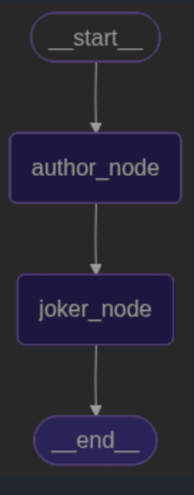

一、流式输出大模型调用结果
在介绍graph时，介绍了不同的输出结果方式，其中有一种messsage方式，用来监控大语言模型Token
from config.load_key import load_key
from langchain_openai import ChatOpenAI
llm = ChatOpenAI(
model="gpt-4.1-mini",
temperature=0,
openai_api_key=load_key("OPENAI_API_KEY"),
base_url="https://api.chatanywhere.tech/v1"
)
from langgraph.graph import StateGraph,START,MessagesState
from langgraph.checkpoint.memory import InMemorySaver
def call_node(state:MessagesState):
response = llm.invoke(state["messages"])
return {"messages":response}
builder = StateGraph(MessagesState).add_node(call_node).add_edge(START,"call_node")
graph = builder.compile();
for chunk in graph.stream(
{"messages":[{"role":"user","content":"请用中文介绍一下LangGraph是什么？"}]},
stream_mode="messages",
):
print(chunk)
(AIMessageChunk(content='', additional_kwargs={}, response_metadata={}, id='run--aaea305d-9ee2-4adc-9515-60be0b9be557'), {'langgraph_step': 1, 'langgraph_node': 'call_node', 'langgraph_triggers': ('branch:to:call_node',), 'langgraph_path': ('__pregel_pull', 'call_node'), 'langgraph_checkpoint_ns': 'call_node:a7cf333a-afd9-3293-d9a2-176e610ae479', 'checkpoint_ns': 'call_node:a7cf333a-afd9-3293-d9a2-176e610ae479', 'ls_provider': 'openai', 'ls_model_name': 'gpt-4.1-mini', 'ls_model_type': 'chat', 'ls_temperature': 0.0})
(AIMessageChunk(content='Lang', additional_kwargs={}, response_metadata={}, id='run--aaea305d-9ee2-4adc-9515-60be0b9be557'), {'langgraph_step': 1, 'langgraph_node': 'call_node', 'langgraph_triggers': ('branch:to:call_node',), 'langgraph_path': ('__pregel_pull', 'call_node'), 'langgraph_checkpoint_ns': 'call_node:a7cf333a-afd9-3293-d9a2-176e610ae479', 'checkpoint_ns': 'call_node:a7cf333a-afd9-3293-d9a2-176e610ae479', 'ls_provider': 'openai', 'ls_model_name': 'gpt-4.1-mini', 'ls_model_type': 'chat', 'ls_temperature': 0.0})
(AIMessageChunk(content='Graph', additional_kwargs={}, response_metadata={}, id='run--aaea305d-9ee2-4adc-9515-60be0b9be557'), {'langgraph_step': 1, 'langgraph_node': 'call_node', 'langgraph_triggers': ('branch:to:call_node',), 'langgraph_path': ('__pregel_pull', 'call_node'), 'langgraph_checkpoint_ns': 'call_node:a7cf333a-afd9-3293-d9a2-176e610ae479', 'checkpoint_ns': 'call_node:a7cf333a-afd9-3293-d9a2-176e610ae479', 'ls_provider': 'openai', 'ls_model_name': 'gpt-4.1-mini', 'ls_model_type': 'chat', 'ls_temperature': 0.0})
(AIMessageChunk(content=' 是', additional_kwargs={}, response_metadata={}, id='run--aaea305d-9ee2-4adc-9515-60be0b9be557'), {'langgraph_step': 1, 'langgraph_node': 'call_node', 'langgraph_triggers': ('branch:to:call_node',), 'langgraph_path': ('__pregel_pull', 'call_node'), 'langgraph_checkpoint_ns': 'call_node:a7cf333a-afd9-3293-d9a2-176e610ae479', 'checkpoint_ns': 'call_node:a7cf333a-afd9-3293-d9a2-176e610ae479', 'ls_provider': 'openai', 'ls_model_name': 'gpt-4.1-mini', 'ls_model_type': 'chat', 'ls_temperature': 0.0})
(AIMessageChunk(content='一个', additional_kwargs={}, response_metadata={}, id='run--aaea305d-9ee2-4adc-9515-60be0b9be557'), {'langgraph_step': 1, 'langgraph_node': 'call_node', 'langgraph_triggers': ('branch:to:call_node',), 'langgraph_path': ('__pregel_pull', 'call_node'), 'langgraph_checkpoint_ns': 'call_node:a7cf333a-afd9-3293-d9a2-176e610ae479', 'checkpoint_ns': 'call_node:a7cf333a-afd9-3293-d9a2-176e610ae479', 'ls_provider': 'openai', 'ls_model_name': 'gpt-4.1-mini', 'ls_model_type': 'chat', 'ls_temperature': 0.0})
(AIMessageChunk(content='用于', additional_kwargs={}, response_metadata={}, id='run--aaea305d-9ee2-4adc-9515-60be0b9be557'), {'langgraph_step': 1, 'langgraph_node': 'call_node', 'langgraph_triggers': ('branch:to:call_node',), 'langgraph_path': ('__pregel_pull', 'call_node'), 'langgraph_checkpoint_ns': 'call_node:a7cf333a-afd9-3293-d9a2-176e610ae479', 'checkpoint_ns': 'call_node:a7cf333a-afd9-3293-d9a2-176e610ae479', 'ls_provider': 'openai', 'ls_model_name': 'gpt-4.1-mini', 'ls_model_type': 'chat', 'ls_temperature': 0.0})
(AIMessageChunk(content='构', additional_kwargs={}, response_metadata={}, id='run--aaea305d-9ee2-4adc-9515-60be0b9be557'), {'langgraph_step': 1, 'langgraph_node': 'call_node', 'langgraph_triggers': ('branch:to:call_node',), 'langgraph_path': ('__pregel_pull', 'call_node'), 'langgraph_checkpoint_ns': 'call_node:a7cf333a-afd9-3293-d9a2-176e610ae479', 'checkpoint_ns': 'call_node:a7cf333a-afd9-3293-d9a2-176e610ae479', 'ls_provider': 'openai', 'ls_model_name': 'gpt-4.1-mini', 'ls_model_type': 'chat', 'ls_temperature': 0.0})
(AIMessageChunk(content='建', additional_kwargs={}, response_metadata={}, id='run--aaea305d-9ee2-4adc-9515-60be0b9be557'), {'langgraph_step': 1, 'langgraph_node': 'call_node', 'langgraph_triggers': ('branch:to:call_node',), 'langgraph_path': ('__pregel_pull', 'call_node'), 'langgraph_checkpoint_ns': 'call_node:a7cf333a-afd9-3293-d9a2-176e610ae479', 'checkpoint_ns': 'call_node:a7cf333a-afd9-3293-d9a2-176e610ae479', 'ls_provider': 'openai', 'ls_model_name': 'gpt-4.1-mini', 'ls_model_type': 'chat', 'ls_temperature': 0.0})
(AIMessageChunk(content='和', additional_kwargs={}, response_metadata={}, id='run--aaea305d-9ee2-4adc-9515-60be0b9be557'), {'langgraph_step': 1, 'langgraph_node': 'call_node', 'langgraph_triggers': ('branch:to:call_node',), 'langgraph_path': ('__pregel_pull', 'call_node'), 'langgraph_checkpoint_ns': 'call_node:a7cf333a-afd9-3293-d9a2-176e610ae479', 'checkpoint_ns': 'call_node:a7cf333a-afd9-3293-d9a2-176e610ae479', 'ls_provider': 'openai', 'ls_model_name': 'gpt-4.1-mini', 'ls_model_type': 'chat', 'ls_temperature': 0.0})
(AIMessageChunk(content='管理', additional_kwargs={}, response_metadata={}, id='run--aaea305d-9ee2-4adc-9515-60be0b9be557'), {'langgraph_step': 1, 'langgraph_node': 'call_node', 'langgraph_triggers': ('branch:to:call_node',), 'langgraph_path': ('__pregel_pull', 'call_node'), 'langgraph_checkpoint_ns': 'call_node:a7cf333a-afd9-3293-d9a2-176e610ae479', 'checkpoint_ns': 'call_node:a7cf333a-afd9-3293-d9a2-176e610ae479', 'ls_provider': 'openai', 'ls_model_name': 'gpt-4.1-mini', 'ls_model_type': 'chat', 'ls_temperature': 0.0})
(AIMessageChunk(content='语言', additional_kwargs={}, response_metadata={}, id='run--aaea305d-9ee2-4adc-9515-60be0b9be557'), {'langgraph_step': 1, 'langgraph_node': 'call_node', 'langgraph_triggers': ('branch:to:call_node',), 'langgraph_path': ('__pregel_pull', 'call_node'), 'langgraph_checkpoint_ns': 'call_node:a7cf333a-afd9-3293-d9a2-176e610ae479', 'checkpoint_ns': 'call_node:a7cf333a-afd9-3293-d9a2-176e610ae479', 'ls_provider': 'openai', 'ls_model_name': 'gpt-4.1-mini', 'ls_model_type': 'chat', 'ls_temperature': 0.0})
(AIMessageChunk(content='模型', additional_kwargs={}, response_metadata={}, id='run--aaea305d-9ee2-4adc-9515-60be0b9be557'), {'langgraph_step': 1, 'langgraph_node': 'call_node', 'langgraph_triggers': ('branch:to:call_node',), 'langgraph_path': ('__pregel_pull', 'call_node'), 'langgraph_checkpoint_ns': 'call_node:a7cf333a-afd9-3293-d9a2-176e610ae479', 'checkpoint_ns': 'call_node:a7cf333a-afd9-3293-d9a2-176e610ae479', 'ls_provider': 'openai', 'ls_model_name': 'gpt-4.1-mini', 'ls_model_type': 'chat', 'ls_temperature': 0.0})
(AIMessageChunk(content='（', additional_kwargs={}, response_metadata={}, id='run--aaea305d-9ee2-4adc-9515-60be0b9be557'), {'langgraph_step': 1, 'langgraph_node': 'call_node', 'langgraph_triggers': ('branch:to:call_node',), 'langgraph_path': ('__pregel_pull', 'call_node'), 'langgraph_checkpoint_ns': 'call_node:a7cf333a-afd9-3293-d9a2-176e610ae479', 'checkpoint_ns': 'call_node:a7cf333a-afd9-3293-d9a2-176e610ae479', 'ls_provider': 'openai', 'ls_model_name': 'gpt-4.1-mini', 'ls_model_type': 'chat', 'ls_temperature': 0.0})
(AIMessageChunk(content='如', additional_kwargs={}, response_metadata={}, id='run--aaea305d-9ee2-4adc-9515-60be0b9be557'), {'langgraph_step': 1, 'langgraph_node': 'call_node', 'langgraph_triggers': ('branch:to:call_node',), 'langgraph_path': ('__pregel_pull', 'call_node'), 'langgraph_checkpoint_ns': 'call_node:a7cf333a-afd9-3293-d9a2-176e610ae479', 'checkpoint_ns': 'call_node:a7cf333a-afd9-3293-d9a2-176e610ae479', 'ls_provider': 'openai', 'ls_model_name': 'gpt-4.1-mini', 'ls_model_type': 'chat', 'ls_temperature': 0.0})
(AIMessageChunk(content='大型', additional_kwargs={}, response_metadata={}, id='run--aaea305d-9ee2-4adc-9515-60be0b9be557'), {'langgraph_step': 1, 'langgraph_node': 'call_node', 'langgraph_triggers': ('branch:to:call_node',), 'langgraph_path': ('__pregel_pull', 'call_node'), 'langgraph_checkpoint_ns': 'call_node:a7cf333a-afd9-3293-d9a2-176e610ae479', 'checkpoint_ns': 'call_node:a7cf333a-afd9-3293-d9a2-176e610ae479', 'ls_provider': 'openai', 'ls_model_name': 'gpt-4.1-mini', 'ls_model_type': 'chat', 'ls_temperature': 0.0})
(AIMessageChunk(content='语言', additional_kwargs={}, response_metadata={}, id='run--aaea305d-9ee2-4adc-9515-60be0b9be557'), {'langgraph_step': 1, 'langgraph_node': 'call_node', 'langgraph_triggers': ('branch:to:call_node',), 'langgraph_path': ('__pregel_pull', 'call_node'), 'langgraph_checkpoint_ns': 'call_node:a7cf333a-afd9-3293-d9a2-176e610ae479', 'checkpoint_ns': 'call_node:a7cf333a-afd9-3293-d9a2-176e610ae479', 'ls_provider': 'openai', 'ls_model_name': 'gpt-4.1-mini', 'ls_model_type': 'chat', 'ls_temperature': 0.0})
(AIMessageChunk(content='模型', additional_kwargs={}, response_metadata={}, id='run--aaea305d-9ee2-4adc-9515-60be0b9be557'), {'langgraph_step': 1, 'langgraph_node': 'call_node', 'langgraph_triggers': ('branch:to:call_node',), 'langgraph_path': ('__pregel_pull', 'call_node'), 'langgraph_checkpoint_ns': 'call_node:a7cf333a-afd9-3293-d9a2-176e610ae479', 'checkpoint_ns': 'call_node:a7cf333a-afd9-3293-d9a2-176e610ae479', 'ls_provider': 'openai', 'ls_model_name': 'gpt-4.1-mini', 'ls_model_type': 'chat', 'ls_temperature': 0.0})
(AIMessageChunk(content='，', additional_kwargs={}, response_metadata={}, id='run--aaea305d-9ee2-4adc-9515-60be0b9be557'), {'langgraph_step': 1, 'langgraph_node': 'call_node', 'langgraph_triggers': ('branch:to:call_node',), 'langgraph_path': ('__pregel_pull', 'call_node'), 'langgraph_checkpoint_ns': 'call_node:a7cf333a-afd9-3293-d9a2-176e610ae479', 'checkpoint_ns': 'call_node:a7cf333a-afd9-3293-d9a2-176e610ae479', 'ls_provider': 'openai', 'ls_model_name': 'gpt-4.1-mini', 'ls_model_type': 'chat', 'ls_temperature': 0.0})
(AIMessageChunk(content='LL', additional_kwargs={}, response_metadata={}, id='run--aaea305d-9ee2-4adc-9515-60be0b9be557'), {'langgraph_step': 1, 'langgraph_node': 'call_node', 'langgraph_triggers': ('branch:to:call_node',), 'langgraph_path': ('__pregel_pull', 'call_node'), 'langgraph_checkpoint_ns': 'call_node:a7cf333a-afd9-3293-d9a2-176e610ae479', 'checkpoint_ns': 'call_node:a7cf333a-afd9-3293-d9a2-176e610ae479', 'ls_provider': 'openai', 'ls_model_name': 'gpt-4.1-mini', 'ls_model_type': 'chat', 'ls_temperature': 0.0})
(AIMessageChunk(content='M', additional_kwargs={}, response_metadata={}, id='run--aaea305d-9ee2-4adc-9515-60be0b9be557'), {'langgraph_step': 1, 'langgraph_node': 'call_node', 'langgraph_triggers': ('branch:to:call_node',), 'langgraph_path': ('__pregel_pull', 'call_node'), 'langgraph_checkpoint_ns': 'call_node:a7cf333a-afd9-3293-d9a2-176e610ae479', 'checkpoint_ns': 'call_node:a7cf333a-afd9-3293-d9a2-176e610ae479', 'ls_provider': 'openai', 'ls_model_name': 'gpt-4.1-mini', 'ls_model_type': 'chat', 'ls_temperature': 0.0})
(AIMessageChunk(content='）', additional_kwargs={}, response_metadata={}, id='run--aaea305d-9ee2-4adc-9515-60be0b9be557'), {'langgraph_step': 1, 'langgraph_node': 'call_node', 'langgraph_triggers': ('branch:to:call_node',), 'langgraph_path': ('__pregel_pull', 'call_node'), 'langgraph_checkpoint_ns': 'call_node:a7cf333a-afd9-3293-d9a2-176e610ae479', 'checkpoint_ns': 'call_node:a7cf333a-afd9-3293-d9a2-176e610ae479', 'ls_provider': 'openai', 'ls_model_name': 'gpt-4.1-mini', 'ls_model_type': 'chat', 'ls_temperature': 0.0})
(AIMessageChunk(content='工作', additional_kwargs={}, response_metadata={}, id='run--aaea305d-9ee2-4adc-9515-60be0b9be557'), {'langgraph_step': 1, 'langgraph_node': 'call_node', 'langgraph_triggers': ('branch:to:call_node',), 'langgraph_path': ('__pregel_pull', 'call_node'), 'langgraph_checkpoint_ns': 'call_node:a7cf333a-afd9-3293-d9a2-176e610ae479', 'checkpoint_ns': 'call_node:a7cf333a-afd9-3293-d9a2-176e610ae479', 'ls_provider': 'openai', 'ls_model_name': 'gpt-4.1-mini', 'ls_model_type': 'chat', 'ls_temperature': 0.0})
(AIMessageChunk(content='流', additional_kwargs={}, response_metadata={}, id='run--aaea305d-9ee2-4adc-9515-60be0b9be557'), {'langgraph_step': 1, 'langgraph_node': 'call_node', 'langgraph_triggers': ('branch:to:call_node',), 'langgraph_path': ('__pregel_pull', 'call_node'), 'langgraph_checkpoint_ns': 'call_node:a7cf333a-afd9-3293-d9a2-176e610ae479', 'checkpoint_ns': 'call_node:a7cf333a-afd9-3293-d9a2-176e610ae479', 'ls_provider': 'openai', 'ls_model_name': 'gpt-4.1-mini', 'ls_model_type': 'chat', 'ls_temperature': 0.0})
(AIMessageChunk(content='的', additional_kwargs={}, response_metadata={}, id='run--aaea305d-9ee2-4adc-9515-60be0b9be557'), {'langgraph_step': 1, 'langgraph_node': 'call_node', 'langgraph_triggers': ('branch:to:call_node',), 'langgraph_path': ('__pregel_pull', 'call_node'), 'langgraph_checkpoint_ns': 'call_node:a7cf333a-afd9-3293-d9a2-176e610ae479', 'checkpoint_ns': 'call_node:a7cf333a-afd9-3293-d9a2-176e610ae479', 'ls_provider': 'openai', 'ls_model_name': 'gpt-4.1-mini', 'ls_model_type': 'chat', 'ls_temperature': 0.0})
(AIMessageChunk(content='工具', additional_kwargs={}, response_metadata={}, id='run--aaea305d-9ee2-4adc-9515-60be0b9be557'), {'langgraph_step': 1, 'langgraph_node': 'call_node', 'langgraph_triggers': ('branch:to:call_node',), 'langgraph_path': ('__pregel_pull', 'call_node'), 'langgraph_checkpoint_ns': 'call_node:a7cf333a-afd9-3293-d9a2-176e610ae479', 'checkpoint_ns': 'call_node:a7cf333a-afd9-3293-d9a2-176e610ae479', 'ls_provider': 'openai', 'ls_model_name': 'gpt-4.1-mini', 'ls_model_type': 'chat', 'ls_temperature': 0.0})
(AIMessageChunk(content='或', additional_kwargs={}, response_metadata={}, id='run--aaea305d-9ee2-4adc-9515-60be0b9be557'), {'langgraph_step': 1, 'langgraph_node': 'call_node', 'langgraph_triggers': ('branch:to:call_node',), 'langgraph_path': ('__pregel_pull', 'call_node'), 'langgraph_checkpoint_ns': 'call_node:a7cf333a-afd9-3293-d9a2-176e610ae479', 'checkpoint_ns': 'call_node:a7cf333a-afd9-3293-d9a2-176e610ae479', 'ls_provider': 'openai', 'ls_model_name': 'gpt-4.1-mini', 'ls_model_type': 'chat', 'ls_temperature': 0.0})
(AIMessageChunk(content='框', additional_kwargs={}, response_metadata={}, id='run--aaea305d-9ee2-4adc-9515-60be0b9be557'), {'langgraph_step': 1, 'langgraph_node': 'call_node', 'langgraph_triggers': ('branch:to:call_node',), 'langgraph_path': ('__pregel_pull', 'call_node'), 'langgraph_checkpoint_ns': 'call_node:a7cf333a-afd9-3293-d9a2-176e610ae479', 'checkpoint_ns': 'call_node:a7cf333a-afd9-3293-d9a2-176e610ae479', 'ls_provider': 'openai', 'ls_model_name': 'gpt-4.1-mini', 'ls_model_type': 'chat', 'ls_temperature': 0.0})
(AIMessageChunk(content='架', additional_kwargs={}, response_metadata={}, id='run--aaea305d-9ee2-4adc-9515-60be0b9be557'), {'langgraph_step': 1, 'langgraph_node': 'call_node', 'langgraph_triggers': ('branch:to:call_node',), 'langgraph_path': ('__pregel_pull', 'call_node'), 'langgraph_checkpoint_ns': 'call_node:a7cf333a-afd9-3293-d9a2-176e610ae479', 'checkpoint_ns': 'call_node:a7cf333a-afd9-3293-d9a2-176e610ae479', 'ls_provider': 'openai', 'ls_model_name': 'gpt-4.1-mini', 'ls_model_type': 'chat', 'ls_temperature': 0.0})
(AIMessageChunk(content='。', additional_kwargs={}, response_metadata={}, id='run--aaea305d-9ee2-4adc-9515-60be0b9be557'), {'langgraph_step': 1, 'langgraph_node': 'call_node', 'langgraph_triggers': ('branch:to:call_node',), 'langgraph_path': ('__pregel_pull', 'call_node'), 'langgraph_checkpoint_ns': 'call_node:a7cf333a-afd9-3293-d9a2-176e610ae479', 'checkpoint_ns': 'call_node:a7cf333a-afd9-3293-d9a2-176e610ae479', 'ls_provider': 'openai', 'ls_model_name': 'gpt-4.1-mini', 'ls_model_type': 'chat', 'ls_temperature': 0.0})
(AIMessageChunk(content='它', additional_kwargs={}, response_metadata={}, id='run--aaea305d-9ee2-4adc-9515-60be0b9be557'), {'langgraph_step': 1, 'langgraph_node': 'call_node', 'langgraph_triggers': ('branch:to:call_node',), 'langgraph_path': ('__pregel_pull', 'call_node'), 'langgraph_checkpoint_ns': 'call_node:a7cf333a-afd9-3293-d9a2-176e610ae479', 'checkpoint_ns': 'call_node:a7cf333a-afd9-3293-d9a2-176e610ae479', 'ls_provider': 'openai', 'ls_model_name': 'gpt-4.1-mini', 'ls_model_type': 'chat', 'ls_temperature': 0.0})
(AIMessageChunk(content='通过', additional_kwargs={}, response_metadata={}, id='run--aaea305d-9ee2-4adc-9515-60be0b9be557'), {'langgraph_step': 1, 'langgraph_node': 'call_node', 'langgraph_triggers': ('branch:to:call_node',), 'langgraph_path': ('__pregel_pull', 'call_node'), 'langgraph_checkpoint_ns': 'call_node:a7cf333a-afd9-3293-d9a2-176e610ae479', 'checkpoint_ns': 'call_node:a7cf333a-afd9-3293-d9a2-176e610ae479', 'ls_provider': 'openai', 'ls_model_name': 'gpt-4.1-mini', 'ls_model_type': 'chat', 'ls_temperature': 0.0})
(AIMessageChunk(content='图', additional_kwargs={}, response_metadata={}, id='run--aaea305d-9ee2-4adc-9515-60be0b9be557'), {'langgraph_step': 1, 'langgraph_node': 'call_node', 'langgraph_triggers': ('branch:to:call_node',), 'langgraph_path': ('__pregel_pull', 'call_node'), 'langgraph_checkpoint_ns': 'call_node:a7cf333a-afd9-3293-d9a2-176e610ae479', 'checkpoint_ns': 'call_node:a7cf333a-afd9-3293-d9a2-176e610ae479', 'ls_provider': 'openai', 'ls_model_name': 'gpt-4.1-mini', 'ls_model_type': 'chat', 'ls_temperature': 0.0})
(AIMessageChunk(content='结构', additional_kwargs={}, response_metadata={}, id='run--aaea305d-9ee2-4adc-9515-60be0b9be557'), {'langgraph_step': 1, 'langgraph_node': 'call_node', 'langgraph_triggers': ('branch:to:call_node',), 'langgraph_path': ('__pregel_pull', 'call_node'), 'langgraph_checkpoint_ns': 'call_node:a7cf333a-afd9-3293-d9a2-176e610ae479', 'checkpoint_ns': 'call_node:a7cf333a-afd9-3293-d9a2-176e610ae479', 'ls_provider': 'openai', 'ls_model_name': 'gpt-4.1-mini', 'ls_model_type': 'chat', 'ls_temperature': 0.0})
(AIMessageChunk(content='的', additional_kwargs={}, response_metadata={}, id='run--aaea305d-9ee2-4adc-9515-60be0b9be557'), {'langgraph_step': 1, 'langgraph_node': 'call_node', 'langgraph_triggers': ('branch:to:call_node',), 'langgraph_path': ('__pregel_pull', 'call_node'), 'langgraph_checkpoint_ns': 'call_node:a7cf333a-afd9-3293-d9a2-176e610ae479', 'checkpoint_ns': 'call_node:a7cf333a-afd9-3293-d9a2-176e610ae479', 'ls_provider': 'openai', 'ls_model_name': 'gpt-4.1-mini', 'ls_model_type': 'chat', 'ls_temperature': 0.0})
(AIMessageChunk(content='方式', additional_kwargs={}, response_metadata={}, id='run--aaea305d-9ee2-4adc-9515-60be0b9be557'), {'langgraph_step': 1, 'langgraph_node': 'call_node', 'langgraph_triggers': ('branch:to:call_node',), 'langgraph_path': ('__pregel_pull', 'call_node'), 'langgraph_checkpoint_ns': 'call_node:a7cf333a-afd9-3293-d9a2-176e610ae479', 'checkpoint_ns': 'call_node:a7cf333a-afd9-3293-d9a2-176e610ae479', 'ls_provider': 'openai', 'ls_model_name': 'gpt-4.1-mini', 'ls_model_type': 'chat', 'ls_temperature': 0.0})
(AIMessageChunk(content='，将', additional_kwargs={}, response_metadata={}, id='run--aaea305d-9ee2-4adc-9515-60be0b9be557'), {'langgraph_step': 1, 'langgraph_node': 'call_node', 'langgraph_triggers': ('branch:to:call_node',), 'langgraph_path': ('__pregel_pull', 'call_node'), 'langgraph_checkpoint_ns': 'call_node:a7cf333a-afd9-3293-d9a2-176e610ae479', 'checkpoint_ns': 'call_node:a7cf333a-afd9-3293-d9a2-176e610ae479', 'ls_provider': 'openai', 'ls_model_name': 'gpt-4.1-mini', 'ls_model_type': 'chat', 'ls_temperature': 0.0})
(AIMessageChunk(content='各种', additional_kwargs={}, response_metadata={}, id='run--aaea305d-9ee2-4adc-9515-60be0b9be557'), {'langgraph_step': 1, 'langgraph_node': 'call_node', 'langgraph_triggers': ('branch:to:call_node',), 'langgraph_path': ('__pregel_pull', 'call_node'), 'langgraph_checkpoint_ns': 'call_node:a7cf333a-afd9-3293-d9a2-176e610ae479', 'checkpoint_ns': 'call_node:a7cf333a-afd9-3293-d9a2-176e610ae479', 'ls_provider': 'openai', 'ls_model_name': 'gpt-4.1-mini', 'ls_model_type': 'chat', 'ls_temperature': 0.0})
(AIMessageChunk(content='语言', additional_kwargs={}, response_metadata={}, id='run--aaea305d-9ee2-4adc-9515-60be0b9be557'), {'langgraph_step': 1, 'langgraph_node': 'call_node', 'langgraph_triggers': ('branch:to:call_node',), 'langgraph_path': ('__pregel_pull', 'call_node'), 'langgraph_checkpoint_ns': 'call_node:a7cf333a-afd9-3293-d9a2-176e610ae479', 'checkpoint_ns': 'call_node:a7cf333a-afd9-3293-d9a2-176e610ae479', 'ls_provider': 'openai', 'ls_model_name': 'gpt-4.1-mini', 'ls_model_type': 'chat', 'ls_temperature': 0.0})
(AIMessageChunk(content='模型', additional_kwargs={}, response_metadata={}, id='run--aaea305d-9ee2-4adc-9515-60be0b9be557'), {'langgraph_step': 1, 'langgraph_node': 'call_node', 'langgraph_triggers': ('branch:to:call_node',), 'langgraph_path': ('__pregel_pull', 'call_node'), 'langgraph_checkpoint_ns': 'call_node:a7cf333a-afd9-3293-d9a2-176e610ae479', 'checkpoint_ns': 'call_node:a7cf333a-afd9-3293-d9a2-176e610ae479', 'ls_provider': 'openai', 'ls_model_name': 'gpt-4.1-mini', 'ls_model_type': 'chat', 'ls_temperature': 0.0})
(AIMessageChunk(content='组件', additional_kwargs={}, response_metadata={}, id='run--aaea305d-9ee2-4adc-9515-60be0b9be557'), {'langgraph_step': 1, 'langgraph_node': 'call_node', 'langgraph_triggers': ('branch:to:call_node',), 'langgraph_path': ('__pregel_pull', 'call_node'), 'langgraph_checkpoint_ns': 'call_node:a7cf333a-afd9-3293-d9a2-176e610ae479', 'checkpoint_ns': 'call_node:a7cf333a-afd9-3293-d9a2-176e610ae479', 'ls_provider': 'openai', 'ls_model_name': 'gpt-4.1-mini', 'ls_model_type': 'chat', 'ls_temperature': 0.0})
(AIMessageChunk(content='、', additional_kwargs={}, response_metadata={}, id='run--aaea305d-9ee2-4adc-9515-60be0b9be557'), {'langgraph_step': 1, 'langgraph_node': 'call_node', 'langgraph_triggers': ('branch:to:call_node',), 'langgraph_path': ('__pregel_pull', 'call_node'), 'langgraph_checkpoint_ns': 'call_node:a7cf333a-afd9-3293-d9a2-176e610ae479', 'checkpoint_ns': 'call_node:a7cf333a-afd9-3293-d9a2-176e610ae479', 'ls_provider': 'openai', 'ls_model_name': 'gpt-4.1-mini', 'ls_model_type': 'chat', 'ls_temperature': 0.0})
(AIMessageChunk(content='数据', additional_kwargs={}, response_metadata={}, id='run--aaea305d-9ee2-4adc-9515-60be0b9be557'), {'langgraph_step': 1, 'langgraph_node': 'call_node', 'langgraph_triggers': ('branch:to:call_node',), 'langgraph_path': ('__pregel_pull', 'call_node'), 'langgraph_checkpoint_ns': 'call_node:a7cf333a-afd9-3293-d9a2-176e610ae479', 'checkpoint_ns': 'call_node:a7cf333a-afd9-3293-d9a2-176e610ae479', 'ls_provider': 'openai', 'ls_model_name': 'gpt-4.1-mini', 'ls_model_type': 'chat', 'ls_temperature': 0.0})
(AIMessageChunk(content='处理', additional_kwargs={}, response_metadata={}, id='run--aaea305d-9ee2-4adc-9515-60be0b9be557'), {'langgraph_step': 1, 'langgraph_node': 'call_node', 'langgraph_triggers': ('branch:to:call_node',), 'langgraph_path': ('__pregel_pull', 'call_node'), 'langgraph_checkpoint_ns': 'call_node:a7cf333a-afd9-3293-d9a2-176e610ae479', 'checkpoint_ns': 'call_node:a7cf333a-afd9-3293-d9a2-176e610ae479', 'ls_provider': 'openai', 'ls_model_name': 'gpt-4.1-mini', 'ls_model_type': 'chat', 'ls_temperature': 0.0})
(AIMessageChunk(content='步骤', additional_kwargs={}, response_metadata={}, id='run--aaea305d-9ee2-4adc-9515-60be0b9be557'), {'langgraph_step': 1, 'langgraph_node': 'call_node', 'langgraph_triggers': ('branch:to:call_node',), 'langgraph_path': ('__pregel_pull', 'call_node'), 'langgraph_checkpoint_ns': 'call_node:a7cf333a-afd9-3293-d9a2-176e610ae479', 'checkpoint_ns': 'call_node:a7cf333a-afd9-3293-d9a2-176e610ae479', 'ls_provider': 'openai', 'ls_model_name': 'gpt-4.1-mini', 'ls_model_type': 'chat', 'ls_temperature': 0.0})
(AIMessageChunk(content='和', additional_kwargs={}, response_metadata={}, id='run--aaea305d-9ee2-4adc-9515-60be0b9be557'), {'langgraph_step': 1, 'langgraph_node': 'call_node', 'langgraph_triggers': ('branch:to:call_node',), 'langgraph_path': ('__pregel_pull', 'call_node'), 'langgraph_checkpoint_ns': 'call_node:a7cf333a-afd9-3293-d9a2-176e610ae479', 'checkpoint_ns': 'call_node:a7cf333a-afd9-3293-d9a2-176e610ae479', 'ls_provider': 'openai', 'ls_model_name': 'gpt-4.1-mini', 'ls_model_type': 'chat', 'ls_temperature': 0.0})
(AIMessageChunk(content='推', additional_kwargs={}, response_metadata={}, id='run--aaea305d-9ee2-4adc-9515-60be0b9be557'), {'langgraph_step': 1, 'langgraph_node': 'call_node', 'langgraph_triggers': ('branch:to:call_node',), 'langgraph_path': ('__pregel_pull', 'call_node'), 'langgraph_checkpoint_ns': 'call_node:a7cf333a-afd9-3293-d9a2-176e610ae479', 'checkpoint_ns': 'call_node:a7cf333a-afd9-3293-d9a2-176e610ae479', 'ls_provider': 'openai', 'ls_model_name': 'gpt-4.1-mini', 'ls_model_type': 'chat', 'ls_temperature': 0.0})
(AIMessageChunk(content='理', additional_kwargs={}, response_metadata={}, id='run--aaea305d-9ee2-4adc-9515-60be0b9be557'), {'langgraph_step': 1, 'langgraph_node': 'call_node', 'langgraph_triggers': ('branch:to:call_node',), 'langgraph_path': ('__pregel_pull', 'call_node'), 'langgraph_checkpoint_ns': 'call_node:a7cf333a-afd9-3293-d9a2-176e610ae479', 'checkpoint_ns': 'call_node:a7cf333a-afd9-3293-d9a2-176e610ae479', 'ls_provider': 'openai', 'ls_model_name': 'gpt-4.1-mini', 'ls_model_type': 'chat', 'ls_temperature': 0.0})
(AIMessageChunk(content='流程', additional_kwargs={}, response_metadata={}, id='run--aaea305d-9ee2-4adc-9515-60be0b9be557'), {'langgraph_step': 1, 'langgraph_node': 'call_node', 'langgraph_triggers': ('branch:to:call_node',), 'langgraph_path': ('__pregel_pull', 'call_node'), 'langgraph_checkpoint_ns': 'call_node:a7cf333a-afd9-3293-d9a2-176e610ae479', 'checkpoint_ns': 'call_node:a7cf333a-afd9-3293-d9a2-176e610ae479', 'ls_provider': 'openai', 'ls_model_name': 'gpt-4.1-mini', 'ls_model_type': 'chat', 'ls_temperature': 0.0})
(AIMessageChunk(content='连接', additional_kwargs={}, response_metadata={}, id='run--aaea305d-9ee2-4adc-9515-60be0b9be557'), {'langgraph_step': 1, 'langgraph_node': 'call_node', 'langgraph_triggers': ('branch:to:call_node',), 'langgraph_path': ('__pregel_pull', 'call_node'), 'langgraph_checkpoint_ns': 'call_node:a7cf333a-afd9-3293-d9a2-176e610ae479', 'checkpoint_ns': 'call_node:a7cf333a-afd9-3293-d9a2-176e610ae479', 'ls_provider': 'openai', 'ls_model_name': 'gpt-4.1-mini', 'ls_model_type': 'chat', 'ls_temperature': 0.0})
(AIMessageChunk(content='起来', additional_kwargs={}, response_metadata={}, id='run--aaea305d-9ee2-4adc-9515-60be0b9be557'), {'langgraph_step': 1, 'langgraph_node': 'call_node', 'langgraph_triggers': ('branch:to:call_node',), 'langgraph_path': ('__pregel_pull', 'call_node'), 'langgraph_checkpoint_ns': 'call_node:a7cf333a-afd9-3293-d9a2-176e610ae479', 'checkpoint_ns': 'call_node:a7cf333a-afd9-3293-d9a2-176e610ae479', 'ls_provider': 'openai', 'ls_model_name': 'gpt-4.1-mini', 'ls_model_type': 'chat', 'ls_temperature': 0.0})
(AIMessageChunk(content='，', additional_kwargs={}, response_metadata={}, id='run--aaea305d-9ee2-4adc-9515-60be0b9be557'), {'langgraph_step': 1, 'langgraph_node': 'call_node', 'langgraph_triggers': ('branch:to:call_node',), 'langgraph_path': ('__pregel_pull', 'call_node'), 'langgraph_checkpoint_ns': 'call_node:a7cf333a-afd9-3293-d9a2-176e610ae479', 'checkpoint_ns': 'call_node:a7cf333a-afd9-3293-d9a2-176e610ae479', 'ls_provider': 'openai', 'ls_model_name': 'gpt-4.1-mini', 'ls_model_type': 'chat', 'ls_temperature': 0.0})
(AIMessageChunk(content='帮助', additional_kwargs={}, response_metadata={}, id='run--aaea305d-9ee2-4adc-9515-60be0b9be557'), {'langgraph_step': 1, 'langgraph_node': 'call_node', 'langgraph_triggers': ('branch:to:call_node',), 'langgraph_path': ('__pregel_pull', 'call_node'), 'langgraph_checkpoint_ns': 'call_node:a7cf333a-afd9-3293-d9a2-176e610ae479', 'checkpoint_ns': 'call_node:a7cf333a-afd9-3293-d9a2-176e610ae479', 'ls_provider': 'openai', 'ls_model_name': 'gpt-4.1-mini', 'ls_model_type': 'chat', 'ls_temperature': 0.0})
(AIMessageChunk(content='开发', additional_kwargs={}, response_metadata={}, id='run--aaea305d-9ee2-4adc-9515-60be0b9be557'), {'langgraph_step': 1, 'langgraph_node': 'call_node', 'langgraph_triggers': ('branch:to:call_node',), 'langgraph_path': ('__pregel_pull', 'call_node'), 'langgraph_checkpoint_ns': 'call_node:a7cf333a-afd9-3293-d9a2-176e610ae479', 'checkpoint_ns': 'call_node:a7cf333a-afd9-3293-d9a2-176e610ae479', 'ls_provider': 'openai', 'ls_model_name': 'gpt-4.1-mini', 'ls_model_type': 'chat', 'ls_temperature': 0.0})
(AIMessageChunk(content='者', additional_kwargs={}, response_metadata={}, id='run--aaea305d-9ee2-4adc-9515-60be0b9be557'), {'langgraph_step': 1, 'langgraph_node': 'call_node', 'langgraph_triggers': ('branch:to:call_node',), 'langgraph_path': ('__pregel_pull', 'call_node'), 'langgraph_checkpoint_ns': 'call_node:a7cf333a-afd9-3293-d9a2-176e610ae479', 'checkpoint_ns': 'call_node:a7cf333a-afd9-3293-d9a2-176e610ae479', 'ls_provider': 'openai', 'ls_model_name': 'gpt-4.1-mini', 'ls_model_type': 'chat', 'ls_temperature': 0.0})
(AIMessageChunk(content='更', additional_kwargs={}, response_metadata={}, id='run--aaea305d-9ee2-4adc-9515-60be0b9be557'), {'langgraph_step': 1, 'langgraph_node': 'call_node', 'langgraph_triggers': ('branch:to:call_node',), 'langgraph_path': ('__pregel_pull', 'call_node'), 'langgraph_checkpoint_ns': 'call_node:a7cf333a-afd9-3293-d9a2-176e610ae479', 'checkpoint_ns': 'call_node:a7cf333a-afd9-3293-d9a2-176e610ae479', 'ls_provider': 'openai', 'ls_model_name': 'gpt-4.1-mini', 'ls_model_type': 'chat', 'ls_temperature': 0.0})
(AIMessageChunk(content='方便', additional_kwargs={}, response_metadata={}, id='run--aaea305d-9ee2-4adc-9515-60be0b9be557'), {'langgraph_step': 1, 'langgraph_node': 'call_node', 'langgraph_triggers': ('branch:to:call_node',), 'langgraph_path': ('__pregel_pull', 'call_node'), 'langgraph_checkpoint_ns': 'call_node:a7cf333a-afd9-3293-d9a2-176e610ae479', 'checkpoint_ns': 'call_node:a7cf333a-afd9-3293-d9a2-176e610ae479', 'ls_provider': 'openai', 'ls_model_name': 'gpt-4.1-mini', 'ls_model_type': 'chat', 'ls_temperature': 0.0})
(AIMessageChunk(content='地', additional_kwargs={}, response_metadata={}, id='run--aaea305d-9ee2-4adc-9515-60be0b9be557'), {'langgraph_step': 1, 'langgraph_node': 'call_node', 'langgraph_triggers': ('branch:to:call_node',), 'langgraph_path': ('__pregel_pull', 'call_node'), 'langgraph_checkpoint_ns': 'call_node:a7cf333a-afd9-3293-d9a2-176e610ae479', 'checkpoint_ns': 'call_node:a7cf333a-afd9-3293-d9a2-176e610ae479', 'ls_provider': 'openai', 'ls_model_name': 'gpt-4.1-mini', 'ls_model_type': 'chat', 'ls_temperature': 0.0})
(AIMessageChunk(content='设计', additional_kwargs={}, response_metadata={}, id='run--aaea305d-9ee2-4adc-9515-60be0b9be557'), {'langgraph_step': 1, 'langgraph_node': 'call_node', 'langgraph_triggers': ('branch:to:call_node',), 'langgraph_path': ('__pregel_pull', 'call_node'), 'langgraph_checkpoint_ns': 'call_node:a7cf333a-afd9-3293-d9a2-176e610ae479', 'checkpoint_ns': 'call_node:a7cf333a-afd9-3293-d9a2-176e610ae479', 'ls_provider': 'openai', 'ls_model_name': 'gpt-4.1-mini', 'ls_model_type': 'chat', 'ls_temperature': 0.0})
(AIMessageChunk(content='、', additional_kwargs={}, response_metadata={}, id='run--aaea305d-9ee2-4adc-9515-60be0b9be557'), {'langgraph_step': 1, 'langgraph_node': 'call_node', 'langgraph_triggers': ('branch:to:call_node',), 'langgraph_path': ('__pregel_pull', 'call_node'), 'langgraph_checkpoint_ns': 'call_node:a7cf333a-afd9-3293-d9a2-176e610ae479', 'checkpoint_ns': 'call_node:a7cf333a-afd9-3293-d9a2-176e610ae479', 'ls_provider': 'openai', 'ls_model_name': 'gpt-4.1-mini', 'ls_model_type': 'chat', 'ls_temperature': 0.0})
(AIMessageChunk(content='调', additional_kwargs={}, response_metadata={}, id='run--aaea305d-9ee2-4adc-9515-60be0b9be557'), {'langgraph_step': 1, 'langgraph_node': 'call_node', 'langgraph_triggers': ('branch:to:call_node',), 'langgraph_path': ('__pregel_pull', 'call_node'), 'langgraph_checkpoint_ns': 'call_node:a7cf333a-afd9-3293-d9a2-176e610ae479', 'checkpoint_ns': 'call_node:a7cf333a-afd9-3293-d9a2-176e610ae479', 'ls_provider': 'openai', 'ls_model_name': 'gpt-4.1-mini', 'ls_model_type': 'chat', 'ls_temperature': 0.0})
(AIMessageChunk(content='试', additional_kwargs={}, response_metadata={}, id='run--aaea305d-9ee2-4adc-9515-60be0b9be557'), {'langgraph_step': 1, 'langgraph_node': 'call_node', 'langgraph_triggers': ('branch:to:call_node',), 'langgraph_path': ('__pregel_pull', 'call_node'), 'langgraph_checkpoint_ns': 'call_node:a7cf333a-afd9-3293-d9a2-176e610ae479', 'checkpoint_ns': 'call_node:a7cf333a-afd9-3293-d9a2-176e610ae479', 'ls_provider': 'openai', 'ls_model_name': 'gpt-4.1-mini', 'ls_model_type': 'chat', 'ls_temperature': 0.0})
(AIMessageChunk(content='和', additional_kwargs={}, response_metadata={}, id='run--aaea305d-9ee2-4adc-9515-60be0b9be557'), {'langgraph_step': 1, 'langgraph_node': 'call_node', 'langgraph_triggers': ('branch:to:call_node',), 'langgraph_path': ('__pregel_pull', 'call_node'), 'langgraph_checkpoint_ns': 'call_node:a7cf333a-afd9-3293-d9a2-176e610ae479', 'checkpoint_ns': 'call_node:a7cf333a-afd9-3293-d9a2-176e610ae479', 'ls_provider': 'openai', 'ls_model_name': 'gpt-4.1-mini', 'ls_model_type': 'chat', 'ls_temperature': 0.0})
(AIMessageChunk(content='扩', additional_kwargs={}, response_metadata={}, id='run--aaea305d-9ee2-4adc-9515-60be0b9be557'), {'langgraph_step': 1, 'langgraph_node': 'call_node', 'langgraph_triggers': ('branch:to:call_node',), 'langgraph_path': ('__pregel_pull', 'call_node'), 'langgraph_checkpoint_ns': 'call_node:a7cf333a-afd9-3293-d9a2-176e610ae479', 'checkpoint_ns': 'call_node:a7cf333a-afd9-3293-d9a2-176e610ae479', 'ls_provider': 'openai', 'ls_model_name': 'gpt-4.1-mini', 'ls_model_type': 'chat', 'ls_temperature': 0.0})
(AIMessageChunk(content='展', additional_kwargs={}, response_metadata={}, id='run--aaea305d-9ee2-4adc-9515-60be0b9be557'), {'langgraph_step': 1, 'langgraph_node': 'call_node', 'langgraph_triggers': ('branch:to:call_node',), 'langgraph_path': ('__pregel_pull', 'call_node'), 'langgraph_checkpoint_ns': 'call_node:a7cf333a-afd9-3293-d9a2-176e610ae479', 'checkpoint_ns': 'call_node:a7cf333a-afd9-3293-d9a2-176e610ae479', 'ls_provider': 'openai', 'ls_model_name': 'gpt-4.1-mini', 'ls_model_type': 'chat', 'ls_temperature': 0.0})
(AIMessageChunk(content='复杂', additional_kwargs={}, response_metadata={}, id='run--aaea305d-9ee2-4adc-9515-60be0b9be557'), {'langgraph_step': 1, 'langgraph_node': 'call_node', 'langgraph_triggers': ('branch:to:call_node',), 'langgraph_path': ('__pregel_pull', 'call_node'), 'langgraph_checkpoint_ns': 'call_node:a7cf333a-afd9-3293-d9a2-176e610ae479', 'checkpoint_ns': 'call_node:a7cf333a-afd9-3293-d9a2-176e610ae479', 'ls_provider': 'openai', 'ls_model_name': 'gpt-4.1-mini', 'ls_model_type': 'chat', 'ls_temperature': 0.0})
(AIMessageChunk(content='的', additional_kwargs={}, response_metadata={}, id='run--aaea305d-9ee2-4adc-9515-60be0b9be557'), {'langgraph_step': 1, 'langgraph_node': 'call_node', 'langgraph_triggers': ('branch:to:call_node',), 'langgraph_path': ('__pregel_pull', 'call_node'), 'langgraph_checkpoint_ns': 'call_node:a7cf333a-afd9-3293-d9a2-176e610ae479', 'checkpoint_ns': 'call_node:a7cf333a-afd9-3293-d9a2-176e610ae479', 'ls_provider': 'openai', 'ls_model_name': 'gpt-4.1-mini', 'ls_model_type': 'chat', 'ls_temperature': 0.0})
(AIMessageChunk(content='自然', additional_kwargs={}, response_metadata={}, id='run--aaea305d-9ee2-4adc-9515-60be0b9be557'), {'langgraph_step': 1, 'langgraph_node': 'call_node', 'langgraph_triggers': ('branch:to:call_node',), 'langgraph_path': ('__pregel_pull', 'call_node'), 'langgraph_checkpoint_ns': 'call_node:a7cf333a-afd9-3293-d9a2-176e610ae479', 'checkpoint_ns': 'call_node:a7cf333a-afd9-3293-d9a2-176e610ae479', 'ls_provider': 'openai', 'ls_model_name': 'gpt-4.1-mini', 'ls_model_type': 'chat', 'ls_temperature': 0.0})
(AIMessageChunk(content='语言', additional_kwargs={}, response_metadata={}, id='run--aaea305d-9ee2-4adc-9515-60be0b9be557'), {'langgraph_step': 1, 'langgraph_node': 'call_node', 'langgraph_triggers': ('branch:to:call_node',), 'langgraph_path': ('__pregel_pull', 'call_node'), 'langgraph_checkpoint_ns': 'call_node:a7cf333a-afd9-3293-d9a2-176e610ae479', 'checkpoint_ns': 'call_node:a7cf333a-afd9-3293-d9a2-176e610ae479', 'ls_provider': 'openai', 'ls_model_name': 'gpt-4.1-mini', 'ls_model_type': 'chat', 'ls_temperature': 0.0})
(AIMessageChunk(content='处理', additional_kwargs={}, response_metadata={}, id='run--aaea305d-9ee2-4adc-9515-60be0b9be557'), {'langgraph_step': 1, 'langgraph_node': 'call_node', 'langgraph_triggers': ('branch:to:call_node',), 'langgraph_path': ('__pregel_pull', 'call_node'), 'langgraph_checkpoint_ns': 'call_node:a7cf333a-afd9-3293-d9a2-176e610ae479', 'checkpoint_ns': 'call_node:a7cf333a-afd9-3293-d9a2-176e610ae479', 'ls_provider': 'openai', 'ls_model_name': 'gpt-4.1-mini', 'ls_model_type': 'chat', 'ls_temperature': 0.0})
(AIMessageChunk(content='任务', additional_kwargs={}, response_metadata={}, id='run--aaea305d-9ee2-4adc-9515-60be0b9be557'), {'langgraph_step': 1, 'langgraph_node': 'call_node', 'langgraph_triggers': ('branch:to:call_node',), 'langgraph_path': ('__pregel_pull', 'call_node'), 'langgraph_checkpoint_ns': 'call_node:a7cf333a-afd9-3293-d9a2-176e610ae479', 'checkpoint_ns': 'call_node:a7cf333a-afd9-3293-d9a2-176e610ae479', 'ls_provider': 'openai', 'ls_model_name': 'gpt-4.1-mini', 'ls_model_type': 'chat', 'ls_temperature': 0.0})
(AIMessageChunk(content='。\n\n', additional_kwargs={}, response_metadata={}, id='run--aaea305d-9ee2-4adc-9515-60be0b9be557'), {'langgraph_step': 1, 'langgraph_node': 'call_node', 'langgraph_triggers': ('branch:to:call_node',), 'langgraph_path': ('__pregel_pull', 'call_node'), 'langgraph_checkpoint_ns': 'call_node:a7cf333a-afd9-3293-d9a2-176e610ae479', 'checkpoint_ns': 'call_node:a7cf333a-afd9-3293-d9a2-176e610ae479', 'ls_provider': 'openai', 'ls_model_name': 'gpt-4.1-mini', 'ls_model_type': 'chat', 'ls_temperature': 0.0})
(AIMessageChunk(content='具体', additional_kwargs={}, response_metadata={}, id='run--aaea305d-9ee2-4adc-9515-60be0b9be557'), {'langgraph_step': 1, 'langgraph_node': 'call_node', 'langgraph_triggers': ('branch:to:call_node',), 'langgraph_path': ('__pregel_pull', 'call_node'), 'langgraph_checkpoint_ns': 'call_node:a7cf333a-afd9-3293-d9a2-176e610ae479', 'checkpoint_ns': 'call_node:a7cf333a-afd9-3293-d9a2-176e610ae479', 'ls_provider': 'openai', 'ls_model_name': 'gpt-4.1-mini', 'ls_model_type': 'chat', 'ls_temperature': 0.0})
(AIMessageChunk(content='来说', additional_kwargs={}, response_metadata={}, id='run--aaea305d-9ee2-4adc-9515-60be0b9be557'), {'langgraph_step': 1, 'langgraph_node': 'call_node', 'langgraph_triggers': ('branch:to:call_node',), 'langgraph_path': ('__pregel_pull', 'call_node'), 'langgraph_checkpoint_ns': 'call_node:a7cf333a-afd9-3293-d9a2-176e610ae479', 'checkpoint_ns': 'call_node:a7cf333a-afd9-3293-d9a2-176e610ae479', 'ls_provider': 'openai', 'ls_model_name': 'gpt-4.1-mini', 'ls_model_type': 'chat', 'ls_temperature': 0.0})
(AIMessageChunk(content='，', additional_kwargs={}, response_metadata={}, id='run--aaea305d-9ee2-4adc-9515-60be0b9be557'), {'langgraph_step': 1, 'langgraph_node': 'call_node', 'langgraph_triggers': ('branch:to:call_node',), 'langgraph_path': ('__pregel_pull', 'call_node'), 'langgraph_checkpoint_ns': 'call_node:a7cf333a-afd9-3293-d9a2-176e610ae479', 'checkpoint_ns': 'call_node:a7cf333a-afd9-3293-d9a2-176e610ae479', 'ls_provider': 'openai', 'ls_model_name': 'gpt-4.1-mini', 'ls_model_type': 'chat', 'ls_temperature': 0.0})
(AIMessageChunk(content='Lang', additional_kwargs={}, response_metadata={}, id='run--aaea305d-9ee2-4adc-9515-60be0b9be557'), {'langgraph_step': 1, 'langgraph_node': 'call_node', 'langgraph_triggers': ('branch:to:call_node',), 'langgraph_path': ('__pregel_pull', 'call_node'), 'langgraph_checkpoint_ns': 'call_node:a7cf333a-afd9-3293-d9a2-176e610ae479', 'checkpoint_ns': 'call_node:a7cf333a-afd9-3293-d9a2-176e610ae479', 'ls_provider': 'openai', 'ls_model_name': 'gpt-4.1-mini', 'ls_model_type': 'chat', 'ls_temperature': 0.0})
(AIMessageChunk(content='Graph', additional_kwargs={}, response_metadata={}, id='run--aaea305d-9ee2-4adc-9515-60be0b9be557'), {'langgraph_step': 1, 'langgraph_node': 'call_node', 'langgraph_triggers': ('branch:to:call_node',), 'langgraph_path': ('__pregel_pull', 'call_node'), 'langgraph_checkpoint_ns': 'call_node:a7cf333a-afd9-3293-d9a2-176e610ae479', 'checkpoint_ns': 'call_node:a7cf333a-afd9-3293-d9a2-176e610ae479', 'ls_provider': 'openai', 'ls_model_name': 'gpt-4.1-mini', 'ls_model_type': 'chat', 'ls_temperature': 0.0})
(AIMessageChunk(content=' 的', additional_kwargs={}, response_metadata={}, id='run--aaea305d-9ee2-4adc-9515-60be0b9be557'), {'langgraph_step': 1, 'langgraph_node': 'call_node', 'langgraph_triggers': ('branch:to:call_node',), 'langgraph_path': ('__pregel_pull', 'call_node'), 'langgraph_checkpoint_ns': 'call_node:a7cf333a-afd9-3293-d9a2-176e610ae479', 'checkpoint_ns': 'call_node:a7cf333a-afd9-3293-d9a2-176e610ae479', 'ls_provider': 'openai', 'ls_model_name': 'gpt-4.1-mini', 'ls_model_type': 'chat', 'ls_temperature': 0.0})
(AIMessageChunk(content='核心', additional_kwargs={}, response_metadata={}, id='run--aaea305d-9ee2-4adc-9515-60be0b9be557'), {'langgraph_step': 1, 'langgraph_node': 'call_node', 'langgraph_triggers': ('branch:to:call_node',), 'langgraph_path': ('__pregel_pull', 'call_node'), 'langgraph_checkpoint_ns': 'call_node:a7cf333a-afd9-3293-d9a2-176e610ae479', 'checkpoint_ns': 'call_node:a7cf333a-afd9-3293-d9a2-176e610ae479', 'ls_provider': 'openai', 'ls_model_name': 'gpt-4.1-mini', 'ls_model_type': 'chat', 'ls_temperature': 0.0})
(AIMessageChunk(content='特点', additional_kwargs={}, response_metadata={}, id='run--aaea305d-9ee2-4adc-9515-60be0b9be557'), {'langgraph_step': 1, 'langgraph_node': 'call_node', 'langgraph_triggers': ('branch:to:call_node',), 'langgraph_path': ('__pregel_pull', 'call_node'), 'langgraph_checkpoint_ns': 'call_node:a7cf333a-afd9-3293-d9a2-176e610ae479', 'checkpoint_ns': 'call_node:a7cf333a-afd9-3293-d9a2-176e610ae479', 'ls_provider': 'openai', 'ls_model_name': 'gpt-4.1-mini', 'ls_model_type': 'chat', 'ls_temperature': 0.0})
(AIMessageChunk(content='包括', additional_kwargs={}, response_metadata={}, id='run--aaea305d-9ee2-4adc-9515-60be0b9be557'), {'langgraph_step': 1, 'langgraph_node': 'call_node', 'langgraph_triggers': ('branch:to:call_node',), 'langgraph_path': ('__pregel_pull', 'call_node'), 'langgraph_checkpoint_ns': 'call_node:a7cf333a-afd9-3293-d9a2-176e610ae479', 'checkpoint_ns': 'call_node:a7cf333a-afd9-3293-d9a2-176e610ae479', 'ls_provider': 'openai', 'ls_model_name': 'gpt-4.1-mini', 'ls_model_type': 'chat', 'ls_temperature': 0.0})
(AIMessageChunk(content='：\n\n', additional_kwargs={}, response_metadata={}, id='run--aaea305d-9ee2-4adc-9515-60be0b9be557'), {'langgraph_step': 1, 'langgraph_node': 'call_node', 'langgraph_triggers': ('branch:to:call_node',), 'langgraph_path': ('__pregel_pull', 'call_node'), 'langgraph_checkpoint_ns': 'call_node:a7cf333a-afd9-3293-d9a2-176e610ae479', 'checkpoint_ns': 'call_node:a7cf333a-afd9-3293-d9a2-176e610ae479', 'ls_provider': 'openai', 'ls_model_name': 'gpt-4.1-mini', 'ls_model_type': 'chat', 'ls_temperature': 0.0})
(AIMessageChunk(content='1', additional_kwargs={}, response_metadata={}, id='run--aaea305d-9ee2-4adc-9515-60be0b9be557'), {'langgraph_step': 1, 'langgraph_node': 'call_node', 'langgraph_triggers': ('branch:to:call_node',), 'langgraph_path': ('__pregel_pull', 'call_node'), 'langgraph_checkpoint_ns': 'call_node:a7cf333a-afd9-3293-d9a2-176e610ae479', 'checkpoint_ns': 'call_node:a7cf333a-afd9-3293-d9a2-176e610ae479', 'ls_provider': 'openai', 'ls_model_name': 'gpt-4.1-mini', 'ls_model_type': 'chat', 'ls_temperature': 0.0})
(AIMessageChunk(content='.', additional_kwargs={}, response_metadata={}, id='run--aaea305d-9ee2-4adc-9515-60be0b9be557'), {'langgraph_step': 1, 'langgraph_node': 'call_node', 'langgraph_triggers': ('branch:to:call_node',), 'langgraph_path': ('__pregel_pull', 'call_node'), 'langgraph_checkpoint_ns': 'call_node:a7cf333a-afd9-3293-d9a2-176e610ae479', 'checkpoint_ns': 'call_node:a7cf333a-afd9-3293-d9a2-176e610ae479', 'ls_provider': 'openai', 'ls_model_name': 'gpt-4.1-mini', 'ls_model_type': 'chat', 'ls_temperature': 0.0})
(AIMessageChunk(content=' **', additional_kwargs={}, response_metadata={}, id='run--aaea305d-9ee2-4adc-9515-60be0b9be557'), {'langgraph_step': 1, 'langgraph_node': 'call_node', 'langgraph_triggers': ('branch:to:call_node',), 'langgraph_path': ('__pregel_pull', 'call_node'), 'langgraph_checkpoint_ns': 'call_node:a7cf333a-afd9-3293-d9a2-176e610ae479', 'checkpoint_ns': 'call_node:a7cf333a-afd9-3293-d9a2-176e610ae479', 'ls_provider': 'openai', 'ls_model_name': 'gpt-4.1-mini', 'ls_model_type': 'chat', 'ls_temperature': 0.0})
(AIMessageChunk(content='图', additional_kwargs={}, response_metadata={}, id='run--aaea305d-9ee2-4adc-9515-60be0b9be557'), {'langgraph_step': 1, 'langgraph_node': 'call_node', 'langgraph_triggers': ('branch:to:call_node',), 'langgraph_path': ('__pregel_pull', 'call_node'), 'langgraph_checkpoint_ns': 'call_node:a7cf333a-afd9-3293-d9a2-176e610ae479', 'checkpoint_ns': 'call_node:a7cf333a-afd9-3293-d9a2-176e610ae479', 'ls_provider': 'openai', 'ls_model_name': 'gpt-4.1-mini', 'ls_model_type': 'chat', 'ls_temperature': 0.0})
(AIMessageChunk(content='结构', additional_kwargs={}, response_metadata={}, id='run--aaea305d-9ee2-4adc-9515-60be0b9be557'), {'langgraph_step': 1, 'langgraph_node': 'call_node', 'langgraph_triggers': ('branch:to:call_node',), 'langgraph_path': ('__pregel_pull', 'call_node'), 'langgraph_checkpoint_ns': 'call_node:a7cf333a-afd9-3293-d9a2-176e610ae479', 'checkpoint_ns': 'call_node:a7cf333a-afd9-3293-d9a2-176e610ae479', 'ls_provider': 'openai', 'ls_model_name': 'gpt-4.1-mini', 'ls_model_type': 'chat', 'ls_temperature': 0.0})
(AIMessageChunk(content='表示', additional_kwargs={}, response_metadata={}, id='run--aaea305d-9ee2-4adc-9515-60be0b9be557'), {'langgraph_step': 1, 'langgraph_node': 'call_node', 'langgraph_triggers': ('branch:to:call_node',), 'langgraph_path': ('__pregel_pull', 'call_node'), 'langgraph_checkpoint_ns': 'call_node:a7cf333a-afd9-3293-d9a2-176e610ae479', 'checkpoint_ns': 'call_node:a7cf333a-afd9-3293-d9a2-176e610ae479', 'ls_provider': 'openai', 'ls_model_name': 'gpt-4.1-mini', 'ls_model_type': 'chat', 'ls_temperature': 0.0})
(AIMessageChunk(content='**', additional_kwargs={}, response_metadata={}, id='run--aaea305d-9ee2-4adc-9515-60be0b9be557'), {'langgraph_step': 1, 'langgraph_node': 'call_node', 'langgraph_triggers': ('branch:to:call_node',), 'langgraph_path': ('__pregel_pull', 'call_node'), 'langgraph_checkpoint_ns': 'call_node:a7cf333a-afd9-3293-d9a2-176e610ae479', 'checkpoint_ns': 'call_node:a7cf333a-afd9-3293-d9a2-176e610ae479', 'ls_provider': 'openai', 'ls_model_name': 'gpt-4.1-mini', 'ls_model_type': 'chat', 'ls_temperature': 0.0})
(AIMessageChunk(content='：', additional_kwargs={}, response_metadata={}, id='run--aaea305d-9ee2-4adc-9515-60be0b9be557'), {'langgraph_step': 1, 'langgraph_node': 'call_node', 'langgraph_triggers': ('branch:to:call_node',), 'langgraph_path': ('__pregel_pull', 'call_node'), 'langgraph_checkpoint_ns': 'call_node:a7cf333a-afd9-3293-d9a2-176e610ae479', 'checkpoint_ns': 'call_node:a7cf333a-afd9-3293-d9a2-176e610ae479', 'ls_provider': 'openai', 'ls_model_name': 'gpt-4.1-mini', 'ls_model_type': 'chat', 'ls_temperature': 0.0})
(AIMessageChunk(content='将', additional_kwargs={}, response_metadata={}, id='run--aaea305d-9ee2-4adc-9515-60be0b9be557'), {'langgraph_step': 1, 'langgraph_node': 'call_node', 'langgraph_triggers': ('branch:to:call_node',), 'langgraph_path': ('__pregel_pull', 'call_node'), 'langgraph_checkpoint_ns': 'call_node:a7cf333a-afd9-3293-d9a2-176e610ae479', 'checkpoint_ns': 'call_node:a7cf333a-afd9-3293-d9a2-176e610ae479', 'ls_provider': 'openai', 'ls_model_name': 'gpt-4.1-mini', 'ls_model_type': 'chat', 'ls_temperature': 0.0})
(AIMessageChunk(content='语言', additional_kwargs={}, response_metadata={}, id='run--aaea305d-9ee2-4adc-9515-60be0b9be557'), {'langgraph_step': 1, 'langgraph_node': 'call_node', 'langgraph_triggers': ('branch:to:call_node',), 'langgraph_path': ('__pregel_pull', 'call_node'), 'langgraph_checkpoint_ns': 'call_node:a7cf333a-afd9-3293-d9a2-176e610ae479', 'checkpoint_ns': 'call_node:a7cf333a-afd9-3293-d9a2-176e610ae479', 'ls_provider': 'openai', 'ls_model_name': 'gpt-4.1-mini', 'ls_model_type': 'chat', 'ls_temperature': 0.0})
(AIMessageChunk(content='模型', additional_kwargs={}, response_metadata={}, id='run--aaea305d-9ee2-4adc-9515-60be0b9be557'), {'langgraph_step': 1, 'langgraph_node': 'call_node', 'langgraph_triggers': ('branch:to:call_node',), 'langgraph_path': ('__pregel_pull', 'call_node'), 'langgraph_checkpoint_ns': 'call_node:a7cf333a-afd9-3293-d9a2-176e610ae479', 'checkpoint_ns': 'call_node:a7cf333a-afd9-3293-d9a2-176e610ae479', 'ls_provider': 'openai', 'ls_model_name': 'gpt-4.1-mini', 'ls_model_type': 'chat', 'ls_temperature': 0.0})
(AIMessageChunk(content='的', additional_kwargs={}, response_metadata={}, id='run--aaea305d-9ee2-4adc-9515-60be0b9be557'), {'langgraph_step': 1, 'langgraph_node': 'call_node', 'langgraph_triggers': ('branch:to:call_node',), 'langgraph_path': ('__pregel_pull', 'call_node'), 'langgraph_checkpoint_ns': 'call_node:a7cf333a-afd9-3293-d9a2-176e610ae479', 'checkpoint_ns': 'call_node:a7cf333a-afd9-3293-d9a2-176e610ae479', 'ls_provider': 'openai', 'ls_model_name': 'gpt-4.1-mini', 'ls_model_type': 'chat', 'ls_temperature': 0.0})
(AIMessageChunk(content='各', additional_kwargs={}, response_metadata={}, id='run--aaea305d-9ee2-4adc-9515-60be0b9be557'), {'langgraph_step': 1, 'langgraph_node': 'call_node', 'langgraph_triggers': ('branch:to:call_node',), 'langgraph_path': ('__pregel_pull', 'call_node'), 'langgraph_checkpoint_ns': 'call_node:a7cf333a-afd9-3293-d9a2-176e610ae479', 'checkpoint_ns': 'call_node:a7cf333a-afd9-3293-d9a2-176e610ae479', 'ls_provider': 'openai', 'ls_model_name': 'gpt-4.1-mini', 'ls_model_type': 'chat', 'ls_temperature': 0.0})
(AIMessageChunk(content='个', additional_kwargs={}, response_metadata={}, id='run--aaea305d-9ee2-4adc-9515-60be0b9be557'), {'langgraph_step': 1, 'langgraph_node': 'call_node', 'langgraph_triggers': ('branch:to:call_node',), 'langgraph_path': ('__pregel_pull', 'call_node'), 'langgraph_checkpoint_ns': 'call_node:a7cf333a-afd9-3293-d9a2-176e610ae479', 'checkpoint_ns': 'call_node:a7cf333a-afd9-3293-d9a2-176e610ae479', 'ls_provider': 'openai', 'ls_model_name': 'gpt-4.1-mini', 'ls_model_type': 'chat', 'ls_temperature': 0.0})
(AIMessageChunk(content='模块', additional_kwargs={}, response_metadata={}, id='run--aaea305d-9ee2-4adc-9515-60be0b9be557'), {'langgraph_step': 1, 'langgraph_node': 'call_node', 'langgraph_triggers': ('branch:to:call_node',), 'langgraph_path': ('__pregel_pull', 'call_node'), 'langgraph_checkpoint_ns': 'call_node:a7cf333a-afd9-3293-d9a2-176e610ae479', 'checkpoint_ns': 'call_node:a7cf333a-afd9-3293-d9a2-176e610ae479', 'ls_provider': 'openai', 'ls_model_name': 'gpt-4.1-mini', 'ls_model_type': 'chat', 'ls_temperature': 0.0})
(AIMessageChunk(content='（', additional_kwargs={}, response_metadata={}, id='run--aaea305d-9ee2-4adc-9515-60be0b9be557'), {'langgraph_step': 1, 'langgraph_node': 'call_node', 'langgraph_triggers': ('branch:to:call_node',), 'langgraph_path': ('__pregel_pull', 'call_node'), 'langgraph_checkpoint_ns': 'call_node:a7cf333a-afd9-3293-d9a2-176e610ae479', 'checkpoint_ns': 'call_node:a7cf333a-afd9-3293-d9a2-176e610ae479', 'ls_provider': 'openai', 'ls_model_name': 'gpt-4.1-mini', 'ls_model_type': 'chat', 'ls_temperature': 0.0})
(AIMessageChunk(content='如', additional_kwargs={}, response_metadata={}, id='run--aaea305d-9ee2-4adc-9515-60be0b9be557'), {'langgraph_step': 1, 'langgraph_node': 'call_node', 'langgraph_triggers': ('branch:to:call_node',), 'langgraph_path': ('__pregel_pull', 'call_node'), 'langgraph_checkpoint_ns': 'call_node:a7cf333a-afd9-3293-d9a2-176e610ae479', 'checkpoint_ns': 'call_node:a7cf333a-afd9-3293-d9a2-176e610ae479', 'ls_provider': 'openai', 'ls_model_name': 'gpt-4.1-mini', 'ls_model_type': 'chat', 'ls_temperature': 0.0})
(AIMessageChunk(content='文本', additional_kwargs={}, response_metadata={}, id='run--aaea305d-9ee2-4adc-9515-60be0b9be557'), {'langgraph_step': 1, 'langgraph_node': 'call_node', 'langgraph_triggers': ('branch:to:call_node',), 'langgraph_path': ('__pregel_pull', 'call_node'), 'langgraph_checkpoint_ns': 'call_node:a7cf333a-afd9-3293-d9a2-176e610ae479', 'checkpoint_ns': 'call_node:a7cf333a-afd9-3293-d9a2-176e610ae479', 'ls_provider': 'openai', 'ls_model_name': 'gpt-4.1-mini', 'ls_model_type': 'chat', 'ls_temperature': 0.0})
(AIMessageChunk(content='输入', additional_kwargs={}, response_metadata={}, id='run--aaea305d-9ee2-4adc-9515-60be0b9be557'), {'langgraph_step': 1, 'langgraph_node': 'call_node', 'langgraph_triggers': ('branch:to:call_node',), 'langgraph_path': ('__pregel_pull', 'call_node'), 'langgraph_checkpoint_ns': 'call_node:a7cf333a-afd9-3293-d9a2-176e610ae479', 'checkpoint_ns': 'call_node:a7cf333a-afd9-3293-d9a2-176e610ae479', 'ls_provider': 'openai', 'ls_model_name': 'gpt-4.1-mini', 'ls_model_type': 'chat', 'ls_temperature': 0.0})
(AIMessageChunk(content='、', additional_kwargs={}, response_metadata={}, id='run--aaea305d-9ee2-4adc-9515-60be0b9be557'), {'langgraph_step': 1, 'langgraph_node': 'call_node', 'langgraph_triggers': ('branch:to:call_node',), 'langgraph_path': ('__pregel_pull', 'call_node'), 'langgraph_checkpoint_ns': 'call_node:a7cf333a-afd9-3293-d9a2-176e610ae479', 'checkpoint_ns': 'call_node:a7cf333a-afd9-3293-d9a2-176e610ae479', 'ls_provider': 'openai', 'ls_model_name': 'gpt-4.1-mini', 'ls_model_type': 'chat', 'ls_temperature': 0.0})
(AIMessageChunk(content='模型', additional_kwargs={}, response_metadata={}, id='run--aaea305d-9ee2-4adc-9515-60be0b9be557'), {'langgraph_step': 1, 'langgraph_node': 'call_node', 'langgraph_triggers': ('branch:to:call_node',), 'langgraph_path': ('__pregel_pull', 'call_node'), 'langgraph_checkpoint_ns': 'call_node:a7cf333a-afd9-3293-d9a2-176e610ae479', 'checkpoint_ns': 'call_node:a7cf333a-afd9-3293-d9a2-176e610ae479', 'ls_provider': 'openai', 'ls_model_name': 'gpt-4.1-mini', 'ls_model_type': 'chat', 'ls_temperature': 0.0})
(AIMessageChunk(content='调用', additional_kwargs={}, response_metadata={}, id='run--aaea305d-9ee2-4adc-9515-60be0b9be557'), {'langgraph_step': 1, 'langgraph_node': 'call_node', 'langgraph_triggers': ('branch:to:call_node',), 'langgraph_path': ('__pregel_pull', 'call_node'), 'langgraph_checkpoint_ns': 'call_node:a7cf333a-afd9-3293-d9a2-176e610ae479', 'checkpoint_ns': 'call_node:a7cf333a-afd9-3293-d9a2-176e610ae479', 'ls_provider': 'openai', 'ls_model_name': 'gpt-4.1-mini', 'ls_model_type': 'chat', 'ls_temperature': 0.0})
(AIMessageChunk(content='、', additional_kwargs={}, response_metadata={}, id='run--aaea305d-9ee2-4adc-9515-60be0b9be557'), {'langgraph_step': 1, 'langgraph_node': 'call_node', 'langgraph_triggers': ('branch:to:call_node',), 'langgraph_path': ('__pregel_pull', 'call_node'), 'langgraph_checkpoint_ns': 'call_node:a7cf333a-afd9-3293-d9a2-176e610ae479', 'checkpoint_ns': 'call_node:a7cf333a-afd9-3293-d9a2-176e610ae479', 'ls_provider': 'openai', 'ls_model_name': 'gpt-4.1-mini', 'ls_model_type': 'chat', 'ls_temperature': 0.0})
(AIMessageChunk(content='结果', additional_kwargs={}, response_metadata={}, id='run--aaea305d-9ee2-4adc-9515-60be0b9be557'), {'langgraph_step': 1, 'langgraph_node': 'call_node', 'langgraph_triggers': ('branch:to:call_node',), 'langgraph_path': ('__pregel_pull', 'call_node'), 'langgraph_checkpoint_ns': 'call_node:a7cf333a-afd9-3293-d9a2-176e610ae479', 'checkpoint_ns': 'call_node:a7cf333a-afd9-3293-d9a2-176e610ae479', 'ls_provider': 'openai', 'ls_model_name': 'gpt-4.1-mini', 'ls_model_type': 'chat', 'ls_temperature': 0.0})
(AIMessageChunk(content='处理', additional_kwargs={}, response_metadata={}, id='run--aaea305d-9ee2-4adc-9515-60be0b9be557'), {'langgraph_step': 1, 'langgraph_node': 'call_node', 'langgraph_triggers': ('branch:to:call_node',), 'langgraph_path': ('__pregel_pull', 'call_node'), 'langgraph_checkpoint_ns': 'call_node:a7cf333a-afd9-3293-d9a2-176e610ae479', 'checkpoint_ns': 'call_node:a7cf333a-afd9-3293-d9a2-176e610ae479', 'ls_provider': 'openai', 'ls_model_name': 'gpt-4.1-mini', 'ls_model_type': 'chat', 'ls_temperature': 0.0})
(AIMessageChunk(content='等', additional_kwargs={}, response_metadata={}, id='run--aaea305d-9ee2-4adc-9515-60be0b9be557'), {'langgraph_step': 1, 'langgraph_node': 'call_node', 'langgraph_triggers': ('branch:to:call_node',), 'langgraph_path': ('__pregel_pull', 'call_node'), 'langgraph_checkpoint_ns': 'call_node:a7cf333a-afd9-3293-d9a2-176e610ae479', 'checkpoint_ns': 'call_node:a7cf333a-afd9-3293-d9a2-176e610ae479', 'ls_provider': 'openai', 'ls_model_name': 'gpt-4.1-mini', 'ls_model_type': 'chat', 'ls_temperature': 0.0})
(AIMessageChunk(content='）', additional_kwargs={}, response_metadata={}, id='run--aaea305d-9ee2-4adc-9515-60be0b9be557'), {'langgraph_step': 1, 'langgraph_node': 'call_node', 'langgraph_triggers': ('branch:to:call_node',), 'langgraph_path': ('__pregel_pull', 'call_node'), 'langgraph_checkpoint_ns': 'call_node:a7cf333a-afd9-3293-d9a2-176e610ae479', 'checkpoint_ns': 'call_node:a7cf333a-afd9-3293-d9a2-176e610ae479', 'ls_provider': 'openai', 'ls_model_name': 'gpt-4.1-mini', 'ls_model_type': 'chat', 'ls_temperature': 0.0})
(AIMessageChunk(content='抽', additional_kwargs={}, response_metadata={}, id='run--aaea305d-9ee2-4adc-9515-60be0b9be557'), {'langgraph_step': 1, 'langgraph_node': 'call_node', 'langgraph_triggers': ('branch:to:call_node',), 'langgraph_path': ('__pregel_pull', 'call_node'), 'langgraph_checkpoint_ns': 'call_node:a7cf333a-afd9-3293-d9a2-176e610ae479', 'checkpoint_ns': 'call_node:a7cf333a-afd9-3293-d9a2-176e610ae479', 'ls_provider': 'openai', 'ls_model_name': 'gpt-4.1-mini', 'ls_model_type': 'chat', 'ls_temperature': 0.0})
(AIMessageChunk(content='象', additional_kwargs={}, response_metadata={}, id='run--aaea305d-9ee2-4adc-9515-60be0b9be557'), {'langgraph_step': 1, 'langgraph_node': 'call_node', 'langgraph_triggers': ('branch:to:call_node',), 'langgraph_path': ('__pregel_pull', 'call_node'), 'langgraph_checkpoint_ns': 'call_node:a7cf333a-afd9-3293-d9a2-176e610ae479', 'checkpoint_ns': 'call_node:a7cf333a-afd9-3293-d9a2-176e610ae479', 'ls_provider': 'openai', 'ls_model_name': 'gpt-4.1-mini', 'ls_model_type': 'chat', 'ls_temperature': 0.0})
(AIMessageChunk(content='为', additional_kwargs={}, response_metadata={}, id='run--aaea305d-9ee2-4adc-9515-60be0b9be557'), {'langgraph_step': 1, 'langgraph_node': 'call_node', 'langgraph_triggers': ('branch:to:call_node',), 'langgraph_path': ('__pregel_pull', 'call_node'), 'langgraph_checkpoint_ns': 'call_node:a7cf333a-afd9-3293-d9a2-176e610ae479', 'checkpoint_ns': 'call_node:a7cf333a-afd9-3293-d9a2-176e610ae479', 'ls_provider': 'openai', 'ls_model_name': 'gpt-4.1-mini', 'ls_model_type': 'chat', 'ls_temperature': 0.0})
(AIMessageChunk(content='节点', additional_kwargs={}, response_metadata={}, id='run--aaea305d-9ee2-4adc-9515-60be0b9be557'), {'langgraph_step': 1, 'langgraph_node': 'call_node', 'langgraph_triggers': ('branch:to:call_node',), 'langgraph_path': ('__pregel_pull', 'call_node'), 'langgraph_checkpoint_ns': 'call_node:a7cf333a-afd9-3293-d9a2-176e610ae479', 'checkpoint_ns': 'call_node:a7cf333a-afd9-3293-d9a2-176e610ae479', 'ls_provider': 'openai', 'ls_model_name': 'gpt-4.1-mini', 'ls_model_type': 'chat', 'ls_temperature': 0.0})
(AIMessageChunk(content='，', additional_kwargs={}, response_metadata={}, id='run--aaea305d-9ee2-4adc-9515-60be0b9be557'), {'langgraph_step': 1, 'langgraph_node': 'call_node', 'langgraph_triggers': ('branch:to:call_node',), 'langgraph_path': ('__pregel_pull', 'call_node'), 'langgraph_checkpoint_ns': 'call_node:a7cf333a-afd9-3293-d9a2-176e610ae479', 'checkpoint_ns': 'call_node:a7cf333a-afd9-3293-d9a2-176e610ae479', 'ls_provider': 'openai', 'ls_model_name': 'gpt-4.1-mini', 'ls_model_type': 'chat', 'ls_temperature': 0.0})
(AIMessageChunk(content='节点', additional_kwargs={}, response_metadata={}, id='run--aaea305d-9ee2-4adc-9515-60be0b9be557'), {'langgraph_step': 1, 'langgraph_node': 'call_node', 'langgraph_triggers': ('branch:to:call_node',), 'langgraph_path': ('__pregel_pull', 'call_node'), 'langgraph_checkpoint_ns': 'call_node:a7cf333a-afd9-3293-d9a2-176e610ae479', 'checkpoint_ns': 'call_node:a7cf333a-afd9-3293-d9a2-176e610ae479', 'ls_provider': 'openai', 'ls_model_name': 'gpt-4.1-mini', 'ls_model_type': 'chat', 'ls_temperature': 0.0})
(AIMessageChunk(content='之间', additional_kwargs={}, response_metadata={}, id='run--aaea305d-9ee2-4adc-9515-60be0b9be557'), {'langgraph_step': 1, 'langgraph_node': 'call_node', 'langgraph_triggers': ('branch:to:call_node',), 'langgraph_path': ('__pregel_pull', 'call_node'), 'langgraph_checkpoint_ns': 'call_node:a7cf333a-afd9-3293-d9a2-176e610ae479', 'checkpoint_ns': 'call_node:a7cf333a-afd9-3293-d9a2-176e610ae479', 'ls_provider': 'openai', 'ls_model_name': 'gpt-4.1-mini', 'ls_model_type': 'chat', 'ls_temperature': 0.0})
(AIMessageChunk(content='的', additional_kwargs={}, response_metadata={}, id='run--aaea305d-9ee2-4adc-9515-60be0b9be557'), {'langgraph_step': 1, 'langgraph_node': 'call_node', 'langgraph_triggers': ('branch:to:call_node',), 'langgraph_path': ('__pregel_pull', 'call_node'), 'langgraph_checkpoint_ns': 'call_node:a7cf333a-afd9-3293-d9a2-176e610ae479', 'checkpoint_ns': 'call_node:a7cf333a-afd9-3293-d9a2-176e610ae479', 'ls_provider': 'openai', 'ls_model_name': 'gpt-4.1-mini', 'ls_model_type': 'chat', 'ls_temperature': 0.0})
(AIMessageChunk(content='关系', additional_kwargs={}, response_metadata={}, id='run--aaea305d-9ee2-4adc-9515-60be0b9be557'), {'langgraph_step': 1, 'langgraph_node': 'call_node', 'langgraph_triggers': ('branch:to:call_node',), 'langgraph_path': ('__pregel_pull', 'call_node'), 'langgraph_checkpoint_ns': 'call_node:a7cf333a-afd9-3293-d9a2-176e610ae479', 'checkpoint_ns': 'call_node:a7cf333a-afd9-3293-d9a2-176e610ae479', 'ls_provider': 'openai', 'ls_model_name': 'gpt-4.1-mini', 'ls_model_type': 'chat', 'ls_temperature': 0.0})
(AIMessageChunk(content='用', additional_kwargs={}, response_metadata={}, id='run--aaea305d-9ee2-4adc-9515-60be0b9be557'), {'langgraph_step': 1, 'langgraph_node': 'call_node', 'langgraph_triggers': ('branch:to:call_node',), 'langgraph_path': ('__pregel_pull', 'call_node'), 'langgraph_checkpoint_ns': 'call_node:a7cf333a-afd9-3293-d9a2-176e610ae479', 'checkpoint_ns': 'call_node:a7cf333a-afd9-3293-d9a2-176e610ae479', 'ls_provider': 'openai', 'ls_model_name': 'gpt-4.1-mini', 'ls_model_type': 'chat', 'ls_temperature': 0.0})
(AIMessageChunk(content='边', additional_kwargs={}, response_metadata={}, id='run--aaea305d-9ee2-4adc-9515-60be0b9be557'), {'langgraph_step': 1, 'langgraph_node': 'call_node', 'langgraph_triggers': ('branch:to:call_node',), 'langgraph_path': ('__pregel_pull', 'call_node'), 'langgraph_checkpoint_ns': 'call_node:a7cf333a-afd9-3293-d9a2-176e610ae479', 'checkpoint_ns': 'call_node:a7cf333a-afd9-3293-d9a2-176e610ae479', 'ls_provider': 'openai', 'ls_model_name': 'gpt-4.1-mini', 'ls_model_type': 'chat', 'ls_temperature': 0.0})
(AIMessageChunk(content='连接', additional_kwargs={}, response_metadata={}, id='run--aaea305d-9ee2-4adc-9515-60be0b9be557'), {'langgraph_step': 1, 'langgraph_node': 'call_node', 'langgraph_triggers': ('branch:to:call_node',), 'langgraph_path': ('__pregel_pull', 'call_node'), 'langgraph_checkpoint_ns': 'call_node:a7cf333a-afd9-3293-d9a2-176e610ae479', 'checkpoint_ns': 'call_node:a7cf333a-afd9-3293-d9a2-176e610ae479', 'ls_provider': 'openai', 'ls_model_name': 'gpt-4.1-mini', 'ls_model_type': 'chat', 'ls_temperature': 0.0})
(AIMessageChunk(content='，', additional_kwargs={}, response_metadata={}, id='run--aaea305d-9ee2-4adc-9515-60be0b9be557'), {'langgraph_step': 1, 'langgraph_node': 'call_node', 'langgraph_triggers': ('branch:to:call_node',), 'langgraph_path': ('__pregel_pull', 'call_node'), 'langgraph_checkpoint_ns': 'call_node:a7cf333a-afd9-3293-d9a2-176e610ae479', 'checkpoint_ns': 'call_node:a7cf333a-afd9-3293-d9a2-176e610ae479', 'ls_provider': 'openai', 'ls_model_name': 'gpt-4.1-mini', 'ls_model_type': 'chat', 'ls_temperature': 0.0})
(AIMessageChunk(content='形成', additional_kwargs={}, response_metadata={}, id='run--aaea305d-9ee2-4adc-9515-60be0b9be557'), {'langgraph_step': 1, 'langgraph_node': 'call_node', 'langgraph_triggers': ('branch:to:call_node',), 'langgraph_path': ('__pregel_pull', 'call_node'), 'langgraph_checkpoint_ns': 'call_node:a7cf333a-afd9-3293-d9a2-176e610ae479', 'checkpoint_ns': 'call_node:a7cf333a-afd9-3293-d9a2-176e610ae479', 'ls_provider': 'openai', 'ls_model_name': 'gpt-4.1-mini', 'ls_model_type': 'chat', 'ls_temperature': 0.0})
(AIMessageChunk(content='有', additional_kwargs={}, response_metadata={}, id='run--aaea305d-9ee2-4adc-9515-60be0b9be557'), {'langgraph_step': 1, 'langgraph_node': 'call_node', 'langgraph_triggers': ('branch:to:call_node',), 'langgraph_path': ('__pregel_pull', 'call_node'), 'langgraph_checkpoint_ns': 'call_node:a7cf333a-afd9-3293-d9a2-176e610ae479', 'checkpoint_ns': 'call_node:a7cf333a-afd9-3293-d9a2-176e610ae479', 'ls_provider': 'openai', 'ls_model_name': 'gpt-4.1-mini', 'ls_model_type': 'chat', 'ls_temperature': 0.0})
(AIMessageChunk(content='向', additional_kwargs={}, response_metadata={}, id='run--aaea305d-9ee2-4adc-9515-60be0b9be557'), {'langgraph_step': 1, 'langgraph_node': 'call_node', 'langgraph_triggers': ('branch:to:call_node',), 'langgraph_path': ('__pregel_pull', 'call_node'), 'langgraph_checkpoint_ns': 'call_node:a7cf333a-afd9-3293-d9a2-176e610ae479', 'checkpoint_ns': 'call_node:a7cf333a-afd9-3293-d9a2-176e610ae479', 'ls_provider': 'openai', 'ls_model_name': 'gpt-4.1-mini', 'ls_model_type': 'chat', 'ls_temperature': 0.0})
(AIMessageChunk(content='图', additional_kwargs={}, response_metadata={}, id='run--aaea305d-9ee2-4adc-9515-60be0b9be557'), {'langgraph_step': 1, 'langgraph_node': 'call_node', 'langgraph_triggers': ('branch:to:call_node',), 'langgraph_path': ('__pregel_pull', 'call_node'), 'langgraph_checkpoint_ns': 'call_node:a7cf333a-afd9-3293-d9a2-176e610ae479', 'checkpoint_ns': 'call_node:a7cf333a-afd9-3293-d9a2-176e610ae479', 'ls_provider': 'openai', 'ls_model_name': 'gpt-4.1-mini', 'ls_model_type': 'chat', 'ls_temperature': 0.0})
(AIMessageChunk(content='，', additional_kwargs={}, response_metadata={}, id='run--aaea305d-9ee2-4adc-9515-60be0b9be557'), {'langgraph_step': 1, 'langgraph_node': 'call_node', 'langgraph_triggers': ('branch:to:call_node',), 'langgraph_path': ('__pregel_pull', 'call_node'), 'langgraph_checkpoint_ns': 'call_node:a7cf333a-afd9-3293-d9a2-176e610ae479', 'checkpoint_ns': 'call_node:a7cf333a-afd9-3293-d9a2-176e610ae479', 'ls_provider': 'openai', 'ls_model_name': 'gpt-4.1-mini', 'ls_model_type': 'chat', 'ls_temperature': 0.0})
(AIMessageChunk(content='清', additional_kwargs={}, response_metadata={}, id='run--aaea305d-9ee2-4adc-9515-60be0b9be557'), {'langgraph_step': 1, 'langgraph_node': 'call_node', 'langgraph_triggers': ('branch:to:call_node',), 'langgraph_path': ('__pregel_pull', 'call_node'), 'langgraph_checkpoint_ns': 'call_node:a7cf333a-afd9-3293-d9a2-176e610ae479', 'checkpoint_ns': 'call_node:a7cf333a-afd9-3293-d9a2-176e610ae479', 'ls_provider': 'openai', 'ls_model_name': 'gpt-4.1-mini', 'ls_model_type': 'chat', 'ls_temperature': 0.0})
(AIMessageChunk(content='晰', additional_kwargs={}, response_metadata={}, id='run--aaea305d-9ee2-4adc-9515-60be0b9be557'), {'langgraph_step': 1, 'langgraph_node': 'call_node', 'langgraph_triggers': ('branch:to:call_node',), 'langgraph_path': ('__pregel_pull', 'call_node'), 'langgraph_checkpoint_ns': 'call_node:a7cf333a-afd9-3293-d9a2-176e610ae479', 'checkpoint_ns': 'call_node:a7cf333a-afd9-3293-d9a2-176e610ae479', 'ls_provider': 'openai', 'ls_model_name': 'gpt-4.1-mini', 'ls_model_type': 'chat', 'ls_temperature': 0.0})
(AIMessageChunk(content='展示', additional_kwargs={}, response_metadata={}, id='run--aaea305d-9ee2-4adc-9515-60be0b9be557'), {'langgraph_step': 1, 'langgraph_node': 'call_node', 'langgraph_triggers': ('branch:to:call_node',), 'langgraph_path': ('__pregel_pull', 'call_node'), 'langgraph_checkpoint_ns': 'call_node:a7cf333a-afd9-3293-d9a2-176e610ae479', 'checkpoint_ns': 'call_node:a7cf333a-afd9-3293-d9a2-176e610ae479', 'ls_provider': 'openai', 'ls_model_name': 'gpt-4.1-mini', 'ls_model_type': 'chat', 'ls_temperature': 0.0})
(AIMessageChunk(content='数据', additional_kwargs={}, response_metadata={}, id='run--aaea305d-9ee2-4adc-9515-60be0b9be557'), {'langgraph_step': 1, 'langgraph_node': 'call_node', 'langgraph_triggers': ('branch:to:call_node',), 'langgraph_path': ('__pregel_pull', 'call_node'), 'langgraph_checkpoint_ns': 'call_node:a7cf333a-afd9-3293-d9a2-176e610ae479', 'checkpoint_ns': 'call_node:a7cf333a-afd9-3293-d9a2-176e610ae479', 'ls_provider': 'openai', 'ls_model_name': 'gpt-4.1-mini', 'ls_model_type': 'chat', 'ls_temperature': 0.0})
(AIMessageChunk(content='流', additional_kwargs={}, response_metadata={}, id='run--aaea305d-9ee2-4adc-9515-60be0b9be557'), {'langgraph_step': 1, 'langgraph_node': 'call_node', 'langgraph_triggers': ('branch:to:call_node',), 'langgraph_path': ('__pregel_pull', 'call_node'), 'langgraph_checkpoint_ns': 'call_node:a7cf333a-afd9-3293-d9a2-176e610ae479', 'checkpoint_ns': 'call_node:a7cf333a-afd9-3293-d9a2-176e610ae479', 'ls_provider': 'openai', 'ls_model_name': 'gpt-4.1-mini', 'ls_model_type': 'chat', 'ls_temperature': 0.0})
(AIMessageChunk(content='和', additional_kwargs={}, response_metadata={}, id='run--aaea305d-9ee2-4adc-9515-60be0b9be557'), {'langgraph_step': 1, 'langgraph_node': 'call_node', 'langgraph_triggers': ('branch:to:call_node',), 'langgraph_path': ('__pregel_pull', 'call_node'), 'langgraph_checkpoint_ns': 'call_node:a7cf333a-afd9-3293-d9a2-176e610ae479', 'checkpoint_ns': 'call_node:a7cf333a-afd9-3293-d9a2-176e610ae479', 'ls_provider': 'openai', 'ls_model_name': 'gpt-4.1-mini', 'ls_model_type': 'chat', 'ls_temperature': 0.0})
(AIMessageChunk(content='处理', additional_kwargs={}, response_metadata={}, id='run--aaea305d-9ee2-4adc-9515-60be0b9be557'), {'langgraph_step': 1, 'langgraph_node': 'call_node', 'langgraph_triggers': ('branch:to:call_node',), 'langgraph_path': ('__pregel_pull', 'call_node'), 'langgraph_checkpoint_ns': 'call_node:a7cf333a-afd9-3293-d9a2-176e610ae479', 'checkpoint_ns': 'call_node:a7cf333a-afd9-3293-d9a2-176e610ae479', 'ls_provider': 'openai', 'ls_model_name': 'gpt-4.1-mini', 'ls_model_type': 'chat', 'ls_temperature': 0.0})
(AIMessageChunk(content='逻', additional_kwargs={}, response_metadata={}, id='run--aaea305d-9ee2-4adc-9515-60be0b9be557'), {'langgraph_step': 1, 'langgraph_node': 'call_node', 'langgraph_triggers': ('branch:to:call_node',), 'langgraph_path': ('__pregel_pull', 'call_node'), 'langgraph_checkpoint_ns': 'call_node:a7cf333a-afd9-3293-d9a2-176e610ae479', 'checkpoint_ns': 'call_node:a7cf333a-afd9-3293-d9a2-176e610ae479', 'ls_provider': 'openai', 'ls_model_name': 'gpt-4.1-mini', 'ls_model_type': 'chat', 'ls_temperature': 0.0})
(AIMessageChunk(content='辑', additional_kwargs={}, response_metadata={}, id='run--aaea305d-9ee2-4adc-9515-60be0b9be557'), {'langgraph_step': 1, 'langgraph_node': 'call_node', 'langgraph_triggers': ('branch:to:call_node',), 'langgraph_path': ('__pregel_pull', 'call_node'), 'langgraph_checkpoint_ns': 'call_node:a7cf333a-afd9-3293-d9a2-176e610ae479', 'checkpoint_ns': 'call_node:a7cf333a-afd9-3293-d9a2-176e610ae479', 'ls_provider': 'openai', 'ls_model_name': 'gpt-4.1-mini', 'ls_model_type': 'chat', 'ls_temperature': 0.0})
(AIMessageChunk(content='。\n\n', additional_kwargs={}, response_metadata={}, id='run--aaea305d-9ee2-4adc-9515-60be0b9be557'), {'langgraph_step': 1, 'langgraph_node': 'call_node', 'langgraph_triggers': ('branch:to:call_node',), 'langgraph_path': ('__pregel_pull', 'call_node'), 'langgraph_checkpoint_ns': 'call_node:a7cf333a-afd9-3293-d9a2-176e610ae479', 'checkpoint_ns': 'call_node:a7cf333a-afd9-3293-d9a2-176e610ae479', 'ls_provider': 'openai', 'ls_model_name': 'gpt-4.1-mini', 'ls_model_type': 'chat', 'ls_temperature': 0.0})
(AIMessageChunk(content='2', additional_kwargs={}, response_metadata={}, id='run--aaea305d-9ee2-4adc-9515-60be0b9be557'), {'langgraph_step': 1, 'langgraph_node': 'call_node', 'langgraph_triggers': ('branch:to:call_node',), 'langgraph_path': ('__pregel_pull', 'call_node'), 'langgraph_checkpoint_ns': 'call_node:a7cf333a-afd9-3293-d9a2-176e610ae479', 'checkpoint_ns': 'call_node:a7cf333a-afd9-3293-d9a2-176e610ae479', 'ls_provider': 'openai', 'ls_model_name': 'gpt-4.1-mini', 'ls_model_type': 'chat', 'ls_temperature': 0.0})
(AIMessageChunk(content='.', additional_kwargs={}, response_metadata={}, id='run--aaea305d-9ee2-4adc-9515-60be0b9be557'), {'langgraph_step': 1, 'langgraph_node': 'call_node', 'langgraph_triggers': ('branch:to:call_node',), 'langgraph_path': ('__pregel_pull', 'call_node'), 'langgraph_checkpoint_ns': 'call_node:a7cf333a-afd9-3293-d9a2-176e610ae479', 'checkpoint_ns': 'call_node:a7cf333a-afd9-3293-d9a2-176e610ae479', 'ls_provider': 'openai', 'ls_model_name': 'gpt-4.1-mini', 'ls_model_type': 'chat', 'ls_temperature': 0.0})
(AIMessageChunk(content=' **', additional_kwargs={}, response_metadata={}, id='run--aaea305d-9ee2-4adc-9515-60be0b9be557'), {'langgraph_step': 1, 'langgraph_node': 'call_node', 'langgraph_triggers': ('branch:to:call_node',), 'langgraph_path': ('__pregel_pull', 'call_node'), 'langgraph_checkpoint_ns': 'call_node:a7cf333a-afd9-3293-d9a2-176e610ae479', 'checkpoint_ns': 'call_node:a7cf333a-afd9-3293-d9a2-176e610ae479', 'ls_provider': 'openai', 'ls_model_name': 'gpt-4.1-mini', 'ls_model_type': 'chat', 'ls_temperature': 0.0})
(AIMessageChunk(content='模块', additional_kwargs={}, response_metadata={}, id='run--aaea305d-9ee2-4adc-9515-60be0b9be557'), {'langgraph_step': 1, 'langgraph_node': 'call_node', 'langgraph_triggers': ('branch:to:call_node',), 'langgraph_path': ('__pregel_pull', 'call_node'), 'langgraph_checkpoint_ns': 'call_node:a7cf333a-afd9-3293-d9a2-176e610ae479', 'checkpoint_ns': 'call_node:a7cf333a-afd9-3293-d9a2-176e610ae479', 'ls_provider': 'openai', 'ls_model_name': 'gpt-4.1-mini', 'ls_model_type': 'chat', 'ls_temperature': 0.0})
(AIMessageChunk(content='化', additional_kwargs={}, response_metadata={}, id='run--aaea305d-9ee2-4adc-9515-60be0b9be557'), {'langgraph_step': 1, 'langgraph_node': 'call_node', 'langgraph_triggers': ('branch:to:call_node',), 'langgraph_path': ('__pregel_pull', 'call_node'), 'langgraph_checkpoint_ns': 'call_node:a7cf333a-afd9-3293-d9a2-176e610ae479', 'checkpoint_ns': 'call_node:a7cf333a-afd9-3293-d9a2-176e610ae479', 'ls_provider': 'openai', 'ls_model_name': 'gpt-4.1-mini', 'ls_model_type': 'chat', 'ls_temperature': 0.0})
(AIMessageChunk(content='设计', additional_kwargs={}, response_metadata={}, id='run--aaea305d-9ee2-4adc-9515-60be0b9be557'), {'langgraph_step': 1, 'langgraph_node': 'call_node', 'langgraph_triggers': ('branch:to:call_node',), 'langgraph_path': ('__pregel_pull', 'call_node'), 'langgraph_checkpoint_ns': 'call_node:a7cf333a-afd9-3293-d9a2-176e610ae479', 'checkpoint_ns': 'call_node:a7cf333a-afd9-3293-d9a2-176e610ae479', 'ls_provider': 'openai', 'ls_model_name': 'gpt-4.1-mini', 'ls_model_type': 'chat', 'ls_temperature': 0.0})
(AIMessageChunk(content='**', additional_kwargs={}, response_metadata={}, id='run--aaea305d-9ee2-4adc-9515-60be0b9be557'), {'langgraph_step': 1, 'langgraph_node': 'call_node', 'langgraph_triggers': ('branch:to:call_node',), 'langgraph_path': ('__pregel_pull', 'call_node'), 'langgraph_checkpoint_ns': 'call_node:a7cf333a-afd9-3293-d9a2-176e610ae479', 'checkpoint_ns': 'call_node:a7cf333a-afd9-3293-d9a2-176e610ae479', 'ls_provider': 'openai', 'ls_model_name': 'gpt-4.1-mini', 'ls_model_type': 'chat', 'ls_temperature': 0.0})
(AIMessageChunk(content='：', additional_kwargs={}, response_metadata={}, id='run--aaea305d-9ee2-4adc-9515-60be0b9be557'), {'langgraph_step': 1, 'langgraph_node': 'call_node', 'langgraph_triggers': ('branch:to:call_node',), 'langgraph_path': ('__pregel_pull', 'call_node'), 'langgraph_checkpoint_ns': 'call_node:a7cf333a-afd9-3293-d9a2-176e610ae479', 'checkpoint_ns': 'call_node:a7cf333a-afd9-3293-d9a2-176e610ae479', 'ls_provider': 'openai', 'ls_model_name': 'gpt-4.1-mini', 'ls_model_type': 'chat', 'ls_temperature': 0.0})
(AIMessageChunk(content='支持', additional_kwargs={}, response_metadata={}, id='run--aaea305d-9ee2-4adc-9515-60be0b9be557'), {'langgraph_step': 1, 'langgraph_node': 'call_node', 'langgraph_triggers': ('branch:to:call_node',), 'langgraph_path': ('__pregel_pull', 'call_node'), 'langgraph_checkpoint_ns': 'call_node:a7cf333a-afd9-3293-d9a2-176e610ae479', 'checkpoint_ns': 'call_node:a7cf333a-afd9-3293-d9a2-176e610ae479', 'ls_provider': 'openai', 'ls_model_name': 'gpt-4.1-mini', 'ls_model_type': 'chat', 'ls_temperature': 0.0})
(AIMessageChunk(content='将', additional_kwargs={}, response_metadata={}, id='run--aaea305d-9ee2-4adc-9515-60be0b9be557'), {'langgraph_step': 1, 'langgraph_node': 'call_node', 'langgraph_triggers': ('branch:to:call_node',), 'langgraph_path': ('__pregel_pull', 'call_node'), 'langgraph_checkpoint_ns': 'call_node:a7cf333a-afd9-3293-d9a2-176e610ae479', 'checkpoint_ns': 'call_node:a7cf333a-afd9-3293-d9a2-176e610ae479', 'ls_provider': 'openai', 'ls_model_name': 'gpt-4.1-mini', 'ls_model_type': 'chat', 'ls_temperature': 0.0})
(AIMessageChunk(content='不同', additional_kwargs={}, response_metadata={}, id='run--aaea305d-9ee2-4adc-9515-60be0b9be557'), {'langgraph_step': 1, 'langgraph_node': 'call_node', 'langgraph_triggers': ('branch:to:call_node',), 'langgraph_path': ('__pregel_pull', 'call_node'), 'langgraph_checkpoint_ns': 'call_node:a7cf333a-afd9-3293-d9a2-176e610ae479', 'checkpoint_ns': 'call_node:a7cf333a-afd9-3293-d9a2-176e610ae479', 'ls_provider': 'openai', 'ls_model_name': 'gpt-4.1-mini', 'ls_model_type': 'chat', 'ls_temperature': 0.0})
(AIMessageChunk(content='的', additional_kwargs={}, response_metadata={}, id='run--aaea305d-9ee2-4adc-9515-60be0b9be557'), {'langgraph_step': 1, 'langgraph_node': 'call_node', 'langgraph_triggers': ('branch:to:call_node',), 'langgraph_path': ('__pregel_pull', 'call_node'), 'langgraph_checkpoint_ns': 'call_node:a7cf333a-afd9-3293-d9a2-176e610ae479', 'checkpoint_ns': 'call_node:a7cf333a-afd9-3293-d9a2-176e610ae479', 'ls_provider': 'openai', 'ls_model_name': 'gpt-4.1-mini', 'ls_model_type': 'chat', 'ls_temperature': 0.0})
(AIMessageChunk(content='语言', additional_kwargs={}, response_metadata={}, id='run--aaea305d-9ee2-4adc-9515-60be0b9be557'), {'langgraph_step': 1, 'langgraph_node': 'call_node', 'langgraph_triggers': ('branch:to:call_node',), 'langgraph_path': ('__pregel_pull', 'call_node'), 'langgraph_checkpoint_ns': 'call_node:a7cf333a-afd9-3293-d9a2-176e610ae479', 'checkpoint_ns': 'call_node:a7cf333a-afd9-3293-d9a2-176e610ae479', 'ls_provider': 'openai', 'ls_model_name': 'gpt-4.1-mini', 'ls_model_type': 'chat', 'ls_temperature': 0.0})
(AIMessageChunk(content='模型', additional_kwargs={}, response_metadata={}, id='run--aaea305d-9ee2-4adc-9515-60be0b9be557'), {'langgraph_step': 1, 'langgraph_node': 'call_node', 'langgraph_triggers': ('branch:to:call_node',), 'langgraph_path': ('__pregel_pull', 'call_node'), 'langgraph_checkpoint_ns': 'call_node:a7cf333a-afd9-3293-d9a2-176e610ae479', 'checkpoint_ns': 'call_node:a7cf333a-afd9-3293-d9a2-176e610ae479', 'ls_provider': 'openai', 'ls_model_name': 'gpt-4.1-mini', 'ls_model_type': 'chat', 'ls_temperature': 0.0})
(AIMessageChunk(content='、', additional_kwargs={}, response_metadata={}, id='run--aaea305d-9ee2-4adc-9515-60be0b9be557'), {'langgraph_step': 1, 'langgraph_node': 'call_node', 'langgraph_triggers': ('branch:to:call_node',), 'langgraph_path': ('__pregel_pull', 'call_node'), 'langgraph_checkpoint_ns': 'call_node:a7cf333a-afd9-3293-d9a2-176e610ae479', 'checkpoint_ns': 'call_node:a7cf333a-afd9-3293-d9a2-176e610ae479', 'ls_provider': 'openai', 'ls_model_name': 'gpt-4.1-mini', 'ls_model_type': 'chat', 'ls_temperature': 0.0})
(AIMessageChunk(content='工具', additional_kwargs={}, response_metadata={}, id='run--aaea305d-9ee2-4adc-9515-60be0b9be557'), {'langgraph_step': 1, 'langgraph_node': 'call_node', 'langgraph_triggers': ('branch:to:call_node',), 'langgraph_path': ('__pregel_pull', 'call_node'), 'langgraph_checkpoint_ns': 'call_node:a7cf333a-afd9-3293-d9a2-176e610ae479', 'checkpoint_ns': 'call_node:a7cf333a-afd9-3293-d9a2-176e610ae479', 'ls_provider': 'openai', 'ls_model_name': 'gpt-4.1-mini', 'ls_model_type': 'chat', 'ls_temperature': 0.0})
(AIMessageChunk(content='和', additional_kwargs={}, response_metadata={}, id='run--aaea305d-9ee2-4adc-9515-60be0b9be557'), {'langgraph_step': 1, 'langgraph_node': 'call_node', 'langgraph_triggers': ('branch:to:call_node',), 'langgraph_path': ('__pregel_pull', 'call_node'), 'langgraph_checkpoint_ns': 'call_node:a7cf333a-afd9-3293-d9a2-176e610ae479', 'checkpoint_ns': 'call_node:a7cf333a-afd9-3293-d9a2-176e610ae479', 'ls_provider': 'openai', 'ls_model_name': 'gpt-4.1-mini', 'ls_model_type': 'chat', 'ls_temperature': 0.0})
(AIMessageChunk(content='自', additional_kwargs={}, response_metadata={}, id='run--aaea305d-9ee2-4adc-9515-60be0b9be557'), {'langgraph_step': 1, 'langgraph_node': 'call_node', 'langgraph_triggers': ('branch:to:call_node',), 'langgraph_path': ('__pregel_pull', 'call_node'), 'langgraph_checkpoint_ns': 'call_node:a7cf333a-afd9-3293-d9a2-176e610ae479', 'checkpoint_ns': 'call_node:a7cf333a-afd9-3293-d9a2-176e610ae479', 'ls_provider': 'openai', 'ls_model_name': 'gpt-4.1-mini', 'ls_model_type': 'chat', 'ls_temperature': 0.0})
(AIMessageChunk(content='定义', additional_kwargs={}, response_metadata={}, id='run--aaea305d-9ee2-4adc-9515-60be0b9be557'), {'langgraph_step': 1, 'langgraph_node': 'call_node', 'langgraph_triggers': ('branch:to:call_node',), 'langgraph_path': ('__pregel_pull', 'call_node'), 'langgraph_checkpoint_ns': 'call_node:a7cf333a-afd9-3293-d9a2-176e610ae479', 'checkpoint_ns': 'call_node:a7cf333a-afd9-3293-d9a2-176e610ae479', 'ls_provider': 'openai', 'ls_model_name': 'gpt-4.1-mini', 'ls_model_type': 'chat', 'ls_temperature': 0.0})
(AIMessageChunk(content='函数', additional_kwargs={}, response_metadata={}, id='run--aaea305d-9ee2-4adc-9515-60be0b9be557'), {'langgraph_step': 1, 'langgraph_node': 'call_node', 'langgraph_triggers': ('branch:to:call_node',), 'langgraph_path': ('__pregel_pull', 'call_node'), 'langgraph_checkpoint_ns': 'call_node:a7cf333a-afd9-3293-d9a2-176e610ae479', 'checkpoint_ns': 'call_node:a7cf333a-afd9-3293-d9a2-176e610ae479', 'ls_provider': 'openai', 'ls_model_name': 'gpt-4.1-mini', 'ls_model_type': 'chat', 'ls_temperature': 0.0})
(AIMessageChunk(content='作为', additional_kwargs={}, response_metadata={}, id='run--aaea305d-9ee2-4adc-9515-60be0b9be557'), {'langgraph_step': 1, 'langgraph_node': 'call_node', 'langgraph_triggers': ('branch:to:call_node',), 'langgraph_path': ('__pregel_pull', 'call_node'), 'langgraph_checkpoint_ns': 'call_node:a7cf333a-afd9-3293-d9a2-176e610ae479', 'checkpoint_ns': 'call_node:a7cf333a-afd9-3293-d9a2-176e610ae479', 'ls_provider': 'openai', 'ls_model_name': 'gpt-4.1-mini', 'ls_model_type': 'chat', 'ls_temperature': 0.0})
(AIMessageChunk(content='独', additional_kwargs={}, response_metadata={}, id='run--aaea305d-9ee2-4adc-9515-60be0b9be557'), {'langgraph_step': 1, 'langgraph_node': 'call_node', 'langgraph_triggers': ('branch:to:call_node',), 'langgraph_path': ('__pregel_pull', 'call_node'), 'langgraph_checkpoint_ns': 'call_node:a7cf333a-afd9-3293-d9a2-176e610ae479', 'checkpoint_ns': 'call_node:a7cf333a-afd9-3293-d9a2-176e610ae479', 'ls_provider': 'openai', 'ls_model_name': 'gpt-4.1-mini', 'ls_model_type': 'chat', 'ls_temperature': 0.0})
(AIMessageChunk(content='立', additional_kwargs={}, response_metadata={}, id='run--aaea305d-9ee2-4adc-9515-60be0b9be557'), {'langgraph_step': 1, 'langgraph_node': 'call_node', 'langgraph_triggers': ('branch:to:call_node',), 'langgraph_path': ('__pregel_pull', 'call_node'), 'langgraph_checkpoint_ns': 'call_node:a7cf333a-afd9-3293-d9a2-176e610ae479', 'checkpoint_ns': 'call_node:a7cf333a-afd9-3293-d9a2-176e610ae479', 'ls_provider': 'openai', 'ls_model_name': 'gpt-4.1-mini', 'ls_model_type': 'chat', 'ls_temperature': 0.0})
(AIMessageChunk(content='模块', additional_kwargs={}, response_metadata={}, id='run--aaea305d-9ee2-4adc-9515-60be0b9be557'), {'langgraph_step': 1, 'langgraph_node': 'call_node', 'langgraph_triggers': ('branch:to:call_node',), 'langgraph_path': ('__pregel_pull', 'call_node'), 'langgraph_checkpoint_ns': 'call_node:a7cf333a-afd9-3293-d9a2-176e610ae479', 'checkpoint_ns': 'call_node:a7cf333a-afd9-3293-d9a2-176e610ae479', 'ls_provider': 'openai', 'ls_model_name': 'gpt-4.1-mini', 'ls_model_type': 'chat', 'ls_temperature': 0.0})
(AIMessageChunk(content='集', additional_kwargs={}, response_metadata={}, id='run--aaea305d-9ee2-4adc-9515-60be0b9be557'), {'langgraph_step': 1, 'langgraph_node': 'call_node', 'langgraph_triggers': ('branch:to:call_node',), 'langgraph_path': ('__pregel_pull', 'call_node'), 'langgraph_checkpoint_ns': 'call_node:a7cf333a-afd9-3293-d9a2-176e610ae479', 'checkpoint_ns': 'call_node:a7cf333a-afd9-3293-d9a2-176e610ae479', 'ls_provider': 'openai', 'ls_model_name': 'gpt-4.1-mini', 'ls_model_type': 'chat', 'ls_temperature': 0.0})
(AIMessageChunk(content='成', additional_kwargs={}, response_metadata={}, id='run--aaea305d-9ee2-4adc-9515-60be0b9be557'), {'langgraph_step': 1, 'langgraph_node': 'call_node', 'langgraph_triggers': ('branch:to:call_node',), 'langgraph_path': ('__pregel_pull', 'call_node'), 'langgraph_checkpoint_ns': 'call_node:a7cf333a-afd9-3293-d9a2-176e610ae479', 'checkpoint_ns': 'call_node:a7cf333a-afd9-3293-d9a2-176e610ae479', 'ls_provider': 'openai', 'ls_model_name': 'gpt-4.1-mini', 'ls_model_type': 'chat', 'ls_temperature': 0.0})
(AIMessageChunk(content='，', additional_kwargs={}, response_metadata={}, id='run--aaea305d-9ee2-4adc-9515-60be0b9be557'), {'langgraph_step': 1, 'langgraph_node': 'call_node', 'langgraph_triggers': ('branch:to:call_node',), 'langgraph_path': ('__pregel_pull', 'call_node'), 'langgraph_checkpoint_ns': 'call_node:a7cf333a-afd9-3293-d9a2-176e610ae479', 'checkpoint_ns': 'call_node:a7cf333a-afd9-3293-d9a2-176e610ae479', 'ls_provider': 'openai', 'ls_model_name': 'gpt-4.1-mini', 'ls_model_type': 'chat', 'ls_temperature': 0.0})
(AIMessageChunk(content='方便', additional_kwargs={}, response_metadata={}, id='run--aaea305d-9ee2-4adc-9515-60be0b9be557'), {'langgraph_step': 1, 'langgraph_node': 'call_node', 'langgraph_triggers': ('branch:to:call_node',), 'langgraph_path': ('__pregel_pull', 'call_node'), 'langgraph_checkpoint_ns': 'call_node:a7cf333a-afd9-3293-d9a2-176e610ae479', 'checkpoint_ns': 'call_node:a7cf333a-afd9-3293-d9a2-176e610ae479', 'ls_provider': 'openai', 'ls_model_name': 'gpt-4.1-mini', 'ls_model_type': 'chat', 'ls_temperature': 0.0})
(AIMessageChunk(content='复', additional_kwargs={}, response_metadata={}, id='run--aaea305d-9ee2-4adc-9515-60be0b9be557'), {'langgraph_step': 1, 'langgraph_node': 'call_node', 'langgraph_triggers': ('branch:to:call_node',), 'langgraph_path': ('__pregel_pull', 'call_node'), 'langgraph_checkpoint_ns': 'call_node:a7cf333a-afd9-3293-d9a2-176e610ae479', 'checkpoint_ns': 'call_node:a7cf333a-afd9-3293-d9a2-176e610ae479', 'ls_provider': 'openai', 'ls_model_name': 'gpt-4.1-mini', 'ls_model_type': 'chat', 'ls_temperature': 0.0})
(AIMessageChunk(content='用', additional_kwargs={}, response_metadata={}, id='run--aaea305d-9ee2-4adc-9515-60be0b9be557'), {'langgraph_step': 1, 'langgraph_node': 'call_node', 'langgraph_triggers': ('branch:to:call_node',), 'langgraph_path': ('__pregel_pull', 'call_node'), 'langgraph_checkpoint_ns': 'call_node:a7cf333a-afd9-3293-d9a2-176e610ae479', 'checkpoint_ns': 'call_node:a7cf333a-afd9-3293-d9a2-176e610ae479', 'ls_provider': 'openai', 'ls_model_name': 'gpt-4.1-mini', 'ls_model_type': 'chat', 'ls_temperature': 0.0})
(AIMessageChunk(content='和', additional_kwargs={}, response_metadata={}, id='run--aaea305d-9ee2-4adc-9515-60be0b9be557'), {'langgraph_step': 1, 'langgraph_node': 'call_node', 'langgraph_triggers': ('branch:to:call_node',), 'langgraph_path': ('__pregel_pull', 'call_node'), 'langgraph_checkpoint_ns': 'call_node:a7cf333a-afd9-3293-d9a2-176e610ae479', 'checkpoint_ns': 'call_node:a7cf333a-afd9-3293-d9a2-176e610ae479', 'ls_provider': 'openai', 'ls_model_name': 'gpt-4.1-mini', 'ls_model_type': 'chat', 'ls_temperature': 0.0})
(AIMessageChunk(content='组合', additional_kwargs={}, response_metadata={}, id='run--aaea305d-9ee2-4adc-9515-60be0b9be557'), {'langgraph_step': 1, 'langgraph_node': 'call_node', 'langgraph_triggers': ('branch:to:call_node',), 'langgraph_path': ('__pregel_pull', 'call_node'), 'langgraph_checkpoint_ns': 'call_node:a7cf333a-afd9-3293-d9a2-176e610ae479', 'checkpoint_ns': 'call_node:a7cf333a-afd9-3293-d9a2-176e610ae479', 'ls_provider': 'openai', 'ls_model_name': 'gpt-4.1-mini', 'ls_model_type': 'chat', 'ls_temperature': 0.0})
(AIMessageChunk(content='。\n\n', additional_kwargs={}, response_metadata={}, id='run--aaea305d-9ee2-4adc-9515-60be0b9be557'), {'langgraph_step': 1, 'langgraph_node': 'call_node', 'langgraph_triggers': ('branch:to:call_node',), 'langgraph_path': ('__pregel_pull', 'call_node'), 'langgraph_checkpoint_ns': 'call_node:a7cf333a-afd9-3293-d9a2-176e610ae479', 'checkpoint_ns': 'call_node:a7cf333a-afd9-3293-d9a2-176e610ae479', 'ls_provider': 'openai', 'ls_model_name': 'gpt-4.1-mini', 'ls_model_type': 'chat', 'ls_temperature': 0.0})
(AIMessageChunk(content='3', additional_kwargs={}, response_metadata={}, id='run--aaea305d-9ee2-4adc-9515-60be0b9be557'), {'langgraph_step': 1, 'langgraph_node': 'call_node', 'langgraph_triggers': ('branch:to:call_node',), 'langgraph_path': ('__pregel_pull', 'call_node'), 'langgraph_checkpoint_ns': 'call_node:a7cf333a-afd9-3293-d9a2-176e610ae479', 'checkpoint_ns': 'call_node:a7cf333a-afd9-3293-d9a2-176e610ae479', 'ls_provider': 'openai', 'ls_model_name': 'gpt-4.1-mini', 'ls_model_type': 'chat', 'ls_temperature': 0.0})
(AIMessageChunk(content='.', additional_kwargs={}, response_metadata={}, id='run--aaea305d-9ee2-4adc-9515-60be0b9be557'), {'langgraph_step': 1, 'langgraph_node': 'call_node', 'langgraph_triggers': ('branch:to:call_node',), 'langgraph_path': ('__pregel_pull', 'call_node'), 'langgraph_checkpoint_ns': 'call_node:a7cf333a-afd9-3293-d9a2-176e610ae479', 'checkpoint_ns': 'call_node:a7cf333a-afd9-3293-d9a2-176e610ae479', 'ls_provider': 'openai', 'ls_model_name': 'gpt-4.1-mini', 'ls_model_type': 'chat', 'ls_temperature': 0.0})
(AIMessageChunk(content=' **', additional_kwargs={}, response_metadata={}, id='run--aaea305d-9ee2-4adc-9515-60be0b9be557'), {'langgraph_step': 1, 'langgraph_node': 'call_node', 'langgraph_triggers': ('branch:to:call_node',), 'langgraph_path': ('__pregel_pull', 'call_node'), 'langgraph_checkpoint_ns': 'call_node:a7cf333a-afd9-3293-d9a2-176e610ae479', 'checkpoint_ns': 'call_node:a7cf333a-afd9-3293-d9a2-176e610ae479', 'ls_provider': 'openai', 'ls_model_name': 'gpt-4.1-mini', 'ls_model_type': 'chat', 'ls_temperature': 0.0})
(AIMessageChunk(content='灵', additional_kwargs={}, response_metadata={}, id='run--aaea305d-9ee2-4adc-9515-60be0b9be557'), {'langgraph_step': 1, 'langgraph_node': 'call_node', 'langgraph_triggers': ('branch:to:call_node',), 'langgraph_path': ('__pregel_pull', 'call_node'), 'langgraph_checkpoint_ns': 'call_node:a7cf333a-afd9-3293-d9a2-176e610ae479', 'checkpoint_ns': 'call_node:a7cf333a-afd9-3293-d9a2-176e610ae479', 'ls_provider': 'openai', 'ls_model_name': 'gpt-4.1-mini', 'ls_model_type': 'chat', 'ls_temperature': 0.0})
(AIMessageChunk(content='活', additional_kwargs={}, response_metadata={}, id='run--aaea305d-9ee2-4adc-9515-60be0b9be557'), {'langgraph_step': 1, 'langgraph_node': 'call_node', 'langgraph_triggers': ('branch:to:call_node',), 'langgraph_path': ('__pregel_pull', 'call_node'), 'langgraph_checkpoint_ns': 'call_node:a7cf333a-afd9-3293-d9a2-176e610ae479', 'checkpoint_ns': 'call_node:a7cf333a-afd9-3293-d9a2-176e610ae479', 'ls_provider': 'openai', 'ls_model_name': 'gpt-4.1-mini', 'ls_model_type': 'chat', 'ls_temperature': 0.0})
(AIMessageChunk(content='的', additional_kwargs={}, response_metadata={}, id='run--aaea305d-9ee2-4adc-9515-60be0b9be557'), {'langgraph_step': 1, 'langgraph_node': 'call_node', 'langgraph_triggers': ('branch:to:call_node',), 'langgraph_path': ('__pregel_pull', 'call_node'), 'langgraph_checkpoint_ns': 'call_node:a7cf333a-afd9-3293-d9a2-176e610ae479', 'checkpoint_ns': 'call_node:a7cf333a-afd9-3293-d9a2-176e610ae479', 'ls_provider': 'openai', 'ls_model_name': 'gpt-4.1-mini', 'ls_model_type': 'chat', 'ls_temperature': 0.0})
(AIMessageChunk(content='工作', additional_kwargs={}, response_metadata={}, id='run--aaea305d-9ee2-4adc-9515-60be0b9be557'), {'langgraph_step': 1, 'langgraph_node': 'call_node', 'langgraph_triggers': ('branch:to:call_node',), 'langgraph_path': ('__pregel_pull', 'call_node'), 'langgraph_checkpoint_ns': 'call_node:a7cf333a-afd9-3293-d9a2-176e610ae479', 'checkpoint_ns': 'call_node:a7cf333a-afd9-3293-d9a2-176e610ae479', 'ls_provider': 'openai', 'ls_model_name': 'gpt-4.1-mini', 'ls_model_type': 'chat', 'ls_temperature': 0.0})
(AIMessageChunk(content='流', additional_kwargs={}, response_metadata={}, id='run--aaea305d-9ee2-4adc-9515-60be0b9be557'), {'langgraph_step': 1, 'langgraph_node': 'call_node', 'langgraph_triggers': ('branch:to:call_node',), 'langgraph_path': ('__pregel_pull', 'call_node'), 'langgraph_checkpoint_ns': 'call_node:a7cf333a-afd9-3293-d9a2-176e610ae479', 'checkpoint_ns': 'call_node:a7cf333a-afd9-3293-d9a2-176e610ae479', 'ls_provider': 'openai', 'ls_model_name': 'gpt-4.1-mini', 'ls_model_type': 'chat', 'ls_temperature': 0.0})
(AIMessageChunk(content='编', additional_kwargs={}, response_metadata={}, id='run--aaea305d-9ee2-4adc-9515-60be0b9be557'), {'langgraph_step': 1, 'langgraph_node': 'call_node', 'langgraph_triggers': ('branch:to:call_node',), 'langgraph_path': ('__pregel_pull', 'call_node'), 'langgraph_checkpoint_ns': 'call_node:a7cf333a-afd9-3293-d9a2-176e610ae479', 'checkpoint_ns': 'call_node:a7cf333a-afd9-3293-d9a2-176e610ae479', 'ls_provider': 'openai', 'ls_model_name': 'gpt-4.1-mini', 'ls_model_type': 'chat', 'ls_temperature': 0.0})
(AIMessageChunk(content='排', additional_kwargs={}, response_metadata={}, id='run--aaea305d-9ee2-4adc-9515-60be0b9be557'), {'langgraph_step': 1, 'langgraph_node': 'call_node', 'langgraph_triggers': ('branch:to:call_node',), 'langgraph_path': ('__pregel_pull', 'call_node'), 'langgraph_checkpoint_ns': 'call_node:a7cf333a-afd9-3293-d9a2-176e610ae479', 'checkpoint_ns': 'call_node:a7cf333a-afd9-3293-d9a2-176e610ae479', 'ls_provider': 'openai', 'ls_model_name': 'gpt-4.1-mini', 'ls_model_type': 'chat', 'ls_temperature': 0.0})
(AIMessageChunk(content='**', additional_kwargs={}, response_metadata={}, id='run--aaea305d-9ee2-4adc-9515-60be0b9be557'), {'langgraph_step': 1, 'langgraph_node': 'call_node', 'langgraph_triggers': ('branch:to:call_node',), 'langgraph_path': ('__pregel_pull', 'call_node'), 'langgraph_checkpoint_ns': 'call_node:a7cf333a-afd9-3293-d9a2-176e610ae479', 'checkpoint_ns': 'call_node:a7cf333a-afd9-3293-d9a2-176e610ae479', 'ls_provider': 'openai', 'ls_model_name': 'gpt-4.1-mini', 'ls_model_type': 'chat', 'ls_temperature': 0.0})
(AIMessageChunk(content='：', additional_kwargs={}, response_metadata={}, id='run--aaea305d-9ee2-4adc-9515-60be0b9be557'), {'langgraph_step': 1, 'langgraph_node': 'call_node', 'langgraph_triggers': ('branch:to:call_node',), 'langgraph_path': ('__pregel_pull', 'call_node'), 'langgraph_checkpoint_ns': 'call_node:a7cf333a-afd9-3293-d9a2-176e610ae479', 'checkpoint_ns': 'call_node:a7cf333a-afd9-3293-d9a2-176e610ae479', 'ls_provider': 'openai', 'ls_model_name': 'gpt-4.1-mini', 'ls_model_type': 'chat', 'ls_temperature': 0.0})
(AIMessageChunk(content='用户', additional_kwargs={}, response_metadata={}, id='run--aaea305d-9ee2-4adc-9515-60be0b9be557'), {'langgraph_step': 1, 'langgraph_node': 'call_node', 'langgraph_triggers': ('branch:to:call_node',), 'langgraph_path': ('__pregel_pull', 'call_node'), 'langgraph_checkpoint_ns': 'call_node:a7cf333a-afd9-3293-d9a2-176e610ae479', 'checkpoint_ns': 'call_node:a7cf333a-afd9-3293-d9a2-176e610ae479', 'ls_provider': 'openai', 'ls_model_name': 'gpt-4.1-mini', 'ls_model_type': 'chat', 'ls_temperature': 0.0})
(AIMessageChunk(content='可以', additional_kwargs={}, response_metadata={}, id='run--aaea305d-9ee2-4adc-9515-60be0b9be557'), {'langgraph_step': 1, 'langgraph_node': 'call_node', 'langgraph_triggers': ('branch:to:call_node',), 'langgraph_path': ('__pregel_pull', 'call_node'), 'langgraph_checkpoint_ns': 'call_node:a7cf333a-afd9-3293-d9a2-176e610ae479', 'checkpoint_ns': 'call_node:a7cf333a-afd9-3293-d9a2-176e610ae479', 'ls_provider': 'openai', 'ls_model_name': 'gpt-4.1-mini', 'ls_model_type': 'chat', 'ls_temperature': 0.0})
(AIMessageChunk(content='根据', additional_kwargs={}, response_metadata={}, id='run--aaea305d-9ee2-4adc-9515-60be0b9be557'), {'langgraph_step': 1, 'langgraph_node': 'call_node', 'langgraph_triggers': ('branch:to:call_node',), 'langgraph_path': ('__pregel_pull', 'call_node'), 'langgraph_checkpoint_ns': 'call_node:a7cf333a-afd9-3293-d9a2-176e610ae479', 'checkpoint_ns': 'call_node:a7cf333a-afd9-3293-d9a2-176e610ae479', 'ls_provider': 'openai', 'ls_model_name': 'gpt-4.1-mini', 'ls_model_type': 'chat', 'ls_temperature': 0.0})
(AIMessageChunk(content='需求', additional_kwargs={}, response_metadata={}, id='run--aaea305d-9ee2-4adc-9515-60be0b9be557'), {'langgraph_step': 1, 'langgraph_node': 'call_node', 'langgraph_triggers': ('branch:to:call_node',), 'langgraph_path': ('__pregel_pull', 'call_node'), 'langgraph_checkpoint_ns': 'call_node:a7cf333a-afd9-3293-d9a2-176e610ae479', 'checkpoint_ns': 'call_node:a7cf333a-afd9-3293-d9a2-176e610ae479', 'ls_provider': 'openai', 'ls_model_name': 'gpt-4.1-mini', 'ls_model_type': 'chat', 'ls_temperature': 0.0})
(AIMessageChunk(content='自由', additional_kwargs={}, response_metadata={}, id='run--aaea305d-9ee2-4adc-9515-60be0b9be557'), {'langgraph_step': 1, 'langgraph_node': 'call_node', 'langgraph_triggers': ('branch:to:call_node',), 'langgraph_path': ('__pregel_pull', 'call_node'), 'langgraph_checkpoint_ns': 'call_node:a7cf333a-afd9-3293-d9a2-176e610ae479', 'checkpoint_ns': 'call_node:a7cf333a-afd9-3293-d9a2-176e610ae479', 'ls_provider': 'openai', 'ls_model_name': 'gpt-4.1-mini', 'ls_model_type': 'chat', 'ls_temperature': 0.0})
(AIMessageChunk(content='组合', additional_kwargs={}, response_metadata={}, id='run--aaea305d-9ee2-4adc-9515-60be0b9be557'), {'langgraph_step': 1, 'langgraph_node': 'call_node', 'langgraph_triggers': ('branch:to:call_node',), 'langgraph_path': ('__pregel_pull', 'call_node'), 'langgraph_checkpoint_ns': 'call_node:a7cf333a-afd9-3293-d9a2-176e610ae479', 'checkpoint_ns': 'call_node:a7cf333a-afd9-3293-d9a2-176e610ae479', 'ls_provider': 'openai', 'ls_model_name': 'gpt-4.1-mini', 'ls_model_type': 'chat', 'ls_temperature': 0.0})
(AIMessageChunk(content='节点', additional_kwargs={}, response_metadata={}, id='run--aaea305d-9ee2-4adc-9515-60be0b9be557'), {'langgraph_step': 1, 'langgraph_node': 'call_node', 'langgraph_triggers': ('branch:to:call_node',), 'langgraph_path': ('__pregel_pull', 'call_node'), 'langgraph_checkpoint_ns': 'call_node:a7cf333a-afd9-3293-d9a2-176e610ae479', 'checkpoint_ns': 'call_node:a7cf333a-afd9-3293-d9a2-176e610ae479', 'ls_provider': 'openai', 'ls_model_name': 'gpt-4.1-mini', 'ls_model_type': 'chat', 'ls_temperature': 0.0})
(AIMessageChunk(content='，', additional_kwargs={}, response_metadata={}, id='run--aaea305d-9ee2-4adc-9515-60be0b9be557'), {'langgraph_step': 1, 'langgraph_node': 'call_node', 'langgraph_triggers': ('branch:to:call_node',), 'langgraph_path': ('__pregel_pull', 'call_node'), 'langgraph_checkpoint_ns': 'call_node:a7cf333a-afd9-3293-d9a2-176e610ae479', 'checkpoint_ns': 'call_node:a7cf333a-afd9-3293-d9a2-176e610ae479', 'ls_provider': 'openai', 'ls_model_name': 'gpt-4.1-mini', 'ls_model_type': 'chat', 'ls_temperature': 0.0})
(AIMessageChunk(content='构', additional_kwargs={}, response_metadata={}, id='run--aaea305d-9ee2-4adc-9515-60be0b9be557'), {'langgraph_step': 1, 'langgraph_node': 'call_node', 'langgraph_triggers': ('branch:to:call_node',), 'langgraph_path': ('__pregel_pull', 'call_node'), 'langgraph_checkpoint_ns': 'call_node:a7cf333a-afd9-3293-d9a2-176e610ae479', 'checkpoint_ns': 'call_node:a7cf333a-afd9-3293-d9a2-176e610ae479', 'ls_provider': 'openai', 'ls_model_name': 'gpt-4.1-mini', 'ls_model_type': 'chat', 'ls_temperature': 0.0})
(AIMessageChunk(content='建', additional_kwargs={}, response_metadata={}, id='run--aaea305d-9ee2-4adc-9515-60be0b9be557'), {'langgraph_step': 1, 'langgraph_node': 'call_node', 'langgraph_triggers': ('branch:to:call_node',), 'langgraph_path': ('__pregel_pull', 'call_node'), 'langgraph_checkpoint_ns': 'call_node:a7cf333a-afd9-3293-d9a2-176e610ae479', 'checkpoint_ns': 'call_node:a7cf333a-afd9-3293-d9a2-176e610ae479', 'ls_provider': 'openai', 'ls_model_name': 'gpt-4.1-mini', 'ls_model_type': 'chat', 'ls_temperature': 0.0})
(AIMessageChunk(content='复杂', additional_kwargs={}, response_metadata={}, id='run--aaea305d-9ee2-4adc-9515-60be0b9be557'), {'langgraph_step': 1, 'langgraph_node': 'call_node', 'langgraph_triggers': ('branch:to:call_node',), 'langgraph_path': ('__pregel_pull', 'call_node'), 'langgraph_checkpoint_ns': 'call_node:a7cf333a-afd9-3293-d9a2-176e610ae479', 'checkpoint_ns': 'call_node:a7cf333a-afd9-3293-d9a2-176e610ae479', 'ls_provider': 'openai', 'ls_model_name': 'gpt-4.1-mini', 'ls_model_type': 'chat', 'ls_temperature': 0.0})
(AIMessageChunk(content='的', additional_kwargs={}, response_metadata={}, id='run--aaea305d-9ee2-4adc-9515-60be0b9be557'), {'langgraph_step': 1, 'langgraph_node': 'call_node', 'langgraph_triggers': ('branch:to:call_node',), 'langgraph_path': ('__pregel_pull', 'call_node'), 'langgraph_checkpoint_ns': 'call_node:a7cf333a-afd9-3293-d9a2-176e610ae479', 'checkpoint_ns': 'call_node:a7cf333a-afd9-3293-d9a2-176e610ae479', 'ls_provider': 'openai', 'ls_model_name': 'gpt-4.1-mini', 'ls_model_type': 'chat', 'ls_temperature': 0.0})
(AIMessageChunk(content='多', additional_kwargs={}, response_metadata={}, id='run--aaea305d-9ee2-4adc-9515-60be0b9be557'), {'langgraph_step': 1, 'langgraph_node': 'call_node', 'langgraph_triggers': ('branch:to:call_node',), 'langgraph_path': ('__pregel_pull', 'call_node'), 'langgraph_checkpoint_ns': 'call_node:a7cf333a-afd9-3293-d9a2-176e610ae479', 'checkpoint_ns': 'call_node:a7cf333a-afd9-3293-d9a2-176e610ae479', 'ls_provider': 'openai', 'ls_model_name': 'gpt-4.1-mini', 'ls_model_type': 'chat', 'ls_temperature': 0.0})
(AIMessageChunk(content='步骤', additional_kwargs={}, response_metadata={}, id='run--aaea305d-9ee2-4adc-9515-60be0b9be557'), {'langgraph_step': 1, 'langgraph_node': 'call_node', 'langgraph_triggers': ('branch:to:call_node',), 'langgraph_path': ('__pregel_pull', 'call_node'), 'langgraph_checkpoint_ns': 'call_node:a7cf333a-afd9-3293-d9a2-176e610ae479', 'checkpoint_ns': 'call_node:a7cf333a-afd9-3293-d9a2-176e610ae479', 'ls_provider': 'openai', 'ls_model_name': 'gpt-4.1-mini', 'ls_model_type': 'chat', 'ls_temperature': 0.0})
(AIMessageChunk(content='推', additional_kwargs={}, response_metadata={}, id='run--aaea305d-9ee2-4adc-9515-60be0b9be557'), {'langgraph_step': 1, 'langgraph_node': 'call_node', 'langgraph_triggers': ('branch:to:call_node',), 'langgraph_path': ('__pregel_pull', 'call_node'), 'langgraph_checkpoint_ns': 'call_node:a7cf333a-afd9-3293-d9a2-176e610ae479', 'checkpoint_ns': 'call_node:a7cf333a-afd9-3293-d9a2-176e610ae479', 'ls_provider': 'openai', 'ls_model_name': 'gpt-4.1-mini', 'ls_model_type': 'chat', 'ls_temperature': 0.0})
(AIMessageChunk(content='理', additional_kwargs={}, response_metadata={}, id='run--aaea305d-9ee2-4adc-9515-60be0b9be557'), {'langgraph_step': 1, 'langgraph_node': 'call_node', 'langgraph_triggers': ('branch:to:call_node',), 'langgraph_path': ('__pregel_pull', 'call_node'), 'langgraph_checkpoint_ns': 'call_node:a7cf333a-afd9-3293-d9a2-176e610ae479', 'checkpoint_ns': 'call_node:a7cf333a-afd9-3293-d9a2-176e610ae479', 'ls_provider': 'openai', 'ls_model_name': 'gpt-4.1-mini', 'ls_model_type': 'chat', 'ls_temperature': 0.0})
(AIMessageChunk(content='流程', additional_kwargs={}, response_metadata={}, id='run--aaea305d-9ee2-4adc-9515-60be0b9be557'), {'langgraph_step': 1, 'langgraph_node': 'call_node', 'langgraph_triggers': ('branch:to:call_node',), 'langgraph_path': ('__pregel_pull', 'call_node'), 'langgraph_checkpoint_ns': 'call_node:a7cf333a-afd9-3293-d9a2-176e610ae479', 'checkpoint_ns': 'call_node:a7cf333a-afd9-3293-d9a2-176e610ae479', 'ls_provider': 'openai', 'ls_model_name': 'gpt-4.1-mini', 'ls_model_type': 'chat', 'ls_temperature': 0.0})
(AIMessageChunk(content='，实现', additional_kwargs={}, response_metadata={}, id='run--aaea305d-9ee2-4adc-9515-60be0b9be557'), {'langgraph_step': 1, 'langgraph_node': 'call_node', 'langgraph_triggers': ('branch:to:call_node',), 'langgraph_path': ('__pregel_pull', 'call_node'), 'langgraph_checkpoint_ns': 'call_node:a7cf333a-afd9-3293-d9a2-176e610ae479', 'checkpoint_ns': 'call_node:a7cf333a-afd9-3293-d9a2-176e610ae479', 'ls_provider': 'openai', 'ls_model_name': 'gpt-4.1-mini', 'ls_model_type': 'chat', 'ls_temperature': 0.0})
(AIMessageChunk(content='多', additional_kwargs={}, response_metadata={}, id='run--aaea305d-9ee2-4adc-9515-60be0b9be557'), {'langgraph_step': 1, 'langgraph_node': 'call_node', 'langgraph_triggers': ('branch:to:call_node',), 'langgraph_path': ('__pregel_pull', 'call_node'), 'langgraph_checkpoint_ns': 'call_node:a7cf333a-afd9-3293-d9a2-176e610ae479', 'checkpoint_ns': 'call_node:a7cf333a-afd9-3293-d9a2-176e610ae479', 'ls_provider': 'openai', 'ls_model_name': 'gpt-4.1-mini', 'ls_model_type': 'chat', 'ls_temperature': 0.0})
(AIMessageChunk(content='模型', additional_kwargs={}, response_metadata={}, id='run--aaea305d-9ee2-4adc-9515-60be0b9be557'), {'langgraph_step': 1, 'langgraph_node': 'call_node', 'langgraph_triggers': ('branch:to:call_node',), 'langgraph_path': ('__pregel_pull', 'call_node'), 'langgraph_checkpoint_ns': 'call_node:a7cf333a-afd9-3293-d9a2-176e610ae479', 'checkpoint_ns': 'call_node:a7cf333a-afd9-3293-d9a2-176e610ae479', 'ls_provider': 'openai', 'ls_model_name': 'gpt-4.1-mini', 'ls_model_type': 'chat', 'ls_temperature': 0.0})
(AIMessageChunk(content='协', additional_kwargs={}, response_metadata={}, id='run--aaea305d-9ee2-4adc-9515-60be0b9be557'), {'langgraph_step': 1, 'langgraph_node': 'call_node', 'langgraph_triggers': ('branch:to:call_node',), 'langgraph_path': ('__pregel_pull', 'call_node'), 'langgraph_checkpoint_ns': 'call_node:a7cf333a-afd9-3293-d9a2-176e610ae479', 'checkpoint_ns': 'call_node:a7cf333a-afd9-3293-d9a2-176e610ae479', 'ls_provider': 'openai', 'ls_model_name': 'gpt-4.1-mini', 'ls_model_type': 'chat', 'ls_temperature': 0.0})
(AIMessageChunk(content='同', additional_kwargs={}, response_metadata={}, id='run--aaea305d-9ee2-4adc-9515-60be0b9be557'), {'langgraph_step': 1, 'langgraph_node': 'call_node', 'langgraph_triggers': ('branch:to:call_node',), 'langgraph_path': ('__pregel_pull', 'call_node'), 'langgraph_checkpoint_ns': 'call_node:a7cf333a-afd9-3293-d9a2-176e610ae479', 'checkpoint_ns': 'call_node:a7cf333a-afd9-3293-d9a2-176e610ae479', 'ls_provider': 'openai', 'ls_model_name': 'gpt-4.1-mini', 'ls_model_type': 'chat', 'ls_temperature': 0.0})
(AIMessageChunk(content='工作', additional_kwargs={}, response_metadata={}, id='run--aaea305d-9ee2-4adc-9515-60be0b9be557'), {'langgraph_step': 1, 'langgraph_node': 'call_node', 'langgraph_triggers': ('branch:to:call_node',), 'langgraph_path': ('__pregel_pull', 'call_node'), 'langgraph_checkpoint_ns': 'call_node:a7cf333a-afd9-3293-d9a2-176e610ae479', 'checkpoint_ns': 'call_node:a7cf333a-afd9-3293-d9a2-176e610ae479', 'ls_provider': 'openai', 'ls_model_name': 'gpt-4.1-mini', 'ls_model_type': 'chat', 'ls_temperature': 0.0})
(AIMessageChunk(content='。\n\n', additional_kwargs={}, response_metadata={}, id='run--aaea305d-9ee2-4adc-9515-60be0b9be557'), {'langgraph_step': 1, 'langgraph_node': 'call_node', 'langgraph_triggers': ('branch:to:call_node',), 'langgraph_path': ('__pregel_pull', 'call_node'), 'langgraph_checkpoint_ns': 'call_node:a7cf333a-afd9-3293-d9a2-176e610ae479', 'checkpoint_ns': 'call_node:a7cf333a-afd9-3293-d9a2-176e610ae479', 'ls_provider': 'openai', 'ls_model_name': 'gpt-4.1-mini', 'ls_model_type': 'chat', 'ls_temperature': 0.0})
(AIMessageChunk(content='4', additional_kwargs={}, response_metadata={}, id='run--aaea305d-9ee2-4adc-9515-60be0b9be557'), {'langgraph_step': 1, 'langgraph_node': 'call_node', 'langgraph_triggers': ('branch:to:call_node',), 'langgraph_path': ('__pregel_pull', 'call_node'), 'langgraph_checkpoint_ns': 'call_node:a7cf333a-afd9-3293-d9a2-176e610ae479', 'checkpoint_ns': 'call_node:a7cf333a-afd9-3293-d9a2-176e610ae479', 'ls_provider': 'openai', 'ls_model_name': 'gpt-4.1-mini', 'ls_model_type': 'chat', 'ls_temperature': 0.0})
(AIMessageChunk(content='.', additional_kwargs={}, response_metadata={}, id='run--aaea305d-9ee2-4adc-9515-60be0b9be557'), {'langgraph_step': 1, 'langgraph_node': 'call_node', 'langgraph_triggers': ('branch:to:call_node',), 'langgraph_path': ('__pregel_pull', 'call_node'), 'langgraph_checkpoint_ns': 'call_node:a7cf333a-afd9-3293-d9a2-176e610ae479', 'checkpoint_ns': 'call_node:a7cf333a-afd9-3293-d9a2-176e610ae479', 'ls_provider': 'openai', 'ls_model_name': 'gpt-4.1-mini', 'ls_model_type': 'chat', 'ls_temperature': 0.0})
(AIMessageChunk(content=' **', additional_kwargs={}, response_metadata={}, id='run--aaea305d-9ee2-4adc-9515-60be0b9be557'), {'langgraph_step': 1, 'langgraph_node': 'call_node', 'langgraph_triggers': ('branch:to:call_node',), 'langgraph_path': ('__pregel_pull', 'call_node'), 'langgraph_checkpoint_ns': 'call_node:a7cf333a-afd9-3293-d9a2-176e610ae479', 'checkpoint_ns': 'call_node:a7cf333a-afd9-3293-d9a2-176e610ae479', 'ls_provider': 'openai', 'ls_model_name': 'gpt-4.1-mini', 'ls_model_type': 'chat', 'ls_temperature': 0.0})
(AIMessageChunk(content='易', additional_kwargs={}, response_metadata={}, id='run--aaea305d-9ee2-4adc-9515-60be0b9be557'), {'langgraph_step': 1, 'langgraph_node': 'call_node', 'langgraph_triggers': ('branch:to:call_node',), 'langgraph_path': ('__pregel_pull', 'call_node'), 'langgraph_checkpoint_ns': 'call_node:a7cf333a-afd9-3293-d9a2-176e610ae479', 'checkpoint_ns': 'call_node:a7cf333a-afd9-3293-d9a2-176e610ae479', 'ls_provider': 'openai', 'ls_model_name': 'gpt-4.1-mini', 'ls_model_type': 'chat', 'ls_temperature': 0.0})
(AIMessageChunk(content='于', additional_kwargs={}, response_metadata={}, id='run--aaea305d-9ee2-4adc-9515-60be0b9be557'), {'langgraph_step': 1, 'langgraph_node': 'call_node', 'langgraph_triggers': ('branch:to:call_node',), 'langgraph_path': ('__pregel_pull', 'call_node'), 'langgraph_checkpoint_ns': 'call_node:a7cf333a-afd9-3293-d9a2-176e610ae479', 'checkpoint_ns': 'call_node:a7cf333a-afd9-3293-d9a2-176e610ae479', 'ls_provider': 'openai', 'ls_model_name': 'gpt-4.1-mini', 'ls_model_type': 'chat', 'ls_temperature': 0.0})
(AIMessageChunk(content='调', additional_kwargs={}, response_metadata={}, id='run--aaea305d-9ee2-4adc-9515-60be0b9be557'), {'langgraph_step': 1, 'langgraph_node': 'call_node', 'langgraph_triggers': ('branch:to:call_node',), 'langgraph_path': ('__pregel_pull', 'call_node'), 'langgraph_checkpoint_ns': 'call_node:a7cf333a-afd9-3293-d9a2-176e610ae479', 'checkpoint_ns': 'call_node:a7cf333a-afd9-3293-d9a2-176e610ae479', 'ls_provider': 'openai', 'ls_model_name': 'gpt-4.1-mini', 'ls_model_type': 'chat', 'ls_temperature': 0.0})
(AIMessageChunk(content='试', additional_kwargs={}, response_metadata={}, id='run--aaea305d-9ee2-4adc-9515-60be0b9be557'), {'langgraph_step': 1, 'langgraph_node': 'call_node', 'langgraph_triggers': ('branch:to:call_node',), 'langgraph_path': ('__pregel_pull', 'call_node'), 'langgraph_checkpoint_ns': 'call_node:a7cf333a-afd9-3293-d9a2-176e610ae479', 'checkpoint_ns': 'call_node:a7cf333a-afd9-3293-d9a2-176e610ae479', 'ls_provider': 'openai', 'ls_model_name': 'gpt-4.1-mini', 'ls_model_type': 'chat', 'ls_temperature': 0.0})
(AIMessageChunk(content='和', additional_kwargs={}, response_metadata={}, id='run--aaea305d-9ee2-4adc-9515-60be0b9be557'), {'langgraph_step': 1, 'langgraph_node': 'call_node', 'langgraph_triggers': ('branch:to:call_node',), 'langgraph_path': ('__pregel_pull', 'call_node'), 'langgraph_checkpoint_ns': 'call_node:a7cf333a-afd9-3293-d9a2-176e610ae479', 'checkpoint_ns': 'call_node:a7cf333a-afd9-3293-d9a2-176e610ae479', 'ls_provider': 'openai', 'ls_model_name': 'gpt-4.1-mini', 'ls_model_type': 'chat', 'ls_temperature': 0.0})
(AIMessageChunk(content='扩', additional_kwargs={}, response_metadata={}, id='run--aaea305d-9ee2-4adc-9515-60be0b9be557'), {'langgraph_step': 1, 'langgraph_node': 'call_node', 'langgraph_triggers': ('branch:to:call_node',), 'langgraph_path': ('__pregel_pull', 'call_node'), 'langgraph_checkpoint_ns': 'call_node:a7cf333a-afd9-3293-d9a2-176e610ae479', 'checkpoint_ns': 'call_node:a7cf333a-afd9-3293-d9a2-176e610ae479', 'ls_provider': 'openai', 'ls_model_name': 'gpt-4.1-mini', 'ls_model_type': 'chat', 'ls_temperature': 0.0})
(AIMessageChunk(content='展', additional_kwargs={}, response_metadata={}, id='run--aaea305d-9ee2-4adc-9515-60be0b9be557'), {'langgraph_step': 1, 'langgraph_node': 'call_node', 'langgraph_triggers': ('branch:to:call_node',), 'langgraph_path': ('__pregel_pull', 'call_node'), 'langgraph_checkpoint_ns': 'call_node:a7cf333a-afd9-3293-d9a2-176e610ae479', 'checkpoint_ns': 'call_node:a7cf333a-afd9-3293-d9a2-176e610ae479', 'ls_provider': 'openai', 'ls_model_name': 'gpt-4.1-mini', 'ls_model_type': 'chat', 'ls_temperature': 0.0})
(AIMessageChunk(content='**', additional_kwargs={}, response_metadata={}, id='run--aaea305d-9ee2-4adc-9515-60be0b9be557'), {'langgraph_step': 1, 'langgraph_node': 'call_node', 'langgraph_triggers': ('branch:to:call_node',), 'langgraph_path': ('__pregel_pull', 'call_node'), 'langgraph_checkpoint_ns': 'call_node:a7cf333a-afd9-3293-d9a2-176e610ae479', 'checkpoint_ns': 'call_node:a7cf333a-afd9-3293-d9a2-176e610ae479', 'ls_provider': 'openai', 'ls_model_name': 'gpt-4.1-mini', 'ls_model_type': 'chat', 'ls_temperature': 0.0})
(AIMessageChunk(content='：', additional_kwargs={}, response_metadata={}, id='run--aaea305d-9ee2-4adc-9515-60be0b9be557'), {'langgraph_step': 1, 'langgraph_node': 'call_node', 'langgraph_triggers': ('branch:to:call_node',), 'langgraph_path': ('__pregel_pull', 'call_node'), 'langgraph_checkpoint_ns': 'call_node:a7cf333a-afd9-3293-d9a2-176e610ae479', 'checkpoint_ns': 'call_node:a7cf333a-afd9-3293-d9a2-176e610ae479', 'ls_provider': 'openai', 'ls_model_name': 'gpt-4.1-mini', 'ls_model_type': 'chat', 'ls_temperature': 0.0})
(AIMessageChunk(content='图', additional_kwargs={}, response_metadata={}, id='run--aaea305d-9ee2-4adc-9515-60be0b9be557'), {'langgraph_step': 1, 'langgraph_node': 'call_node', 'langgraph_triggers': ('branch:to:call_node',), 'langgraph_path': ('__pregel_pull', 'call_node'), 'langgraph_checkpoint_ns': 'call_node:a7cf333a-afd9-3293-d9a2-176e610ae479', 'checkpoint_ns': 'call_node:a7cf333a-afd9-3293-d9a2-176e610ae479', 'ls_provider': 'openai', 'ls_model_name': 'gpt-4.1-mini', 'ls_model_type': 'chat', 'ls_temperature': 0.0})
(AIMessageChunk(content='形', additional_kwargs={}, response_metadata={}, id='run--aaea305d-9ee2-4adc-9515-60be0b9be557'), {'langgraph_step': 1, 'langgraph_node': 'call_node', 'langgraph_triggers': ('branch:to:call_node',), 'langgraph_path': ('__pregel_pull', 'call_node'), 'langgraph_checkpoint_ns': 'call_node:a7cf333a-afd9-3293-d9a2-176e610ae479', 'checkpoint_ns': 'call_node:a7cf333a-afd9-3293-d9a2-176e610ae479', 'ls_provider': 'openai', 'ls_model_name': 'gpt-4.1-mini', 'ls_model_type': 'chat', 'ls_temperature': 0.0})
(AIMessageChunk(content='化', additional_kwargs={}, response_metadata={}, id='run--aaea305d-9ee2-4adc-9515-60be0b9be557'), {'langgraph_step': 1, 'langgraph_node': 'call_node', 'langgraph_triggers': ('branch:to:call_node',), 'langgraph_path': ('__pregel_pull', 'call_node'), 'langgraph_checkpoint_ns': 'call_node:a7cf333a-afd9-3293-d9a2-176e610ae479', 'checkpoint_ns': 'call_node:a7cf333a-afd9-3293-d9a2-176e610ae479', 'ls_provider': 'openai', 'ls_model_name': 'gpt-4.1-mini', 'ls_model_type': 'chat', 'ls_temperature': 0.0})
(AIMessageChunk(content='或', additional_kwargs={}, response_metadata={}, id='run--aaea305d-9ee2-4adc-9515-60be0b9be557'), {'langgraph_step': 1, 'langgraph_node': 'call_node', 'langgraph_triggers': ('branch:to:call_node',), 'langgraph_path': ('__pregel_pull', 'call_node'), 'langgraph_checkpoint_ns': 'call_node:a7cf333a-afd9-3293-d9a2-176e610ae479', 'checkpoint_ns': 'call_node:a7cf333a-afd9-3293-d9a2-176e610ae479', 'ls_provider': 'openai', 'ls_model_name': 'gpt-4.1-mini', 'ls_model_type': 'chat', 'ls_temperature': 0.0})
(AIMessageChunk(content='代码', additional_kwargs={}, response_metadata={}, id='run--aaea305d-9ee2-4adc-9515-60be0b9be557'), {'langgraph_step': 1, 'langgraph_node': 'call_node', 'langgraph_triggers': ('branch:to:call_node',), 'langgraph_path': ('__pregel_pull', 'call_node'), 'langgraph_checkpoint_ns': 'call_node:a7cf333a-afd9-3293-d9a2-176e610ae479', 'checkpoint_ns': 'call_node:a7cf333a-afd9-3293-d9a2-176e610ae479', 'ls_provider': 'openai', 'ls_model_name': 'gpt-4.1-mini', 'ls_model_type': 'chat', 'ls_temperature': 0.0})
(AIMessageChunk(content='化', additional_kwargs={}, response_metadata={}, id='run--aaea305d-9ee2-4adc-9515-60be0b9be557'), {'langgraph_step': 1, 'langgraph_node': 'call_node', 'langgraph_triggers': ('branch:to:call_node',), 'langgraph_path': ('__pregel_pull', 'call_node'), 'langgraph_checkpoint_ns': 'call_node:a7cf333a-afd9-3293-d9a2-176e610ae479', 'checkpoint_ns': 'call_node:a7cf333a-afd9-3293-d9a2-176e610ae479', 'ls_provider': 'openai', 'ls_model_name': 'gpt-4.1-mini', 'ls_model_type': 'chat', 'ls_temperature': 0.0})
(AIMessageChunk(content='的', additional_kwargs={}, response_metadata={}, id='run--aaea305d-9ee2-4adc-9515-60be0b9be557'), {'langgraph_step': 1, 'langgraph_node': 'call_node', 'langgraph_triggers': ('branch:to:call_node',), 'langgraph_path': ('__pregel_pull', 'call_node'), 'langgraph_checkpoint_ns': 'call_node:a7cf333a-afd9-3293-d9a2-176e610ae479', 'checkpoint_ns': 'call_node:a7cf333a-afd9-3293-d9a2-176e610ae479', 'ls_provider': 'openai', 'ls_model_name': 'gpt-4.1-mini', 'ls_model_type': 'chat', 'ls_temperature': 0.0})
(AIMessageChunk(content='工作', additional_kwargs={}, response_metadata={}, id='run--aaea305d-9ee2-4adc-9515-60be0b9be557'), {'langgraph_step': 1, 'langgraph_node': 'call_node', 'langgraph_triggers': ('branch:to:call_node',), 'langgraph_path': ('__pregel_pull', 'call_node'), 'langgraph_checkpoint_ns': 'call_node:a7cf333a-afd9-3293-d9a2-176e610ae479', 'checkpoint_ns': 'call_node:a7cf333a-afd9-3293-d9a2-176e610ae479', 'ls_provider': 'openai', 'ls_model_name': 'gpt-4.1-mini', 'ls_model_type': 'chat', 'ls_temperature': 0.0})
(AIMessageChunk(content='流', additional_kwargs={}, response_metadata={}, id='run--aaea305d-9ee2-4adc-9515-60be0b9be557'), {'langgraph_step': 1, 'langgraph_node': 'call_node', 'langgraph_triggers': ('branch:to:call_node',), 'langgraph_path': ('__pregel_pull', 'call_node'), 'langgraph_checkpoint_ns': 'call_node:a7cf333a-afd9-3293-d9a2-176e610ae479', 'checkpoint_ns': 'call_node:a7cf333a-afd9-3293-d9a2-176e610ae479', 'ls_provider': 'openai', 'ls_model_name': 'gpt-4.1-mini', 'ls_model_type': 'chat', 'ls_temperature': 0.0})
(AIMessageChunk(content='定义', additional_kwargs={}, response_metadata={}, id='run--aaea305d-9ee2-4adc-9515-60be0b9be557'), {'langgraph_step': 1, 'langgraph_node': 'call_node', 'langgraph_triggers': ('branch:to:call_node',), 'langgraph_path': ('__pregel_pull', 'call_node'), 'langgraph_checkpoint_ns': 'call_node:a7cf333a-afd9-3293-d9a2-176e610ae479', 'checkpoint_ns': 'call_node:a7cf333a-afd9-3293-d9a2-176e610ae479', 'ls_provider': 'openai', 'ls_model_name': 'gpt-4.1-mini', 'ls_model_type': 'chat', 'ls_temperature': 0.0})
(AIMessageChunk(content='方式', additional_kwargs={}, response_metadata={}, id='run--aaea305d-9ee2-4adc-9515-60be0b9be557'), {'langgraph_step': 1, 'langgraph_node': 'call_node', 'langgraph_triggers': ('branch:to:call_node',), 'langgraph_path': ('__pregel_pull', 'call_node'), 'langgraph_checkpoint_ns': 'call_node:a7cf333a-afd9-3293-d9a2-176e610ae479', 'checkpoint_ns': 'call_node:a7cf333a-afd9-3293-d9a2-176e610ae479', 'ls_provider': 'openai', 'ls_model_name': 'gpt-4.1-mini', 'ls_model_type': 'chat', 'ls_temperature': 0.0})
(AIMessageChunk(content='，使', additional_kwargs={}, response_metadata={}, id='run--aaea305d-9ee2-4adc-9515-60be0b9be557'), {'langgraph_step': 1, 'langgraph_node': 'call_node', 'langgraph_triggers': ('branch:to:call_node',), 'langgraph_path': ('__pregel_pull', 'call_node'), 'langgraph_checkpoint_ns': 'call_node:a7cf333a-afd9-3293-d9a2-176e610ae479', 'checkpoint_ns': 'call_node:a7cf333a-afd9-3293-d9a2-176e610ae479', 'ls_provider': 'openai', 'ls_model_name': 'gpt-4.1-mini', 'ls_model_type': 'chat', 'ls_temperature': 0.0})
(AIMessageChunk(content='得', additional_kwargs={}, response_metadata={}, id='run--aaea305d-9ee2-4adc-9515-60be0b9be557'), {'langgraph_step': 1, 'langgraph_node': 'call_node', 'langgraph_triggers': ('branch:to:call_node',), 'langgraph_path': ('__pregel_pull', 'call_node'), 'langgraph_checkpoint_ns': 'call_node:a7cf333a-afd9-3293-d9a2-176e610ae479', 'checkpoint_ns': 'call_node:a7cf333a-afd9-3293-d9a2-176e610ae479', 'ls_provider': 'openai', 'ls_model_name': 'gpt-4.1-mini', 'ls_model_type': 'chat', 'ls_temperature': 0.0})
(AIMessageChunk(content='调', additional_kwargs={}, response_metadata={}, id='run--aaea305d-9ee2-4adc-9515-60be0b9be557'), {'langgraph_step': 1, 'langgraph_node': 'call_node', 'langgraph_triggers': ('branch:to:call_node',), 'langgraph_path': ('__pregel_pull', 'call_node'), 'langgraph_checkpoint_ns': 'call_node:a7cf333a-afd9-3293-d9a2-176e610ae479', 'checkpoint_ns': 'call_node:a7cf333a-afd9-3293-d9a2-176e610ae479', 'ls_provider': 'openai', 'ls_model_name': 'gpt-4.1-mini', 'ls_model_type': 'chat', 'ls_temperature': 0.0})
(AIMessageChunk(content='试', additional_kwargs={}, response_metadata={}, id='run--aaea305d-9ee2-4adc-9515-60be0b9be557'), {'langgraph_step': 1, 'langgraph_node': 'call_node', 'langgraph_triggers': ('branch:to:call_node',), 'langgraph_path': ('__pregel_pull', 'call_node'), 'langgraph_checkpoint_ns': 'call_node:a7cf333a-afd9-3293-d9a2-176e610ae479', 'checkpoint_ns': 'call_node:a7cf333a-afd9-3293-d9a2-176e610ae479', 'ls_provider': 'openai', 'ls_model_name': 'gpt-4.1-mini', 'ls_model_type': 'chat', 'ls_temperature': 0.0})
(AIMessageChunk(content='过程', additional_kwargs={}, response_metadata={}, id='run--aaea305d-9ee2-4adc-9515-60be0b9be557'), {'langgraph_step': 1, 'langgraph_node': 'call_node', 'langgraph_triggers': ('branch:to:call_node',), 'langgraph_path': ('__pregel_pull', 'call_node'), 'langgraph_checkpoint_ns': 'call_node:a7cf333a-afd9-3293-d9a2-176e610ae479', 'checkpoint_ns': 'call_node:a7cf333a-afd9-3293-d9a2-176e610ae479', 'ls_provider': 'openai', 'ls_model_name': 'gpt-4.1-mini', 'ls_model_type': 'chat', 'ls_temperature': 0.0})
(AIMessageChunk(content='更加', additional_kwargs={}, response_metadata={}, id='run--aaea305d-9ee2-4adc-9515-60be0b9be557'), {'langgraph_step': 1, 'langgraph_node': 'call_node', 'langgraph_triggers': ('branch:to:call_node',), 'langgraph_path': ('__pregel_pull', 'call_node'), 'langgraph_checkpoint_ns': 'call_node:a7cf333a-afd9-3293-d9a2-176e610ae479', 'checkpoint_ns': 'call_node:a7cf333a-afd9-3293-d9a2-176e610ae479', 'ls_provider': 'openai', 'ls_model_name': 'gpt-4.1-mini', 'ls_model_type': 'chat', 'ls_temperature': 0.0})
(AIMessageChunk(content='直', additional_kwargs={}, response_metadata={}, id='run--aaea305d-9ee2-4adc-9515-60be0b9be557'), {'langgraph_step': 1, 'langgraph_node': 'call_node', 'langgraph_triggers': ('branch:to:call_node',), 'langgraph_path': ('__pregel_pull', 'call_node'), 'langgraph_checkpoint_ns': 'call_node:a7cf333a-afd9-3293-d9a2-176e610ae479', 'checkpoint_ns': 'call_node:a7cf333a-afd9-3293-d9a2-176e610ae479', 'ls_provider': 'openai', 'ls_model_name': 'gpt-4.1-mini', 'ls_model_type': 'chat', 'ls_temperature': 0.0})
(AIMessageChunk(content='观', additional_kwargs={}, response_metadata={}, id='run--aaea305d-9ee2-4adc-9515-60be0b9be557'), {'langgraph_step': 1, 'langgraph_node': 'call_node', 'langgraph_triggers': ('branch:to:call_node',), 'langgraph_path': ('__pregel_pull', 'call_node'), 'langgraph_checkpoint_ns': 'call_node:a7cf333a-afd9-3293-d9a2-176e610ae479', 'checkpoint_ns': 'call_node:a7cf333a-afd9-3293-d9a2-176e610ae479', 'ls_provider': 'openai', 'ls_model_name': 'gpt-4.1-mini', 'ls_model_type': 'chat', 'ls_temperature': 0.0})
(AIMessageChunk(content='，同时', additional_kwargs={}, response_metadata={}, id='run--aaea305d-9ee2-4adc-9515-60be0b9be557'), {'langgraph_step': 1, 'langgraph_node': 'call_node', 'langgraph_triggers': ('branch:to:call_node',), 'langgraph_path': ('__pregel_pull', 'call_node'), 'langgraph_checkpoint_ns': 'call_node:a7cf333a-afd9-3293-d9a2-176e610ae479', 'checkpoint_ns': 'call_node:a7cf333a-afd9-3293-d9a2-176e610ae479', 'ls_provider': 'openai', 'ls_model_name': 'gpt-4.1-mini', 'ls_model_type': 'chat', 'ls_temperature': 0.0})
(AIMessageChunk(content='支持', additional_kwargs={}, response_metadata={}, id='run--aaea305d-9ee2-4adc-9515-60be0b9be557'), {'langgraph_step': 1, 'langgraph_node': 'call_node', 'langgraph_triggers': ('branch:to:call_node',), 'langgraph_path': ('__pregel_pull', 'call_node'), 'langgraph_checkpoint_ns': 'call_node:a7cf333a-afd9-3293-d9a2-176e610ae479', 'checkpoint_ns': 'call_node:a7cf333a-afd9-3293-d9a2-176e610ae479', 'ls_provider': 'openai', 'ls_model_name': 'gpt-4.1-mini', 'ls_model_type': 'chat', 'ls_temperature': 0.0})
(AIMessageChunk(content='扩', additional_kwargs={}, response_metadata={}, id='run--aaea305d-9ee2-4adc-9515-60be0b9be557'), {'langgraph_step': 1, 'langgraph_node': 'call_node', 'langgraph_triggers': ('branch:to:call_node',), 'langgraph_path': ('__pregel_pull', 'call_node'), 'langgraph_checkpoint_ns': 'call_node:a7cf333a-afd9-3293-d9a2-176e610ae479', 'checkpoint_ns': 'call_node:a7cf333a-afd9-3293-d9a2-176e610ae479', 'ls_provider': 'openai', 'ls_model_name': 'gpt-4.1-mini', 'ls_model_type': 'chat', 'ls_temperature': 0.0})
(AIMessageChunk(content='展', additional_kwargs={}, response_metadata={}, id='run--aaea305d-9ee2-4adc-9515-60be0b9be557'), {'langgraph_step': 1, 'langgraph_node': 'call_node', 'langgraph_triggers': ('branch:to:call_node',), 'langgraph_path': ('__pregel_pull', 'call_node'), 'langgraph_checkpoint_ns': 'call_node:a7cf333a-afd9-3293-d9a2-176e610ae479', 'checkpoint_ns': 'call_node:a7cf333a-afd9-3293-d9a2-176e610ae479', 'ls_provider': 'openai', 'ls_model_name': 'gpt-4.1-mini', 'ls_model_type': 'chat', 'ls_temperature': 0.0})
(AIMessageChunk(content='新的', additional_kwargs={}, response_metadata={}, id='run--aaea305d-9ee2-4adc-9515-60be0b9be557'), {'langgraph_step': 1, 'langgraph_node': 'call_node', 'langgraph_triggers': ('branch:to:call_node',), 'langgraph_path': ('__pregel_pull', 'call_node'), 'langgraph_checkpoint_ns': 'call_node:a7cf333a-afd9-3293-d9a2-176e610ae479', 'checkpoint_ns': 'call_node:a7cf333a-afd9-3293-d9a2-176e610ae479', 'ls_provider': 'openai', 'ls_model_name': 'gpt-4.1-mini', 'ls_model_type': 'chat', 'ls_temperature': 0.0})
(AIMessageChunk(content='节点', additional_kwargs={}, response_metadata={}, id='run--aaea305d-9ee2-4adc-9515-60be0b9be557'), {'langgraph_step': 1, 'langgraph_node': 'call_node', 'langgraph_triggers': ('branch:to:call_node',), 'langgraph_path': ('__pregel_pull', 'call_node'), 'langgraph_checkpoint_ns': 'call_node:a7cf333a-afd9-3293-d9a2-176e610ae479', 'checkpoint_ns': 'call_node:a7cf333a-afd9-3293-d9a2-176e610ae479', 'ls_provider': 'openai', 'ls_model_name': 'gpt-4.1-mini', 'ls_model_type': 'chat', 'ls_temperature': 0.0})
(AIMessageChunk(content='类型', additional_kwargs={}, response_metadata={}, id='run--aaea305d-9ee2-4adc-9515-60be0b9be557'), {'langgraph_step': 1, 'langgraph_node': 'call_node', 'langgraph_triggers': ('branch:to:call_node',), 'langgraph_path': ('__pregel_pull', 'call_node'), 'langgraph_checkpoint_ns': 'call_node:a7cf333a-afd9-3293-d9a2-176e610ae479', 'checkpoint_ns': 'call_node:a7cf333a-afd9-3293-d9a2-176e610ae479', 'ls_provider': 'openai', 'ls_model_name': 'gpt-4.1-mini', 'ls_model_type': 'chat', 'ls_temperature': 0.0})
(AIMessageChunk(content='和', additional_kwargs={}, response_metadata={}, id='run--aaea305d-9ee2-4adc-9515-60be0b9be557'), {'langgraph_step': 1, 'langgraph_node': 'call_node', 'langgraph_triggers': ('branch:to:call_node',), 'langgraph_path': ('__pregel_pull', 'call_node'), 'langgraph_checkpoint_ns': 'call_node:a7cf333a-afd9-3293-d9a2-176e610ae479', 'checkpoint_ns': 'call_node:a7cf333a-afd9-3293-d9a2-176e610ae479', 'ls_provider': 'openai', 'ls_model_name': 'gpt-4.1-mini', 'ls_model_type': 'chat', 'ls_temperature': 0.0})
(AIMessageChunk(content='功能', additional_kwargs={}, response_metadata={}, id='run--aaea305d-9ee2-4adc-9515-60be0b9be557'), {'langgraph_step': 1, 'langgraph_node': 'call_node', 'langgraph_triggers': ('branch:to:call_node',), 'langgraph_path': ('__pregel_pull', 'call_node'), 'langgraph_checkpoint_ns': 'call_node:a7cf333a-afd9-3293-d9a2-176e610ae479', 'checkpoint_ns': 'call_node:a7cf333a-afd9-3293-d9a2-176e610ae479', 'ls_provider': 'openai', 'ls_model_name': 'gpt-4.1-mini', 'ls_model_type': 'chat', 'ls_temperature': 0.0})
(AIMessageChunk(content='。\n\n', additional_kwargs={}, response_metadata={}, id='run--aaea305d-9ee2-4adc-9515-60be0b9be557'), {'langgraph_step': 1, 'langgraph_node': 'call_node', 'langgraph_triggers': ('branch:to:call_node',), 'langgraph_path': ('__pregel_pull', 'call_node'), 'langgraph_checkpoint_ns': 'call_node:a7cf333a-afd9-3293-d9a2-176e610ae479', 'checkpoint_ns': 'call_node:a7cf333a-afd9-3293-d9a2-176e610ae479', 'ls_provider': 'openai', 'ls_model_name': 'gpt-4.1-mini', 'ls_model_type': 'chat', 'ls_temperature': 0.0})
(AIMessageChunk(content='总', additional_kwargs={}, response_metadata={}, id='run--aaea305d-9ee2-4adc-9515-60be0b9be557'), {'langgraph_step': 1, 'langgraph_node': 'call_node', 'langgraph_triggers': ('branch:to:call_node',), 'langgraph_path': ('__pregel_pull', 'call_node'), 'langgraph_checkpoint_ns': 'call_node:a7cf333a-afd9-3293-d9a2-176e610ae479', 'checkpoint_ns': 'call_node:a7cf333a-afd9-3293-d9a2-176e610ae479', 'ls_provider': 'openai', 'ls_model_name': 'gpt-4.1-mini', 'ls_model_type': 'chat', 'ls_temperature': 0.0})
(AIMessageChunk(content='之', additional_kwargs={}, response_metadata={}, id='run--aaea305d-9ee2-4adc-9515-60be0b9be557'), {'langgraph_step': 1, 'langgraph_node': 'call_node', 'langgraph_triggers': ('branch:to:call_node',), 'langgraph_path': ('__pregel_pull', 'call_node'), 'langgraph_checkpoint_ns': 'call_node:a7cf333a-afd9-3293-d9a2-176e610ae479', 'checkpoint_ns': 'call_node:a7cf333a-afd9-3293-d9a2-176e610ae479', 'ls_provider': 'openai', 'ls_model_name': 'gpt-4.1-mini', 'ls_model_type': 'chat', 'ls_temperature': 0.0})
(AIMessageChunk(content='，', additional_kwargs={}, response_metadata={}, id='run--aaea305d-9ee2-4adc-9515-60be0b9be557'), {'langgraph_step': 1, 'langgraph_node': 'call_node', 'langgraph_triggers': ('branch:to:call_node',), 'langgraph_path': ('__pregel_pull', 'call_node'), 'langgraph_checkpoint_ns': 'call_node:a7cf333a-afd9-3293-d9a2-176e610ae479', 'checkpoint_ns': 'call_node:a7cf333a-afd9-3293-d9a2-176e610ae479', 'ls_provider': 'openai', 'ls_model_name': 'gpt-4.1-mini', 'ls_model_type': 'chat', 'ls_temperature': 0.0})
(AIMessageChunk(content='Lang', additional_kwargs={}, response_metadata={}, id='run--aaea305d-9ee2-4adc-9515-60be0b9be557'), {'langgraph_step': 1, 'langgraph_node': 'call_node', 'langgraph_triggers': ('branch:to:call_node',), 'langgraph_path': ('__pregel_pull', 'call_node'), 'langgraph_checkpoint_ns': 'call_node:a7cf333a-afd9-3293-d9a2-176e610ae479', 'checkpoint_ns': 'call_node:a7cf333a-afd9-3293-d9a2-176e610ae479', 'ls_provider': 'openai', 'ls_model_name': 'gpt-4.1-mini', 'ls_model_type': 'chat', 'ls_temperature': 0.0})
(AIMessageChunk(content='Graph', additional_kwargs={}, response_metadata={}, id='run--aaea305d-9ee2-4adc-9515-60be0b9be557'), {'langgraph_step': 1, 'langgraph_node': 'call_node', 'langgraph_triggers': ('branch:to:call_node',), 'langgraph_path': ('__pregel_pull', 'call_node'), 'langgraph_checkpoint_ns': 'call_node:a7cf333a-afd9-3293-d9a2-176e610ae479', 'checkpoint_ns': 'call_node:a7cf333a-afd9-3293-d9a2-176e610ae479', 'ls_provider': 'openai', 'ls_model_name': 'gpt-4.1-mini', 'ls_model_type': 'chat', 'ls_temperature': 0.0})
(AIMessageChunk(content=' ', additional_kwargs={}, response_metadata={}, id='run--aaea305d-9ee2-4adc-9515-60be0b9be557'), {'langgraph_step': 1, 'langgraph_node': 'call_node', 'langgraph_triggers': ('branch:to:call_node',), 'langgraph_path': ('__pregel_pull', 'call_node'), 'langgraph_checkpoint_ns': 'call_node:a7cf333a-afd9-3293-d9a2-176e610ae479', 'checkpoint_ns': 'call_node:a7cf333a-afd9-3293-d9a2-176e610ae479', 'ls_provider': 'openai', 'ls_model_name': 'gpt-4.1-mini', 'ls_model_type': 'chat', 'ls_temperature': 0.0})
(AIMessageChunk(content='旨', additional_kwargs={}, response_metadata={}, id='run--aaea305d-9ee2-4adc-9515-60be0b9be557'), {'langgraph_step': 1, 'langgraph_node': 'call_node', 'langgraph_triggers': ('branch:to:call_node',), 'langgraph_path': ('__pregel_pull', 'call_node'), 'langgraph_checkpoint_ns': 'call_node:a7cf333a-afd9-3293-d9a2-176e610ae479', 'checkpoint_ns': 'call_node:a7cf333a-afd9-3293-d9a2-176e610ae479', 'ls_provider': 'openai', 'ls_model_name': 'gpt-4.1-mini', 'ls_model_type': 'chat', 'ls_temperature': 0.0})
(AIMessageChunk(content='在', additional_kwargs={}, response_metadata={}, id='run--aaea305d-9ee2-4adc-9515-60be0b9be557'), {'langgraph_step': 1, 'langgraph_node': 'call_node', 'langgraph_triggers': ('branch:to:call_node',), 'langgraph_path': ('__pregel_pull', 'call_node'), 'langgraph_checkpoint_ns': 'call_node:a7cf333a-afd9-3293-d9a2-176e610ae479', 'checkpoint_ns': 'call_node:a7cf333a-afd9-3293-d9a2-176e610ae479', 'ls_provider': 'openai', 'ls_model_name': 'gpt-4.1-mini', 'ls_model_type': 'chat', 'ls_temperature': 0.0})
(AIMessageChunk(content='简', additional_kwargs={}, response_metadata={}, id='run--aaea305d-9ee2-4adc-9515-60be0b9be557'), {'langgraph_step': 1, 'langgraph_node': 'call_node', 'langgraph_triggers': ('branch:to:call_node',), 'langgraph_path': ('__pregel_pull', 'call_node'), 'langgraph_checkpoint_ns': 'call_node:a7cf333a-afd9-3293-d9a2-176e610ae479', 'checkpoint_ns': 'call_node:a7cf333a-afd9-3293-d9a2-176e610ae479', 'ls_provider': 'openai', 'ls_model_name': 'gpt-4.1-mini', 'ls_model_type': 'chat', 'ls_temperature': 0.0})
(AIMessageChunk(content='化', additional_kwargs={}, response_metadata={}, id='run--aaea305d-9ee2-4adc-9515-60be0b9be557'), {'langgraph_step': 1, 'langgraph_node': 'call_node', 'langgraph_triggers': ('branch:to:call_node',), 'langgraph_path': ('__pregel_pull', 'call_node'), 'langgraph_checkpoint_ns': 'call_node:a7cf333a-afd9-3293-d9a2-176e610ae479', 'checkpoint_ns': 'call_node:a7cf333a-afd9-3293-d9a2-176e610ae479', 'ls_provider': 'openai', 'ls_model_name': 'gpt-4.1-mini', 'ls_model_type': 'chat', 'ls_temperature': 0.0})
(AIMessageChunk(content='大型', additional_kwargs={}, response_metadata={}, id='run--aaea305d-9ee2-4adc-9515-60be0b9be557'), {'langgraph_step': 1, 'langgraph_node': 'call_node', 'langgraph_triggers': ('branch:to:call_node',), 'langgraph_path': ('__pregel_pull', 'call_node'), 'langgraph_checkpoint_ns': 'call_node:a7cf333a-afd9-3293-d9a2-176e610ae479', 'checkpoint_ns': 'call_node:a7cf333a-afd9-3293-d9a2-176e610ae479', 'ls_provider': 'openai', 'ls_model_name': 'gpt-4.1-mini', 'ls_model_type': 'chat', 'ls_temperature': 0.0})
(AIMessageChunk(content='语言', additional_kwargs={}, response_metadata={}, id='run--aaea305d-9ee2-4adc-9515-60be0b9be557'), {'langgraph_step': 1, 'langgraph_node': 'call_node', 'langgraph_triggers': ('branch:to:call_node',), 'langgraph_path': ('__pregel_pull', 'call_node'), 'langgraph_checkpoint_ns': 'call_node:a7cf333a-afd9-3293-d9a2-176e610ae479', 'checkpoint_ns': 'call_node:a7cf333a-afd9-3293-d9a2-176e610ae479', 'ls_provider': 'openai', 'ls_model_name': 'gpt-4.1-mini', 'ls_model_type': 'chat', 'ls_temperature': 0.0})
(AIMessageChunk(content='模型', additional_kwargs={}, response_metadata={}, id='run--aaea305d-9ee2-4adc-9515-60be0b9be557'), {'langgraph_step': 1, 'langgraph_node': 'call_node', 'langgraph_triggers': ('branch:to:call_node',), 'langgraph_path': ('__pregel_pull', 'call_node'), 'langgraph_checkpoint_ns': 'call_node:a7cf333a-afd9-3293-d9a2-176e610ae479', 'checkpoint_ns': 'call_node:a7cf333a-afd9-3293-d9a2-176e610ae479', 'ls_provider': 'openai', 'ls_model_name': 'gpt-4.1-mini', 'ls_model_type': 'chat', 'ls_temperature': 0.0})
(AIMessageChunk(content='应用', additional_kwargs={}, response_metadata={}, id='run--aaea305d-9ee2-4adc-9515-60be0b9be557'), {'langgraph_step': 1, 'langgraph_node': 'call_node', 'langgraph_triggers': ('branch:to:call_node',), 'langgraph_path': ('__pregel_pull', 'call_node'), 'langgraph_checkpoint_ns': 'call_node:a7cf333a-afd9-3293-d9a2-176e610ae479', 'checkpoint_ns': 'call_node:a7cf333a-afd9-3293-d9a2-176e610ae479', 'ls_provider': 'openai', 'ls_model_name': 'gpt-4.1-mini', 'ls_model_type': 'chat', 'ls_temperature': 0.0})
(AIMessageChunk(content='的', additional_kwargs={}, response_metadata={}, id='run--aaea305d-9ee2-4adc-9515-60be0b9be557'), {'langgraph_step': 1, 'langgraph_node': 'call_node', 'langgraph_triggers': ('branch:to:call_node',), 'langgraph_path': ('__pregel_pull', 'call_node'), 'langgraph_checkpoint_ns': 'call_node:a7cf333a-afd9-3293-d9a2-176e610ae479', 'checkpoint_ns': 'call_node:a7cf333a-afd9-3293-d9a2-176e610ae479', 'ls_provider': 'openai', 'ls_model_name': 'gpt-4.1-mini', 'ls_model_type': 'chat', 'ls_temperature': 0.0})
(AIMessageChunk(content='开发', additional_kwargs={}, response_metadata={}, id='run--aaea305d-9ee2-4adc-9515-60be0b9be557'), {'langgraph_step': 1, 'langgraph_node': 'call_node', 'langgraph_triggers': ('branch:to:call_node',), 'langgraph_path': ('__pregel_pull', 'call_node'), 'langgraph_checkpoint_ns': 'call_node:a7cf333a-afd9-3293-d9a2-176e610ae479', 'checkpoint_ns': 'call_node:a7cf333a-afd9-3293-d9a2-176e610ae479', 'ls_provider': 'openai', 'ls_model_name': 'gpt-4.1-mini', 'ls_model_type': 'chat', 'ls_temperature': 0.0})
(AIMessageChunk(content='流程', additional_kwargs={}, response_metadata={}, id='run--aaea305d-9ee2-4adc-9515-60be0b9be557'), {'langgraph_step': 1, 'langgraph_node': 'call_node', 'langgraph_triggers': ('branch:to:call_node',), 'langgraph_path': ('__pregel_pull', 'call_node'), 'langgraph_checkpoint_ns': 'call_node:a7cf333a-afd9-3293-d9a2-176e610ae479', 'checkpoint_ns': 'call_node:a7cf333a-afd9-3293-d9a2-176e610ae479', 'ls_provider': 'openai', 'ls_model_name': 'gpt-4.1-mini', 'ls_model_type': 'chat', 'ls_temperature': 0.0})
(AIMessageChunk(content='，提高', additional_kwargs={}, response_metadata={}, id='run--aaea305d-9ee2-4adc-9515-60be0b9be557'), {'langgraph_step': 1, 'langgraph_node': 'call_node', 'langgraph_triggers': ('branch:to:call_node',), 'langgraph_path': ('__pregel_pull', 'call_node'), 'langgraph_checkpoint_ns': 'call_node:a7cf333a-afd9-3293-d9a2-176e610ae479', 'checkpoint_ns': 'call_node:a7cf333a-afd9-3293-d9a2-176e610ae479', 'ls_provider': 'openai', 'ls_model_name': 'gpt-4.1-mini', 'ls_model_type': 'chat', 'ls_temperature': 0.0})
(AIMessageChunk(content='开发', additional_kwargs={}, response_metadata={}, id='run--aaea305d-9ee2-4adc-9515-60be0b9be557'), {'langgraph_step': 1, 'langgraph_node': 'call_node', 'langgraph_triggers': ('branch:to:call_node',), 'langgraph_path': ('__pregel_pull', 'call_node'), 'langgraph_checkpoint_ns': 'call_node:a7cf333a-afd9-3293-d9a2-176e610ae479', 'checkpoint_ns': 'call_node:a7cf333a-afd9-3293-d9a2-176e610ae479', 'ls_provider': 'openai', 'ls_model_name': 'gpt-4.1-mini', 'ls_model_type': 'chat', 'ls_temperature': 0.0})
(AIMessageChunk(content='效率', additional_kwargs={}, response_metadata={}, id='run--aaea305d-9ee2-4adc-9515-60be0b9be557'), {'langgraph_step': 1, 'langgraph_node': 'call_node', 'langgraph_triggers': ('branch:to:call_node',), 'langgraph_path': ('__pregel_pull', 'call_node'), 'langgraph_checkpoint_ns': 'call_node:a7cf333a-afd9-3293-d9a2-176e610ae479', 'checkpoint_ns': 'call_node:a7cf333a-afd9-3293-d9a2-176e610ae479', 'ls_provider': 'openai', 'ls_model_name': 'gpt-4.1-mini', 'ls_model_type': 'chat', 'ls_temperature': 0.0})
(AIMessageChunk(content='和', additional_kwargs={}, response_metadata={}, id='run--aaea305d-9ee2-4adc-9515-60be0b9be557'), {'langgraph_step': 1, 'langgraph_node': 'call_node', 'langgraph_triggers': ('branch:to:call_node',), 'langgraph_path': ('__pregel_pull', 'call_node'), 'langgraph_checkpoint_ns': 'call_node:a7cf333a-afd9-3293-d9a2-176e610ae479', 'checkpoint_ns': 'call_node:a7cf333a-afd9-3293-d9a2-176e610ae479', 'ls_provider': 'openai', 'ls_model_name': 'gpt-4.1-mini', 'ls_model_type': 'chat', 'ls_temperature': 0.0})
(AIMessageChunk(content='系统', additional_kwargs={}, response_metadata={}, id='run--aaea305d-9ee2-4adc-9515-60be0b9be557'), {'langgraph_step': 1, 'langgraph_node': 'call_node', 'langgraph_triggers': ('branch:to:call_node',), 'langgraph_path': ('__pregel_pull', 'call_node'), 'langgraph_checkpoint_ns': 'call_node:a7cf333a-afd9-3293-d9a2-176e610ae479', 'checkpoint_ns': 'call_node:a7cf333a-afd9-3293-d9a2-176e610ae479', 'ls_provider': 'openai', 'ls_model_name': 'gpt-4.1-mini', 'ls_model_type': 'chat', 'ls_temperature': 0.0})
(AIMessageChunk(content='的', additional_kwargs={}, response_metadata={}, id='run--aaea305d-9ee2-4adc-9515-60be0b9be557'), {'langgraph_step': 1, 'langgraph_node': 'call_node', 'langgraph_triggers': ('branch:to:call_node',), 'langgraph_path': ('__pregel_pull', 'call_node'), 'langgraph_checkpoint_ns': 'call_node:a7cf333a-afd9-3293-d9a2-176e610ae479', 'checkpoint_ns': 'call_node:a7cf333a-afd9-3293-d9a2-176e610ae479', 'ls_provider': 'openai', 'ls_model_name': 'gpt-4.1-mini', 'ls_model_type': 'chat', 'ls_temperature': 0.0})
(AIMessageChunk(content='可', additional_kwargs={}, response_metadata={}, id='run--aaea305d-9ee2-4adc-9515-60be0b9be557'), {'langgraph_step': 1, 'langgraph_node': 'call_node', 'langgraph_triggers': ('branch:to:call_node',), 'langgraph_path': ('__pregel_pull', 'call_node'), 'langgraph_checkpoint_ns': 'call_node:a7cf333a-afd9-3293-d9a2-176e610ae479', 'checkpoint_ns': 'call_node:a7cf333a-afd9-3293-d9a2-176e610ae479', 'ls_provider': 'openai', 'ls_model_name': 'gpt-4.1-mini', 'ls_model_type': 'chat', 'ls_temperature': 0.0})
(AIMessageChunk(content='维护', additional_kwargs={}, response_metadata={}, id='run--aaea305d-9ee2-4adc-9515-60be0b9be557'), {'langgraph_step': 1, 'langgraph_node': 'call_node', 'langgraph_triggers': ('branch:to:call_node',), 'langgraph_path': ('__pregel_pull', 'call_node'), 'langgraph_checkpoint_ns': 'call_node:a7cf333a-afd9-3293-d9a2-176e610ae479', 'checkpoint_ns': 'call_node:a7cf333a-afd9-3293-d9a2-176e610ae479', 'ls_provider': 'openai', 'ls_model_name': 'gpt-4.1-mini', 'ls_model_type': 'chat', 'ls_temperature': 0.0})
(AIMessageChunk(content='性', additional_kwargs={}, response_metadata={}, id='run--aaea305d-9ee2-4adc-9515-60be0b9be557'), {'langgraph_step': 1, 'langgraph_node': 'call_node', 'langgraph_triggers': ('branch:to:call_node',), 'langgraph_path': ('__pregel_pull', 'call_node'), 'langgraph_checkpoint_ns': 'call_node:a7cf333a-afd9-3293-d9a2-176e610ae479', 'checkpoint_ns': 'call_node:a7cf333a-afd9-3293-d9a2-176e610ae479', 'ls_provider': 'openai', 'ls_model_name': 'gpt-4.1-mini', 'ls_model_type': 'chat', 'ls_temperature': 0.0})
(AIMessageChunk(content='，', additional_kwargs={}, response_metadata={}, id='run--aaea305d-9ee2-4adc-9515-60be0b9be557'), {'langgraph_step': 1, 'langgraph_node': 'call_node', 'langgraph_triggers': ('branch:to:call_node',), 'langgraph_path': ('__pregel_pull', 'call_node'), 'langgraph_checkpoint_ns': 'call_node:a7cf333a-afd9-3293-d9a2-176e610ae479', 'checkpoint_ns': 'call_node:a7cf333a-afd9-3293-d9a2-176e610ae479', 'ls_provider': 'openai', 'ls_model_name': 'gpt-4.1-mini', 'ls_model_type': 'chat', 'ls_temperature': 0.0})
(AIMessageChunk(content='适', additional_kwargs={}, response_metadata={}, id='run--aaea305d-9ee2-4adc-9515-60be0b9be557'), {'langgraph_step': 1, 'langgraph_node': 'call_node', 'langgraph_triggers': ('branch:to:call_node',), 'langgraph_path': ('__pregel_pull', 'call_node'), 'langgraph_checkpoint_ns': 'call_node:a7cf333a-afd9-3293-d9a2-176e610ae479', 'checkpoint_ns': 'call_node:a7cf333a-afd9-3293-d9a2-176e610ae479', 'ls_provider': 'openai', 'ls_model_name': 'gpt-4.1-mini', 'ls_model_type': 'chat', 'ls_temperature': 0.0})
(AIMessageChunk(content='用于', additional_kwargs={}, response_metadata={}, id='run--aaea305d-9ee2-4adc-9515-60be0b9be557'), {'langgraph_step': 1, 'langgraph_node': 'call_node', 'langgraph_triggers': ('branch:to:call_node',), 'langgraph_path': ('__pregel_pull', 'call_node'), 'langgraph_checkpoint_ns': 'call_node:a7cf333a-afd9-3293-d9a2-176e610ae479', 'checkpoint_ns': 'call_node:a7cf333a-afd9-3293-d9a2-176e610ae479', 'ls_provider': 'openai', 'ls_model_name': 'gpt-4.1-mini', 'ls_model_type': 'chat', 'ls_temperature': 0.0})
(AIMessageChunk(content='需要', additional_kwargs={}, response_metadata={}, id='run--aaea305d-9ee2-4adc-9515-60be0b9be557'), {'langgraph_step': 1, 'langgraph_node': 'call_node', 'langgraph_triggers': ('branch:to:call_node',), 'langgraph_path': ('__pregel_pull', 'call_node'), 'langgraph_checkpoint_ns': 'call_node:a7cf333a-afd9-3293-d9a2-176e610ae479', 'checkpoint_ns': 'call_node:a7cf333a-afd9-3293-d9a2-176e610ae479', 'ls_provider': 'openai', 'ls_model_name': 'gpt-4.1-mini', 'ls_model_type': 'chat', 'ls_temperature': 0.0})
(AIMessageChunk(content='多', additional_kwargs={}, response_metadata={}, id='run--aaea305d-9ee2-4adc-9515-60be0b9be557'), {'langgraph_step': 1, 'langgraph_node': 'call_node', 'langgraph_triggers': ('branch:to:call_node',), 'langgraph_path': ('__pregel_pull', 'call_node'), 'langgraph_checkpoint_ns': 'call_node:a7cf333a-afd9-3293-d9a2-176e610ae479', 'checkpoint_ns': 'call_node:a7cf333a-afd9-3293-d9a2-176e610ae479', 'ls_provider': 'openai', 'ls_model_name': 'gpt-4.1-mini', 'ls_model_type': 'chat', 'ls_temperature': 0.0})
(AIMessageChunk(content='模型', additional_kwargs={}, response_metadata={}, id='run--aaea305d-9ee2-4adc-9515-60be0b9be557'), {'langgraph_step': 1, 'langgraph_node': 'call_node', 'langgraph_triggers': ('branch:to:call_node',), 'langgraph_path': ('__pregel_pull', 'call_node'), 'langgraph_checkpoint_ns': 'call_node:a7cf333a-afd9-3293-d9a2-176e610ae479', 'checkpoint_ns': 'call_node:a7cf333a-afd9-3293-d9a2-176e610ae479', 'ls_provider': 'openai', 'ls_model_name': 'gpt-4.1-mini', 'ls_model_type': 'chat', 'ls_temperature': 0.0})
(AIMessageChunk(content='协', additional_kwargs={}, response_metadata={}, id='run--aaea305d-9ee2-4adc-9515-60be0b9be557'), {'langgraph_step': 1, 'langgraph_node': 'call_node', 'langgraph_triggers': ('branch:to:call_node',), 'langgraph_path': ('__pregel_pull', 'call_node'), 'langgraph_checkpoint_ns': 'call_node:a7cf333a-afd9-3293-d9a2-176e610ae479', 'checkpoint_ns': 'call_node:a7cf333a-afd9-3293-d9a2-176e610ae479', 'ls_provider': 'openai', 'ls_model_name': 'gpt-4.1-mini', 'ls_model_type': 'chat', 'ls_temperature': 0.0})
(AIMessageChunk(content='作', additional_kwargs={}, response_metadata={}, id='run--aaea305d-9ee2-4adc-9515-60be0b9be557'), {'langgraph_step': 1, 'langgraph_node': 'call_node', 'langgraph_triggers': ('branch:to:call_node',), 'langgraph_path': ('__pregel_pull', 'call_node'), 'langgraph_checkpoint_ns': 'call_node:a7cf333a-afd9-3293-d9a2-176e610ae479', 'checkpoint_ns': 'call_node:a7cf333a-afd9-3293-d9a2-176e610ae479', 'ls_provider': 'openai', 'ls_model_name': 'gpt-4.1-mini', 'ls_model_type': 'chat', 'ls_temperature': 0.0})
(AIMessageChunk(content='和', additional_kwargs={}, response_metadata={}, id='run--aaea305d-9ee2-4adc-9515-60be0b9be557'), {'langgraph_step': 1, 'langgraph_node': 'call_node', 'langgraph_triggers': ('branch:to:call_node',), 'langgraph_path': ('__pregel_pull', 'call_node'), 'langgraph_checkpoint_ns': 'call_node:a7cf333a-afd9-3293-d9a2-176e610ae479', 'checkpoint_ns': 'call_node:a7cf333a-afd9-3293-d9a2-176e610ae479', 'ls_provider': 'openai', 'ls_model_name': 'gpt-4.1-mini', 'ls_model_type': 'chat', 'ls_temperature': 0.0})
(AIMessageChunk(content='复杂', additional_kwargs={}, response_metadata={}, id='run--aaea305d-9ee2-4adc-9515-60be0b9be557'), {'langgraph_step': 1, 'langgraph_node': 'call_node', 'langgraph_triggers': ('branch:to:call_node',), 'langgraph_path': ('__pregel_pull', 'call_node'), 'langgraph_checkpoint_ns': 'call_node:a7cf333a-afd9-3293-d9a2-176e610ae479', 'checkpoint_ns': 'call_node:a7cf333a-afd9-3293-d9a2-176e610ae479', 'ls_provider': 'openai', 'ls_model_name': 'gpt-4.1-mini', 'ls_model_type': 'chat', 'ls_temperature': 0.0})
(AIMessageChunk(content='推', additional_kwargs={}, response_metadata={}, id='run--aaea305d-9ee2-4adc-9515-60be0b9be557'), {'langgraph_step': 1, 'langgraph_node': 'call_node', 'langgraph_triggers': ('branch:to:call_node',), 'langgraph_path': ('__pregel_pull', 'call_node'), 'langgraph_checkpoint_ns': 'call_node:a7cf333a-afd9-3293-d9a2-176e610ae479', 'checkpoint_ns': 'call_node:a7cf333a-afd9-3293-d9a2-176e610ae479', 'ls_provider': 'openai', 'ls_model_name': 'gpt-4.1-mini', 'ls_model_type': 'chat', 'ls_temperature': 0.0})
(AIMessageChunk(content='理', additional_kwargs={}, response_metadata={}, id='run--aaea305d-9ee2-4adc-9515-60be0b9be557'), {'langgraph_step': 1, 'langgraph_node': 'call_node', 'langgraph_triggers': ('branch:to:call_node',), 'langgraph_path': ('__pregel_pull', 'call_node'), 'langgraph_checkpoint_ns': 'call_node:a7cf333a-afd9-3293-d9a2-176e610ae479', 'checkpoint_ns': 'call_node:a7cf333a-afd9-3293-d9a2-176e610ae479', 'ls_provider': 'openai', 'ls_model_name': 'gpt-4.1-mini', 'ls_model_type': 'chat', 'ls_temperature': 0.0})
(AIMessageChunk(content='的', additional_kwargs={}, response_metadata={}, id='run--aaea305d-9ee2-4adc-9515-60be0b9be557'), {'langgraph_step': 1, 'langgraph_node': 'call_node', 'langgraph_triggers': ('branch:to:call_node',), 'langgraph_path': ('__pregel_pull', 'call_node'), 'langgraph_checkpoint_ns': 'call_node:a7cf333a-afd9-3293-d9a2-176e610ae479', 'checkpoint_ns': 'call_node:a7cf333a-afd9-3293-d9a2-176e610ae479', 'ls_provider': 'openai', 'ls_model_name': 'gpt-4.1-mini', 'ls_model_type': 'chat', 'ls_temperature': 0.0})
(AIMessageChunk(content='自然', additional_kwargs={}, response_metadata={}, id='run--aaea305d-9ee2-4adc-9515-60be0b9be557'), {'langgraph_step': 1, 'langgraph_node': 'call_node', 'langgraph_triggers': ('branch:to:call_node',), 'langgraph_path': ('__pregel_pull', 'call_node'), 'langgraph_checkpoint_ns': 'call_node:a7cf333a-afd9-3293-d9a2-176e610ae479', 'checkpoint_ns': 'call_node:a7cf333a-afd9-3293-d9a2-176e610ae479', 'ls_provider': 'openai', 'ls_model_name': 'gpt-4.1-mini', 'ls_model_type': 'chat', 'ls_temperature': 0.0})
(AIMessageChunk(content='语言', additional_kwargs={}, response_metadata={}, id='run--aaea305d-9ee2-4adc-9515-60be0b9be557'), {'langgraph_step': 1, 'langgraph_node': 'call_node', 'langgraph_triggers': ('branch:to:call_node',), 'langgraph_path': ('__pregel_pull', 'call_node'), 'langgraph_checkpoint_ns': 'call_node:a7cf333a-afd9-3293-d9a2-176e610ae479', 'checkpoint_ns': 'call_node:a7cf333a-afd9-3293-d9a2-176e610ae479', 'ls_provider': 'openai', 'ls_model_name': 'gpt-4.1-mini', 'ls_model_type': 'chat', 'ls_temperature': 0.0})
(AIMessageChunk(content='处理', additional_kwargs={}, response_metadata={}, id='run--aaea305d-9ee2-4adc-9515-60be0b9be557'), {'langgraph_step': 1, 'langgraph_node': 'call_node', 'langgraph_triggers': ('branch:to:call_node',), 'langgraph_path': ('__pregel_pull', 'call_node'), 'langgraph_checkpoint_ns': 'call_node:a7cf333a-afd9-3293-d9a2-176e610ae479', 'checkpoint_ns': 'call_node:a7cf333a-afd9-3293-d9a2-176e610ae479', 'ls_provider': 'openai', 'ls_model_name': 'gpt-4.1-mini', 'ls_model_type': 'chat', 'ls_temperature': 0.0})
(AIMessageChunk(content='场', additional_kwargs={}, response_metadata={}, id='run--aaea305d-9ee2-4adc-9515-60be0b9be557'), {'langgraph_step': 1, 'langgraph_node': 'call_node', 'langgraph_triggers': ('branch:to:call_node',), 'langgraph_path': ('__pregel_pull', 'call_node'), 'langgraph_checkpoint_ns': 'call_node:a7cf333a-afd9-3293-d9a2-176e610ae479', 'checkpoint_ns': 'call_node:a7cf333a-afd9-3293-d9a2-176e610ae479', 'ls_provider': 'openai', 'ls_model_name': 'gpt-4.1-mini', 'ls_model_type': 'chat', 'ls_temperature': 0.0})
(AIMessageChunk(content='景', additional_kwargs={}, response_metadata={}, id='run--aaea305d-9ee2-4adc-9515-60be0b9be557'), {'langgraph_step': 1, 'langgraph_node': 'call_node', 'langgraph_triggers': ('branch:to:call_node',), 'langgraph_path': ('__pregel_pull', 'call_node'), 'langgraph_checkpoint_ns': 'call_node:a7cf333a-afd9-3293-d9a2-176e610ae479', 'checkpoint_ns': 'call_node:a7cf333a-afd9-3293-d9a2-176e610ae479', 'ls_provider': 'openai', 'ls_model_name': 'gpt-4.1-mini', 'ls_model_type': 'chat', 'ls_temperature': 0.0})
(AIMessageChunk(content='。', additional_kwargs={}, response_metadata={}, id='run--aaea305d-9ee2-4adc-9515-60be0b9be557'), {'langgraph_step': 1, 'langgraph_node': 'call_node', 'langgraph_triggers': ('branch:to:call_node',), 'langgraph_path': ('__pregel_pull', 'call_node'), 'langgraph_checkpoint_ns': 'call_node:a7cf333a-afd9-3293-d9a2-176e610ae479', 'checkpoint_ns': 'call_node:a7cf333a-afd9-3293-d9a2-176e610ae479', 'ls_provider': 'openai', 'ls_model_name': 'gpt-4.1-mini', 'ls_model_type': 'chat', 'ls_temperature': 0.0})
(AIMessageChunk(content='', additional_kwargs={}, response_metadata={'finish_reason': 'stop', 'model_name': 'gpt-4.1-mini-2025-04-14', 'system_fingerprint': 'fp_3dcd5944f5'}, id='run--aaea305d-9ee2-4adc-9515-60be0b9be557'), {'langgraph_step': 1, 'langgraph_node': 'call_node', 'langgraph_triggers': ('branch:to:call_node',), 'langgraph_path': ('__pregel_pull', 'call_node'), 'langgraph_checkpoint_ns': 'call_node:a7cf333a-afd9-3293-d9a2-176e610ae479', 'checkpoint_ns': 'call_node:a7cf333a-afd9-3293-d9a2-176e610ae479', 'ls_provider': 'openai', 'ls_model_name': 'gpt-4.1-mini', 'ls_model_type': 'chat', 'ls_temperature': 0.0})
(AIMessageChunk(content='', additional_kwargs={}, response_metadata={}, id='run--aaea305d-9ee2-4adc-9515-60be0b9be557'), {'langgraph_step': 1, 'langgraph_node': 'call_node', 'langgraph_triggers': ('branch:to:call_node',), 'langgraph_path': ('__pregel_pull', 'call_node'), 'langgraph_checkpoint_ns': 'call_node:a7cf333a-afd9-3293-d9a2-176e610ae479', 'checkpoint_ns': 'call_node:a7cf333a-afd9-3293-d9a2-176e610ae479', 'ls_provider': 'openai', 'ls_model_name': 'gpt-4.1-mini', 'ls_model_type': 'chat', 'ls_temperature': 0.0})二、大模型持久化
和之前介绍LangGraph的Agent相似，Graph图也支持构建消息的持久化功能。并且也通常支持通过checkpointer构建短期记忆，以store构建长期记忆。 这里短期记忆和长期记忆，都是可以通过内存或者数据库进行持久化保存的。不过短期记忆更倾向于通过对消息的短期存储，实现多轮对话的效果。而长期记忆则倾向于对消息长期存储后支持语意检索。
from config.load_key import load_key
from langchain_openai import ChatOpenAI
llm = ChatOpenAI(
model="gpt-4.1-mini",
temperature=0,
api_key=load_key("OPENAI_API_KEY"),
base_url="https://api.chatanywhere.tech/v1"
)
from langgraph.graph import StateGraph,START,MessagesState
from langgraph.checkpoint.memory import InMemorySaver
def call_node(state:MessagesState):
response = llm.invoke(state["messages"])
return {"messages":response}
builder = StateGraph(MessagesState).add_node(call_node).add_edge(START,"call_node")
checkpointer = InMemorySaver()
graph = builder.compile(checkpointer=checkpointer);
config = {
"configurable": {
"thread_id": "1"
}
}
for chunk in graph.stream(
{"messages":[{"role":"user","content":"山东的省会是哪里？"}]},
stream_mode="values",
config=config
):
chunk["messages"][-1].pretty_print()
for chunk in graph.stream(
{"messages":[{"role":"user","content":"山西呢？"}]},
stream_mode="values",
config=config
):
chunk["messages"][-1].pretty_print()================================ Human Message =================================
================================ Human Message =================================
山东的省会是哪里？
================================== Ai Message ==================================
山东的省会是济南。
================================ Human Message =================================
================================ Human Message =================================
山东的省会是哪里？
================================== Ai Message ==================================
山东的省会是济南。
================================ Human Message =================================
山西呢？
================================== Ai Message ==================================
山西的省会是太原。三、人类干预Loop
在LangGraph中也可以通过中断任务，等待确认的方式，来实现过程干预，这样能够更好的减少大语言模型的结果不稳定给任务带来的影响。 在具体实现人类干预时，需要注意以下几点：
- 必须指定一个checkpointer短期记忆，否则无法保存人物状态。
- 在执行Graph任务时，必须制定一个带有thread_id的配置项，指定线程ID。之后才能通过线程ID，指定恢复线程。
- 在任务执行过程中，通过interrupt()方法，中断任务，等待确认。
- 在人类确认之后，使用Graph提交一个resume=True的Command指令，恢复任务，并继续进行。
这种实现方式，在之前介绍LangGraph构建单Agent时已经介绍过，不过，结合Graph的State，在多个Node之间进行复杂控制，这样更能体现出人类监督的价值。 例如，下面的案例可以实现这样一种典型的人类确认：
from operator import add
from langchain_core.messages import AnyMessage
from langgraph.graph import StateGraph, START, MessagesState,END
from langgraph.checkpoint.memory import InMemorySaver
from config.load_key import load_key
from langchain_openai import ChatOpenAI
llm = ChatOpenAI(
model="gpt-4.1-mini",
temperature=0,
api_key=load_key("OPENAI_API_KEY"),
base_url="https://api.chatanywhere.tech/v1"
)
from typing import Literal,TypedDict,Annotated
from langgraph.types import interrupt,Command
class State(TypedDict):
messages: Annotated[list[AnyMessage],add]
def human_approval(state:State) -> Command[Literal["call_llm", END]]:
is_approved = interrupt(
{
"question": "是否同意调用大语言模型？"
}
)
if is_approved:
return Command(goto="call_llm")
else:
return Command(goto=END)
def call_llm(state:State):
response = llm.invoke(state["messages"])
return {"messages":[response]}
builder = StateGraph(State).add_node("human_approval",human_approval).add_node("call_llm",call_llm).add_edge(START,"human_approval")
checkpointer = InMemorySaver()
graph = builder.compile(checkpointer=checkpointer)from langchain_core.messages import HumanMessage
thread_config = {
"configurable": {
"thread_id": "1"
}
}
graph.invoke({"messages":[HumanMessage("湖南的省会是哪里？")]},config=thread_config){'messages': [HumanMessage(content='湖南的省会是哪里？', additional_kwargs={}, response_metadata={})],
'__interrupt__': [Interrupt(value={'question': '是否同意调用大语言模型？'}, id='26d8818e2237dcd2a3dc5769549ffa9c')]}# final_result = graph.invoke(Command(resume=False), config=thread_config)
# print(final_result)
final_result = graph.invoke(Command(resume=True), config=thread_config)
print(final_result){'messages': [HumanMessage(content='湖南的省会是哪里？', additional_kwargs={}, response_metadata={}), AIMessage(content='湖南的省会是长沙。', additional_kwargs={'refusal': None}, response_metadata={'token_usage': {'completion_tokens': 8, 'prompt_tokens': 14, 'total_tokens': 22, 'completion_tokens_details': {'accepted_prediction_tokens': None, 'audio_tokens': 0, 'reasoning_tokens': 0, 'rejected_prediction_tokens': None}, 'prompt_tokens_details': {'audio_tokens': 0, 'cached_tokens': 0}}, 'model_name': 'gpt-4.1-mini-2025-04-14', 'system_fingerprint': 'fp_3dcd5944f5', 'id': 'chatcmpl-CTp10qE2EWR00BtbL6sZHdMLYzfIN', 'service_tier': None, 'finish_reason': 'stop', 'logprobs': None}, id='run--9ee79ef4-3461-4d27-85e7-3dc26007b270-0', usage_metadata={'input_tokens': 14, 'output_tokens': 8, 'total_tokens': 22, 'input_token_details': {'audio': 0, 'cache_read': 0}, 'output_token_details': {'audio': 0, 'reasoning': 0}})]}注意：
- 任务中断和恢复，需要保持相同的thread_id。通常应用当中都会单独生成一个随机的thread_id，保证唯一的同时，防止其它任务干扰。
- interrupt()方法中断任务的时间不能过长，过长了之后就无法回复任务了。
- 任务确认时，Command中传递的resume可以是简单的True或False，也可以是一个字典。通过字典可以进行更多的判断。
四、Time Travel时间回溯
由于大语言模型回答问题的不确定性，基于大语言模型构建的应用，也是充满不确定性的。而对于这种不确定性的系统，就有必要进行更精确的检查。当某一个步骤出现问题时，才能及时发现问题，并找到具体的那个步骤进行重演。为此，LangGraph提供了Time Travel时间回溯，可以保存Graph的运行过程，并可以手动指定从Graph的某一个Node进行开始重演。 具体实现时，需要注意以下几点：
- 在运行Graph时，需要提供初始的输入消息。
- 运行时，指定thread_id线程ID。并且要基于这个线程ID，在指定一个checkpoint检查点。执行后将在每一个Node执行后，生成一个check_point_id
- 指定thread_id和check_point_id,进行任务重演。重演前，可以选择更新state,当然，如果没问题，也可以不指定。
from typing import TypedDict
from typing_extensions import NotRequired
from langgraph.checkpoint.memory import InMemorySaver
from langgraph.constants import START,END
from langgraph.graph import StateGraph
from config.load_key import load_key
from langchain_openai import ChatOpenAI
llm = ChatOpenAI(
model="gpt-4.1-mini",
temperature=0.5,
api_key=load_key("OPENAI_API_KEY"),
base_url="https://api.chatanywhere.tech/v1"
)
class State(TypedDict):
author: NotRequired[str]
joker: NotRequired[str]
def author_node(state:State):
prompt = "帮我推荐一位受人们喜爱的作家，只需要给出作家的名字即可。"
author = llm.invoke(prompt)
return {"author":author}
def joker_node(state:State):
prompt = f"请根据作家 {state['author']} 的风格，写一个100字以内的笑话。"
joker = llm.invoke(prompt)
return {"joker":joker}
builder = StateGraph(State)
builder = builder.add_node("author_node",author_node)
builder = builder.add_node("joker_node",joker_node)
builder = builder.add_edge(START,"author_node")
builder = builder.add_edge("author_node","joker_node")
builder = builder.add_edge("joker_node",END)
checkpointer = InMemorySaver()
graph = builder.compile(checkpointer=checkpointer)
graph
# 正常执行一个图
import uuid
config={
"configurable": {
"thread_id": uuid.uuid4(),
}
}
state = graph.invoke({},config=config)
print(state["author"])
print()
print(state["joker"])content='村上春树' additional_kwargs={'refusal': None} response_metadata={'token_usage': {'completion_tokens': 5, 'prompt_tokens': 28, 'total_tokens': 33, 'completion_tokens_details': {'accepted_prediction_tokens': None, 'audio_tokens': 0, 'reasoning_tokens': 0, 'rejected_prediction_tokens': None}, 'prompt_tokens_details': {'audio_tokens': 0, 'cached_tokens': 0}}, 'model_name': 'gpt-4.1-mini-2025-04-14', 'system_fingerprint': 'fp_3dcd5944f5', 'id': 'chatcmpl-CTpe92KHdLvOY9ThOf2jAbKoA7S84', 'service_tier': None, 'finish_reason': 'stop', 'logprobs': None} id='run--0c464a58-2655-479a-9bc1-d162ca86cb60-0' usage_metadata={'input_tokens': 28, 'output_tokens': 5, 'total_tokens': 33, 'input_token_details': {'audio': 0, 'cache_read': 0}, 'output_token_details': {'audio': 0, 'reasoning': 0}}
content='有一天，村上春树走进一家猫咖啡店，点了一杯咖啡。猫咪们都盯着他看，他说：“别紧张，我只是来找失落的羊群，不是来抓你们的。”猫咪们默默地把尾巴绕成了无尽循环，仿佛进入了另一个奇妙的世界。' additional_kwargs={'refusal': None} response_metadata={'token_usage': {'completion_tokens': 84, 'prompt_tokens': 291, 'total_tokens': 375, 'completion_tokens_details': {'accepted_prediction_tokens': None, 'audio_tokens': 0, 'reasoning_tokens': 0, 'rejected_prediction_tokens': None}, 'prompt_tokens_details': {'audio_tokens': 0, 'cached_tokens': 0}}, 'model_name': 'gpt-4.1-mini-2025-04-14', 'system_fingerprint': 'fp_3dcd5944f5', 'id': 'chatcmpl-CTpe90pAwpwfUuS5CSFrBO8lBdcMB', 'service_tier': None, 'finish_reason': 'stop', 'logprobs': None} id='run--0939af8e-b23a-4c55-9705-03e2c480e305-0' usage_metadata={'input_tokens': 291, 'output_tokens': 84, 'total_tokens': 375, 'input_token_details': {'audio': 0, 'cache_read': 0}, 'output_token_details': {'audio': 0, 'reasoning': 0}}# 查看所有checkpoint检查点
states = list(graph.get_state_history(config))
for state in states:
print(state.next)
print(state.config["configurable"]["checkpoint_id"])
print()()
1f0b0141-d832-6d62-8002-b64b29b70cb0
('joker_node',)
1f0b0141-6ae1-6af6-8001-f484a6369b14
('author_node',)
1f0b0141-63d5-6258-8000-0950a857d3ed
('__start__',)
1f0b0141-63d3-6b9c-bfff-b861cff2b3a2
# 从某个检查点恢复执行图
selected_state = states[1]
print(selected_state.next)
print(selected_state.values)('joker_node',)
{'author': AIMessage(content='村上春树', additional_kwargs={'refusal': None}, response_metadata={'token_usage': {'completion_tokens': 5, 'prompt_tokens': 28, 'total_tokens': 33, 'completion_tokens_details': {'accepted_prediction_tokens': None, 'audio_tokens': 0, 'reasoning_tokens': 0, 'rejected_prediction_tokens': None}, 'prompt_tokens_details': {'audio_tokens': 0, 'cached_tokens': 0}}, 'model_name': 'gpt-4.1-mini-2025-04-14', 'system_fingerprint': 'fp_3dcd5944f5', 'id': 'chatcmpl-CTpe92KHdLvOY9ThOf2jAbKoA7S84', 'service_tier': None, 'finish_reason': 'stop', 'logprobs': None}, id='run--0c464a58-2655-479a-9bc1-d162ca86cb60-0', usage_metadata={'input_tokens': 28, 'output_tokens': 5, 'total_tokens': 33, 'input_token_details': {'audio': 0, 'cache_read': 0}, 'output_token_details': {'audio': 0, 'reasoning': 0}})}# 为了后面的重演，更新state.可选步骤：
new_config = graph.update_state(selected_state.config, values={"author": "李诞"})
print(new_config){'configurable': {'thread_id': '59c503eb-b2ef-42dd-a79d-8f99af5431d5', 'checkpoint_ns': '', 'checkpoint_id': '1f0b0148-fbc2-6bae-8002-bdb36028f902'}}# 接下来，指定thread_id和checkpoint_id来恢复执行图
graph.invoke(None,new_config){'author': '李诞',
'joker': AIMessage(content='有一天，村上春树走进一家猫咖啡店，点了一杯咖啡。猫咪们都盯着他看，他说：“别紧张，我只是来找失落的羊群，不是来抓你们的。”猫咪们默默地把尾巴绕成了无尽循环，仿佛进入了另一个奇妙的世界。', additional_kwargs={'refusal': None}, response_metadata={'token_usage': {'completion_tokens': 84, 'prompt_tokens': 291, 'total_tokens': 375, 'completion_tokens_details': {'accepted_prediction_tokens': None, 'audio_tokens': 0, 'reasoning_tokens': 0, 'rejected_prediction_tokens': None}, 'prompt_tokens_details': {'audio_tokens': 0, 'cached_tokens': 0}}, 'model_name': 'gpt-4.1-mini-2025-04-14', 'system_fingerprint': 'fp_3dcd5944f5', 'id': 'chatcmpl-CTpe90pAwpwfUuS5CSFrBO8lBdcMB', 'service_tier': None, 'finish_reason': 'stop', 'logprobs': None}, id='run--0939af8e-b23a-4c55-9705-03e2c480e305-0', usage_metadata={'input_tokens': 291, 'output_tokens': 84, 'total_tokens': 375, 'input_token_details': {'audio': 0, 'cache_read': 0}, 'output_token_details': {'audio': 0, 'reasoning': 0}})}